BODA VMS 사용자 매뉴얼
1. 시스템 개요
BODA VMS(Vision Management System)는 산업용 카메라로 제품을 촬영해 양품/불량을 판정하는 머신 비전 검사 시스템입니다. 검사를 실제로 수행하는 검사 라인 PC, 여러 라인의 생산 실적과 품질을 한곳에서 관리하는 생산 관리 서버(BODA.VMS.Web), 그리고 딥러닝 검사 모델을 만들고 배포하는 AI 학습 플랫폼(BODA.VMS.MLOps, 선택)으로 구성됩니다. 이 매뉴얼은 설치 담당자, 검사 레시피를 만드는 엔지니어, 현장 작업자, 관리자가 각자 필요한 장을 찾아 볼 수 있도록 시스템 구성 → 설치 → 프로그램별 조작 → 검사 설정 → 웹 관리 → 유지보수 순서로 되어 있습니다.
1.1 시스템 구성
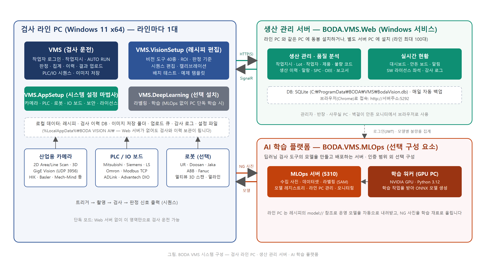
검사 라인 PC
라인마다 PC 1대를 두고, 카메라·PLC(또는 IO 보드)·필요 시 로봇을 연결합니다. 이 PC 에는 다음 프로그램이 함께 설치됩니다.
| 프로그램 | 사용자 | 역할 |
|---|---|---|
| VMS (검사 운전) | 현장 작업자 · 반장 | 매일 쓰는 메인 화면입니다. 작업자 로그인 → 작업지시 선택 → [AUTO RUN] 으로 연속 검사를 돌리고, 판정 결과·수량·NG 이력을 보여 주며 검사 결과를 서버에 올립니다. PLC/IO 보드와 주고받는 트리거·판정 신호(시퀀스)도 이 프로그램이 처리합니다. |
| VMS.VisionSetup (레시피 편집) | 비전 엔지니어 | 검사 레시피를 만드는 작업 공간입니다. 39 종의 비전 도구를 끌어다 놓고 연결해 검사 순서를 만들고, 관심 영역(ROI)과 판정 기준을 정합니다. 시퀀스 편집기, 카메라 캘리브레이션, 배치 테스트, 예제 템플릿 갤러리가 여기에 있습니다. |
| VMS.AppSetup (시스템 설정 마법사) | 설치 담당자 | 카메라 · PLC · 로봇 · IO 보드 · Web/MLOps 서버 주소 · 보안 모드 · 라이선스를 7 단계 마법사로 설정합니다. 설치 후 최초 1 회 실행하며, 설비가 바뀔 때만 다시 엽니다. |
| VMS.DeepLearning (AI 학습 도구, 선택) | 비전 엔지니어 | MLOps 서버 없이 이 PC 에서 직접 사진을 라벨링하고 모델을 학습할 때 쓰는 별도 프로그램입니다. 설치 시 "AI 학습 도구 포함"을 체크한 PC 에만 설치되며, 인증 범위 밖의 선택 구성 요소입니다. 사용법은 별책 「AI 학습 도구 매뉴얼」을 참고하세요. |
생산 관리 서버 — BODA.VMS.Web
브라우저(Chrome)로 접속하는 웹 프로그램입니다. 작업지시 · Lot · 작업자 · 제품 · 불량 코드 같은 기준 정보를 관리하고, 라인에서 올라온 검사 결과로 생산 이력 · 알람 · 파레토 · SPC · OEE · 보고서를 만듭니다. VMS 설치 파일에 동봉되어 있어 라인 PC 와 같은 PC 에 Windows 서비스로 켤 수도 있고, 별도 서버 PC 에 설치해 라인 여러 대(최대 100 대)를 붙일 수도 있습니다. Web 서버 없이 검사만 하는 단독 모드도 지원합니다(§4.9).
AI 학습 플랫폼 — BODA.VMS.MLOps (선택)
딥러닝 검사 도구가 쓰는 모델(ONNX 파일)을 만드는 서버입니다. 라인에서 올라온 불량 사진을 모아
웹에서 라벨링하고, GPU 가 있는 학습 워커 PC 가 학습을 돌려 모델 레지스트리에 등록하면,
라인 PC 는 레시피의 참조(model://…)로 운영 모델을 자동으로 내려받습니다.
MLOps 를 쓰지 않는 현장은 이 서버 없이 운영해도 됩니다.
1.2 운영 흐름 한눈에
설치와 레시피 작성이 끝난 뒤 현장에서 매일 반복되는 흐름은 다음과 같습니다.
- 관리자(Web)가 오늘의 작업지시(제품 × 수량 × 레시피)를 등록합니다. 필요하면 Lot 을 발행합니다.
- 작업자(VMS)가 헤더의 [Login...] 으로 사번과 PIN 을 입력해 로그인합니다.
- [Work Orders] 에서 작업지시를 고르면 레시피가 자동으로 불러와지고 [AUTO RUN] 이 켜집니다.
- [AUTO RUN] 을 누르면 시퀀스에 따라 트리거 대기 → 촬영 → 검사 → 판정 신호 출력이 반복됩니다.
- 검사 1 건마다 결과가 서버로 올라가고, 헤더의 진행 수량(예: 5/100)이 실시간으로 올라갑니다. 불량(NG)이 나오면 서버에 알람이 자동 생성됩니다.
- 계획 수량에 도달하면 작업지시가 자동으로 완료되고 완료 알림 창이 뜹니다. 다음 작업지시를 바로 고를 수 있습니다.
- 관리자(Web)는 대시보드 · 안돈 보드 · 생산 이력 · 품질 분석 화면에서 실적을 확인합니다.
1.3 권장 사양과 지원 장비
| 항목 | 내용 |
|---|---|
| 운영체제 | Windows 11 x64 (Windows 10 x64 가능). 라인 PC · 서버 PC 공통 |
| CPU / 메모리 | AVX2 지원 CPU 필수(비전 연산 가속). 메모리 16GB 이상 권장. 딥러닝 도구를 쓰는 라인은 NVIDIA GPU 가 있으면 추론이 빨라지지만, 없어도 CPU 로 자동 동작합니다 |
| 디스크 | 설치 약 1.5GB + 검사 이미지 저장 공간(보존 기간 × 일 생산량에 따라 산정) |
| 런타임 | .NET 8 · Visual C++ 런타임은 설치 파일에 동봉되어 별도 설치가 필요 없습니다 |
| 카메라 | GigE Vision 2D(Area Scan · Line Scan) · 3D 카메라. 제조사별 연결 방식은 §2.1 표 참고. 카메라 없이 저장 이미지 · 점군 파일로도 레시피 편집과 검사 시험이 가능합니다 |
| PLC | Mitsubishi(MC) · Siemens(S7) · LS Electric(XGT) · Omron(FINS) · Modbus TCP — 모두 TCP 직접 통신이라 별도 드라이버가 필요 없습니다. 시리얼(RS-232/485) 연결도 지원합니다 |
| IO 보드 | ADLink PCI-7432/7433/7434/7396 (DASK x64 드라이버) · Advantech PCI-1730/1750 계열 (DAQNavi) |
| 로봇 (선택) | Universal Robots · Doosan · Jaka · ABB · Fanuc — 멀티뷰 3D 스캔과 얼라인 보정용 |
| 브라우저 | Google Chrome (생산 관리 웹 · MLOps 화면) |
| 학습 워커 (MLOps 선택) | NVIDIA GPU(VRAM 8GB 이상) · CUDA 12.4 드라이버(550 이상) · Python 3.12 64-bit · 여유 디스크 50GB |
1.4 핵심 용어
| 용어 | 설명 |
|---|---|
| 레시피 (Recipe) | 제품 하나를 검사하는 설정 묶음입니다. 카메라별 스텝, 스텝 안의 비전 도구 연결, ROI, 판정 기준을 담습니다. VisionSetup 에서 만들고 VMS 가 불러와 실행합니다. Web 에서는 "레시피 파라미터" 화면에서 기준값을 관리합니다. |
| 스텝 (Step) | 레시피 안에서 카메라 1 대가 한 번 촬영해 검사하는 단위입니다. 이름은 "1-1", "1-2" 처럼 카메라 번호-순번으로 자동 매겨집니다. |
| 도구 (Tool) | 이미지를 처리하거나 재고 판정하는 기능 블록입니다(Blob, Caliper, Feature Match 등 39 종, §6). |
| ROI | 도구가 볼 관심 영역입니다. 사각형 · 회전 사각형 · 원 · 타원 · 다각형으로 그립니다. |
| Fixture (좌표 연결) | 패턴 매칭이 찾은 위치·각도만큼 뒤 도구의 ROI 를 자동으로 옮기는 연결입니다. 제품이 조금씩 틀어져 놓여도 같은 자리를 검사합니다. |
| 시퀀스 | AUTO RUN 중 "트리거 대기 → 촬영 → 검사 → 결과 출력 → 반복" 흐름의 정의입니다. PLC 주소나 IO 보드 채널을 노드로 연결합니다. |
| 작업지시 (WO) | 제품 × 계획 수량 × 레시피 단위의 생산 지시입니다. 계획됨 → 진행 중 → 완료 → 마감 순서로 진행됩니다. |
| Lot | 작업지시 안에서 자재 투입분이나 교대 단위로 나누는 생산 묶음입니다. 한 작업지시에 여러 Lot 을 동시에 열 수 있습니다. |
| 작업자 (Operator) | 사번 + PIN 으로 VMS 나 키오스크에서 출근하는 현장 인력입니다. 등급은 Operator / Lead / Supervisor. |
| 시스템 사용자 | VMS PC 안의 관리 계정(Operator / Engineer / Admin)입니다. 설정 패널 · 레시피 편집 · 관리자 도구 권한을 정합니다(§4.12). |
| OK / NG | 검사 판정 결과입니다. NG 가 나오면 Web 에 알람이 자동 생성됩니다. |
| 라인 번호 (ClientIndex) | Web 서버가 라인 PC 를 구분하는 번호(0~99)입니다. 작업지시 · 레시피 · 이력이 이 번호로 분리됩니다. |
| model:// 참조 | 딥러닝 도구의 모델 파일 대신 MLOps 레지스트리의 모델을 가리키는 주소입니다. 예: model://{모델ID}@production |
1.5 이 매뉴얼 읽는 법
| 독자 | 읽을 장 |
|---|---|
| 설치 담당자 | 2장 설치 · 3장 시스템 설정 마법사 · 11장 유지보수 · 12장 문제 조치 |
| 현장 작업자 · 반장 | 4장 검사 운전 · 12장 문제 조치 (앞부분) |
| 비전 엔지니어 | 5장 레시피 편집 · 6장 비전 도구 · 7장 검사 설정 예제 · 9장 MLOps(딥러닝 도구를 쓸 때) |
| 관리자 (생산 · 품질) | 8장 생산 관리 웹 · 11장 유지보수 |
화면의 버튼 이름은 [대괄호]로, 메뉴 경로는 메뉴 → 항목 으로 적었습니다. 입력란 옆의 파란 물음표(?) 아이콘에 마우스를 올리면 그 항목의 설명이 프로그램 안에서 바로 표시되므로, 설정 중에 매뉴얼을 뒤지지 않아도 됩니다.
2. 설치
2.1 설치 전 준비
설치 파일(MSI) 하나에 VMS · VisionSetup · AppSetup · Web 서버 · .NET 런타임 · Visual C++ 런타임이 모두 들어 있습니다. 인터넷이 안 되는 공장 PC 에서도 다른 프로그램을 먼저 설치할 필요가 없습니다. 다만 카메라 · IO 보드 제조사 소프트웨어는 장비에 따라 별도로 설치해야 합니다.
| 장비 | 별도 설치할 것 | 비고 |
|---|---|---|
| Basler 카메라 | pylon Camera Software Suite (Runtime) | 없으면 카메라 검색은 되지만 연결 · 촬영이 실패합니다 |
| Hikrobot 카메라 | MVS (Machine Vision Software) 런타임 | GigE 필터 드라이버 포함 |
| Mech-Mind 3D 카메라 | 없음 | 구동 파일이 설치 파일에 동봉됩니다 |
| Matrox · Dalsa (프레임 그래버) | MIL 런타임 | Camera Link 카메라 구성에서만 |
| ADLink IO 보드 | DASK 드라이버 64비트(x64) | 32비트만 설치된 PC 에서는 보드가 인식되지 않습니다 |
| Advantech IO 보드 | DAQNavi | 미설치 시 시뮬레이션 보드로 동작합니다 |
| PLC (5 종) | 없음 | TCP 직접 통신 — 드라이버 불필요 |
설치 순서 (권장)
- 카메라 · PLC · IO 보드를 PC 에 연결하고 제조사 소프트웨어를 설치합니다.
- VMS 설치 파일을 실행합니다 (§2.2).
- 서버 PC 를 따로 두는 구성이면 서버 PC 에 Web 서버를 먼저 설치하고 접속을 확인합니다 (§2.3).
- 라인 PC 에서 시스템 설정 마법사(3장)를 실행해 카메라 · PLC · Web 주소 · 보안 모드를 저장합니다.
- VMS 를 실행해 하단 상태바의 CAM · Web 연결 표시를 확인합니다 (§4.7).
2.2 VMS 설치 (설치 마법사)
VMS-1.39.2.msi처럼 버전이 붙은 설치 파일을 더블 클릭합니다. 설치에는 관리자 권한이 필요합니다.- 시작 화면에서 [다음]을 누릅니다. 별도의 라이선스 동의 단계는 없습니다.
- 설치 폴더는 기본값
C:\Program Files\VASIM\BODA Vision System\을 그대로 두는 것을 권장합니다. - 설치 구성 선택 화면에서 이 PC 에 함께 설치할 항목을 고릅니다.
- BODA VMS Web 서버 포함 (기본: 켬) — 이 PC 를 생산 관리 서버로도 쓰거나, 나중에 쓸 가능성이 있으면 켜 둡니다. 포함해서 설치해도 자동으로 실행되지는 않으며, 설정 마법사에서 켤 때만 동작합니다(§2.3).
- AI 학습 도구 포함 (기본: 해제) — MLOps 서버 없이 이 PC 에서 직접 모델을 학습해야 하는 엔지니어 PC 만 켭니다. 검사만 하는 라인 PC 에는 필요 없습니다.
- [설치]를 누르면 파일 복사가 진행되고, 완료 화면에서 [마침]을 누릅니다. 시작 메뉴와 바탕화면에 바로가기가 만들어집니다.
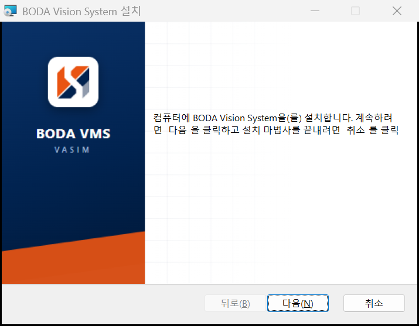
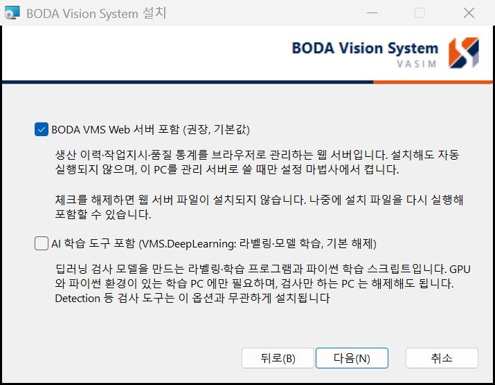
msiexec /i VMS-1.39.2.msi /qn INSTALLWEB=0 INSTALLAITOOLS=0 — 값 0 은 제외, 1 은 포함입니다.설치 후 처음 실행하면
VMS 를 처음 실행하면 설정 파일이 없으므로 "초기 시스템 설정이 필요합니다" 안내와 함께
시스템 설정 마법사(VMS.AppSetup)가 자동으로 열립니다. 3장에 따라 7 단계를 저장한 뒤
VMS 를 다시 실행하세요. 설정 파일과 레시피, 검사 이력은 모두 %LocalAppData%\BODA VISION AI\
아래에 저장되며 프로그램을 제거하거나 업그레이드해도 지워지지 않습니다.
2.3 Web 서버 설치와 구성
생산 관리 웹(BODA.VMS.Web)은 Windows 서비스 BodaVmsWeb 으로 실행되며 포트 5292 를 씁니다.
별도의 웹 서버 프로그램(IIS 등)이나 데이터베이스 설치는 필요 없습니다(SQLite 내장). 구성은 두 가지입니다.
방법 A — 라인 PC 에 동봉된 Web 서버 켜기 (설정 마법사)
설치 구성 선택에서 "Web 서버 포함"을 켠 PC 에서는 명령어 없이 화면에서 켤 수 있습니다.
- 시스템 설정 마법사(3장)를 실행해 2 단계 Application Settings 로 이동합니다.
- "Web 서버 초기 구성 (이 PC)" 카드에서 관리자(admin) 계정 비밀번호를 입력하고 구성 버튼을 누릅니다. 비밀번호는 8 자 이상이어야 하며 12 자 이상을 권장합니다.
- 서비스 등록과 시작이 자동으로 진행되고, 카드에 "✔ 초기 구성 완료" 와 서비스 상태(Running)가 표시됩니다.
- 같은 페이지의 Web Server URL 이
http://localhost:5292인지 확인하고 마법사를 끝까지 진행해 저장합니다. - 브라우저에서
http://localhost:5292에 접속해 로그인 화면이 뜨면 완료입니다. 계정은admin/ 방금 입력한 비밀번호입니다.
- 구성은 끝났는데 서비스가 멈춰 있으면(Stopped) 카드에 [서비스 시작 (관리자 권한)] 버튼이 나타납니다. 누르면 Windows 권한 확인 창(UAC)이 뜨고, 승인하면 서비스가 부팅 시 자동 시작으로 바뀐 뒤 곧바로 시작됩니다.
- 이 구성에서는 Web 서버가 이 PC 안에서만(127.0.0.1) 응답합니다. 다른 PC 의 브라우저에서 보려면 §2.5 의 안내에 따라 바인딩 주소와 방화벽을 열어야 합니다.
방법 B — 별도 서버 PC 에 설치 (배포 스크립트)
라인이 여러 대이거나 사무실에서 항상 접속해야 하면 서버 PC 를 따로 둡니다. Web 서버 배포 패키지는 설치 매체에 MSI 와 함께 제공되며(없으면 공급사에 요청), 관리자 PowerShell 에서 다음을 실행합니다.
# 관리자 PowerShell — 압축을 푼 폴더로 이동
cd <압축 푼 폴더>\deploy
.\Install-Web-Offline.ps1스크립트가 서비스 등록 · 서명 키 생성 · 초기 관리자 비밀번호 생성 · 설정 파일 권한 제한 · 방화벽 규칙까지
한 번에 처리하고, 화면에 초기 admin 비밀번호를 표시합니다. 기본값은 설치 폴더 C:\Deploy\BodaVmsWeb,
데이터 폴더 C:\ProgramData\BODA\VMS, 포트 5292 입니다. 옵션으로 바꿀 수 있습니다.
.\Install-Web-Offline.ps1 -Port 8080 -InstallPath "D:\BODA Web" -DataDir "D:\BODA Data"appsettings.Production.json 입니다. 이 파일을 잃으면 모든
사용자가 다시 로그인해야 하므로 설치 직후 안전한 곳에 백업하세요. 첫 로그인 후에는 admin 비밀번호를
바꾸고, 필요한 사용자를 가입 → 승인으로 추가합니다(§8.2).2.4 MLOps 서버 · 학습 워커 설치 (선택)
딥러닝 모델을 웹에서 만들어 라인에 배포하려는 현장만 설치합니다. 검사 자체는 MLOps 없이도 동작합니다.
MLOps 서버
- 서버 PC(Web 서버와 같은 PC 여도 됨)에 MLOps 배포 패키지를 풀고 관리자 PowerShell 에서 실행합니다.
.\scripts\install-server-service.ps1 -DataDir D:\BODA-MLOps -ProductionWebUrl http://<Web 서버>:5292 - 서비스
BodaVmsMlops(포트 5310)가 등록되고 방화벽 규칙이 추가됩니다. 데이터(DB · 사진 · 모델)는-DataDir폴더에 저장되므로 이 폴더를 백업 대상에 넣습니다. - MLOps 화면은 Web 서버의 관리자 계정으로 로그인합니다(§9.1). 두 서버가 같은 서명 키를 쓰도록 스크립트가
-JwtKey를 요구하며, 값은 파일이 아니라 서비스 환경변수에만 저장됩니다.
학습 워커 (GPU PC)
- NVIDIA GPU(VRAM 8GB 이상), CUDA 12.4 지원 드라이버(550 이상), Python 3.12 64-bit 를 "모든 사용자용"으로 설치합니다.
- MLOps 화면 학습 → 워커 → [워커 등록]에서 이름을 넣고 [발급]을 눌러
wk_…토큰을 받습니다. 토큰은 이때 한 번만 표시됩니다. BODA-VMS-TrainWorker-0.1.1.msi를 실행하고 "워커 연결 설정" 화면에 관리 서버 주소(http://서버:5310) · 워커 토큰 · 워커 이름을 입력합니다.- 설치가 끝나면 서비스
BodaVmsTrainWorker가 시작되어 첫 실행 시 파이썬 환경(venv, 약 6GB)을 준비합니다. 온라인 설치는 10~40 분이 걸립니다. 폐쇄망은 wheel 번들이 동봉된-offline.msi를 씁니다. - MLOps 워커 화면에서 상태가 대기 중으로 바뀌면 준비 완료입니다. 로그는
%ProgramData%\BODA VMS TrainWorker\logs에 남습니다.
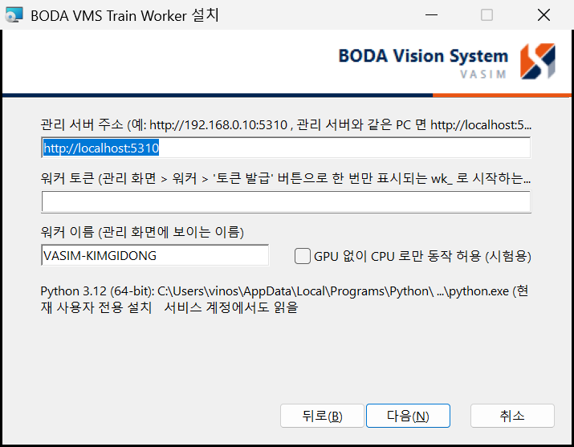
2.5 네트워크 · 방화벽
| 연결 | 포트 / 프로토콜 | 방향 | 용도 |
|---|---|---|---|
| 라인 PC → Web 서버 | 5292 / TCP (HTTP) | 아웃바운드 | 검사 결과 업로드 · 작업지시 · 작업자 로그인 · 실시간 알림(SignalR) |
| 브라우저 → Web 서버 | 5292 / TCP | 인바운드(서버) | 관리 화면 접속 |
| 라인 PC · 워커 → MLOps 서버 | 5310 / TCP | 아웃바운드 | 모델 내려받기 · NG 사진 업로드 · 학습 작업 |
| 라인 PC ↔ 카메라 | 3956 / UDP + GVSP 스트림 | 양방향 | GigE Vision 검색 · 영상 수신 (점보 프레임 9000 권장) |
| 라인 PC → PLC | 벤더별 (MC 5000 · S7 102 · FINS 9600 · Modbus 502 등) | 아웃바운드 | 트리거 · 판정 신호 |
| 라인 PC → 로봇 | 벤더별 (UR 30003 · Modbus 502 등) | 아웃바운드 | 포즈 읽기 · 웨이포인트 |
- Web 서버를 별도 PC 에 설치하면 배포 스크립트가 방화벽 인바운드 규칙
BODA VMS Web을 만듭니다. 라인 PC 와 동봉 구성(방법 A)은 기본이127.0.0.1바인딩이라 외부 접속이 막혀 있습니다 — 다른 PC 에서 보려면appsettings.Production.json의Kestrel:Endpoints:Http:Url을http://0.0.0.0:5292로 바꾸고 방화벽에서 5292 를 사내망(Private/Domain)에만 엽니다. - 카메라는 전용 네트워크 카드에 직결하고, 그 카드에만 카메라와 같은 대역의 고정 IP 를 줍니다.
- 보안 모드가 Production 인 라인 PC 는 다른 PC 를 가리키는
http://서버 주소를 거부합니다(§3.8). 원격 서버는https://로 열거나(사설 인증서), 사내 실증 단계에서는 Development 모드를 씁니다. 같은 PC 를 가리키는localhost주소는 http 여도 허용됩니다.
2.6 SW 라이선스 설치 · 활성화
SW 라이선스는 "이 PC 에서 BODA VMS 를 사용해도 된다"는 사용권 파일(license.lic)입니다.
인터넷 연결 없이 파일 하나로 동작하므로 폐쇄망에서도 추가 설정이 필요 없습니다.
지금은 도입 전환기라 라이선스가 없어도 사용 제한은 없으며, 상태 표시와 기록에 "미설치" 경고만 남습니다.
지문 코드로 발급받기
- 시스템 설정 마법사 마지막 페이지(Security & License)의 SW 라이선스 카드에서
지문 코드(예:
0X0Y9-MMS36-7540K, 15 자)를 [복사]해 본사 담당자에게 전달합니다. 전화 · 메신저 · 이메일 모두 가능합니다. - 발급받은
license.lic파일을 USB 등으로 이 PC 에 옮깁니다. 파일은 이 PC 에서만 유효합니다. - [라이선스 파일 가져오기...] 를 누르고 파일을 선택합니다. 권한 확인 창(UAC)이 뜨면 [예]를 누릅니다.
- 카드의 현재 상태가 정상으로 바뀌면 완료입니다.
서버 1 대 + 라인 여러 대 구성
Web 서버가 있는 구성이라면 라이선스는 서버 PC 에만 설치합니다. 각 라인 PC 는 서버에서 자동으로 사용권(좌석)을 받아 가며, 라인 PC 를 교체해도 재발급이 필요 없습니다. 좌석 현황은 Web 시스템 관리 → SW 라이선스에서 봅니다(§8.24). 서버가 꺼져 있어도 라인 PC 는 마지막으로 좌석을 받은 시점부터 72 시간 동안 정상 동작합니다.
재발급이 필요한 경우
- 지문 불일치 — 다른 PC 용 라이선스이거나, 부품 교체 · Windows 재설치로 지문이 바뀐 경우입니다. 새 지문 코드로 재발급을 요청합니다.
- 만료 임박 · 유지보수 만료 — 계약 갱신 후 받은 새 파일을 같은 방법으로 가져오기 하면 덮어써집니다.
2.7 업그레이드와 제거
인앱 업데이트 (권장)
새 버전이 나오면 VMS 가 시작할 때 "업데이트 가능" 창으로 알려 주고, 사이드 패널 Updates 섹션에 배지가 표시됩니다.
- 안내 창에서 [확인]을 누릅니다. 수동으로 확인하려면 사이드 패널 Updates 의 [Check for updates] 를 누릅니다.
- 설치 파일이 앱 안에서 다운로드되며 Updates 섹션에 진행률이 표시됩니다. [다운로드 취소]로 멈출 수 있고, 내려받은 파일은 손상 여부(SHA-256)를 자동 검증합니다.
- 다운로드가 끝나면 설치 시작 확인 창이 뜹니다. 시작하면 Windows 권한 확인 창(UAC)이 한 번 뜨고, 진행률 창(버전 · 현재 작업 · %)이 표시되는 동안 기다립니다.
- 설치가 끝나면 VMS 가 자동으로 다시 실행됩니다. 이 PC 에서 Web 서비스를 운영 중이었다면 업데이트가 서비스를 먼저 내리고, 설치 후 다시 시작해 응답까지 확인합니다.
- 자동 검사(AUTO RUN)가 도는 동안에는 업데이트를 시작할 수 없습니다. 검사를 멈춘 뒤 진행하세요.
- 다운로드나 설치가 실패하면 브라우저에서 설치 파일을 직접 내려받는 방법이 안내됩니다. 설치 과정 기록은
C:\ProgramData\BODA\VMS\update-bootstrap.log에 남습니다.
설치 파일로 직접 업그레이드
새 버전 MSI 를 더블 클릭하면 이전 버전이 자동으로 제거되고 새 버전이 설치됩니다. 설치 구성 선택은 이전 선택이 유지되며, 설정 · 레시피 · 검사 이력 · 캘리브레이션은 그대로 보존됩니다.
제거
- Windows 설정 → 앱 → "BODA Vision System" → 제거. 또는 시작 메뉴의 제거 바로가기.
- 사용자 데이터(
%LocalAppData%\BODA VISION AI\)와 Web 데이터(C:\ProgramData\BODA\VMS\)는 제거해도 남습니다. 완전히 지우려면 두 폴더를 직접 삭제합니다.
3. 시스템 설정 마법사 (VMS.AppSetup)
3.1 실행 방법과 저장 동작
시스템 설정 마법사는 다음 세 가지 경로로 실행합니다.
- 최초 실행 자동 — VMS 를 설치 후 처음 실행하면(설정 파일이 없으면) 안내 창과 함께 마법사가 자동으로 열립니다. 저장을 마친 뒤 VMS 를 다시 실행하세요.
- VMS 에서 실행 — 사이드 패널 External Tools 의 [System Setup] 버튼 (Supervisor · Admin 전용, §4.6).
- 시작 메뉴 — "BODA Vision System" 그룹의 설정 마법사 바로가기. 한 PC 에서 두 라인을 운용할 때는
VMS.AppSetup.exe --instance 이름으로 실행합니다(§11.5).
마법사는 총 7 단계이며, 각 단계 하단의 [← Back] / [Next] 로 이동하고 마지막 단계에서 [Finish] 를 누르면
설정 파일(%LocalAppData%\BODA VISION AI\system_config.json)에 저장됩니다. 저장한 설정은 VMS 를 다시 시작할 때
반영됩니다 — 운전 중이라면 검사를 멈추고 VMS 를 재시작하세요. [Finish] 를 누르지 않고 닫으면 아무것도 바뀌지 않습니다.
입력란 라벨 옆의 파란 물음표(?) 아이콘에 마우스를 올리면 그 항목의 설명이 말풍선으로 표시됩니다. 이 장의 표와 같은 내용입니다.
3.2 1 단계 — 시작 (Welcome)
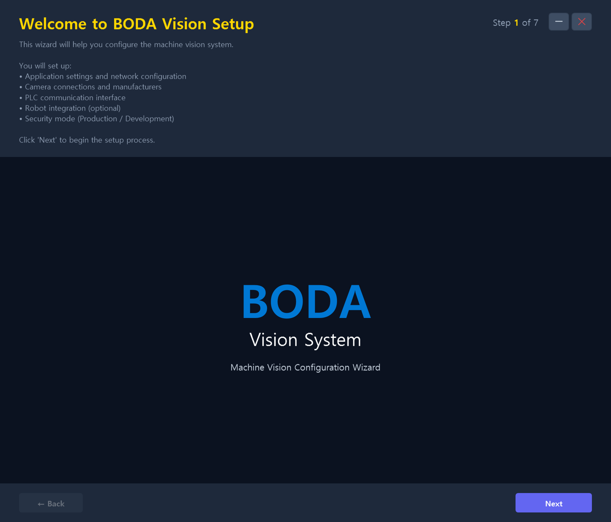
입력 항목이 없는 안내 화면입니다. [Next] 를 눌러 진행합니다.
3.3 2 단계 — Application Settings (이름 · IP · 서버 연동 · 관리자 계정)
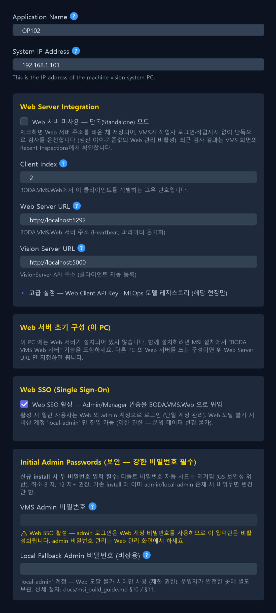
| 항목 | 컨트롤 | 설명 | 기본값 |
|---|---|---|---|
| Application Name | 이 검사기를 부르는 이름입니다. VMS 헤더 왼쪽과 Web 라인 목록에 표시됩니다. 줄바꿈 · 탭 같은 특수 문자는 넣지 마세요. | BODA Vision System | |
| System IP Address | 이 PC 의 IP 주소입니다. Web 라인 목록에 참고용으로 표시됩니다. | 192.168.0.1 | |
| Web 서버 미사용 — 단독(Standalone) 모드 | 체크하면 Web 서버 주소를 비운 채 저장되어 작업자 로그인 · 작업지시 없이 검사만 운전합니다(§4.9). 체크 시 아래 Web 연동 항목은 잠깁니다. | 해제 | |
| Client Index (라인 번호) | Web 서버가 이 라인을 구분하는 번호입니다. 0~99 만 저장되며 서버 안에서 겹치면 안 됩니다. 서버가 여러 대인 공장은 십의 자리를 서버 번호로 쓰는 규칙을 권장합니다(§8.28). | 1 | |
| Web Server URL | 생산 관리 웹 주소입니다. 이 PC 안의 동봉 서버면 http://localhost:5292, 별도 서버면 http://서버IP:5292(Production 모드에서는 https 필요, §3.8). | http://localhost:5292 | |
| Vision Server URL | VisionServer 연동 구성에서만 씁니다. 쓰지 않으면 그대로 둡니다. | http://localhost:5000 | |
| 고급 설정 (접기/펼치기) | 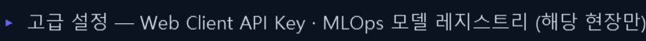 |
클릭하면 Web Client API Key · MLOps 서버 주소 · MLOps 라인 토큰 입력란이 나타납니다. 해당 현장만 펼칩니다. 이미 값이 저장된 PC 에서는 자동으로 펼쳐집니다. | 접힘 |
| Web Client API Key (고급) |  |
보통 비워 둡니다. Web 서버 관리자가 "API 키 강제"를 켠 경우에만 받은 키를 그대로 입력합니다. 값이 틀리면 작업지시 · 이력 업로드 · 작업자 로그인이 모두 끊깁니다. 단독 모드에서는 잠깁니다. | (빈 값) |
| MLOps 서버 주소 (고급) | MLOps 모델 레지스트리 주소(예: http://서버:5310). 레시피의 model:// 참조 모델을 이 서버에서 내려받고 NG 사진을 학습 데이터로 올립니다(9장). 단독 모드에서도 입력할 수 있습니다. 쓰지 않으면 비워 둡니다. | (빈 값) | |
| MLOps 라인 토큰 (고급) |  |
MLOps 화면 배포 → 라인 PC 에서 이 라인용으로 발급한 토큰(ln_…)을 그대로 붙여 넣습니다. 토큰이 없으면 모델을 내려받지 못하고 사진도 올라가지 않습니다. | (빈 값) |
| Web 서버 초기 구성 (이 PC) | — | 설치 시 Web 서버를 포함한 PC 에만 카드가 나타납니다. admin 비밀번호를 넣고 구성 버튼을 누르면 서비스가 등록 · 시작되며, 멈춰 있으면 [서비스 시작 (관리자 권한)] 버튼이 나타납니다(§2.3). | — |
| Web SSO 활성 | 체크하면 VMS 의 관리자(Admin/Engineer) 로그인을 Web 계정으로 위임해 계정을 한곳에서 관리합니다. Web 에 닿지 못할 때는 비상 계정 local-admin 만 제한 권한으로 진입합니다. | 해제 | |
| VMS Admin 비밀번호 | VMS 안의 관리자 계정 admin 비밀번호입니다. 신규 설치 시 필수(8 자 이상, 12 자 이상 권장). 이미 계정이 있는 PC 에서는 비워 두면 바꾸지 않습니다. | — | |
| Local Fallback Admin 비밀번호 |  |
비상 계정 local-admin 의 비밀번호입니다. Web SSO 를 쓰는 현장에서 서버 장애 시에만 사용하며 안전한 곳에 따로 보관합니다. | — |
3.4 3 단계 — Camera Configuration (카메라)
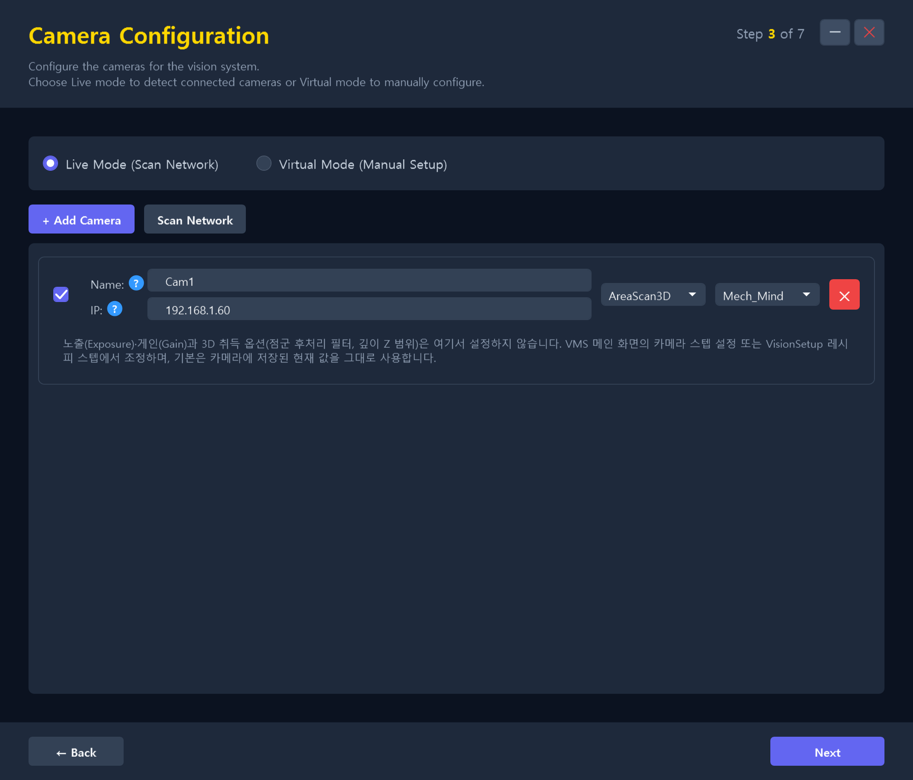
| 항목 | 컨트롤 | 설명 | 기본값 |
|---|---|---|---|
| 카메라 모드 | 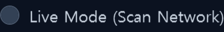 |
Live Mode는 네트워크를 검색해 연결된 카메라를 자동으로 찾고, Virtual Mode는 카메라 없이 항목을 손으로 만듭니다. 카메라가 아직 없거나 저장 이미지로만 시험하는 PC 는 Virtual 로 둡니다. | Virtual |
| [+ Add Camera] | 카메라 카드를 하나 추가합니다. | — | |
| [Scan Network] | GigE Vision 표준(UDP 3956 브로드캐스트)으로 같은 대역의 카메라를 검색해 카드로 채웁니다. | — | |
| 사용 체크 · Name · IP | 카드 왼쪽 체크를 끄면 그 카메라는 VMS 가 연결하지 않습니다. 이름은 VMS 카메라 화면 제목과 레시피 스텝 이름("1-1")의 번호 순서에 쓰입니다. | Camera 1 / 192.168.0.101 | |
| Camera Type | AreaScan2D · AreaScan3D · LineScan2D · LineScan3D. 선택에 따라 카드 아래에 라인 스캔 항목이 나타납니다. | AreaScan2D | |
| Manufacturer | 제조사. HIK · Basler · Mech_Mind · Matrox/Dalsa 는 실제 드라이버로 연결되며, 그 외는 시뮬레이션으로 동작합니다(§2.1). Matrox · Dalsa 를 고르면 Frame Grabber 항목이 나타납니다. | HIK | |
| 〈Line Scan〉 Trigger / Line Rate / Scan Length | 라인 스캔 카메라의 트리거 소스(Internal · Encoder) · 라인 레이트(Hz) · 스캔 길이(라인 수). | Internal / 10000 / 4096 | |
| 〈Frame Grabber〉 Board Type / Board# / Digitizer# / DCF | MIL 보드 타입 · 보드/디지타이저 번호 · Camera Link DCF 파일. | SOLIOS / 0 / 0 |
3.5 4 단계 — PLC Communication (PLC 통신)
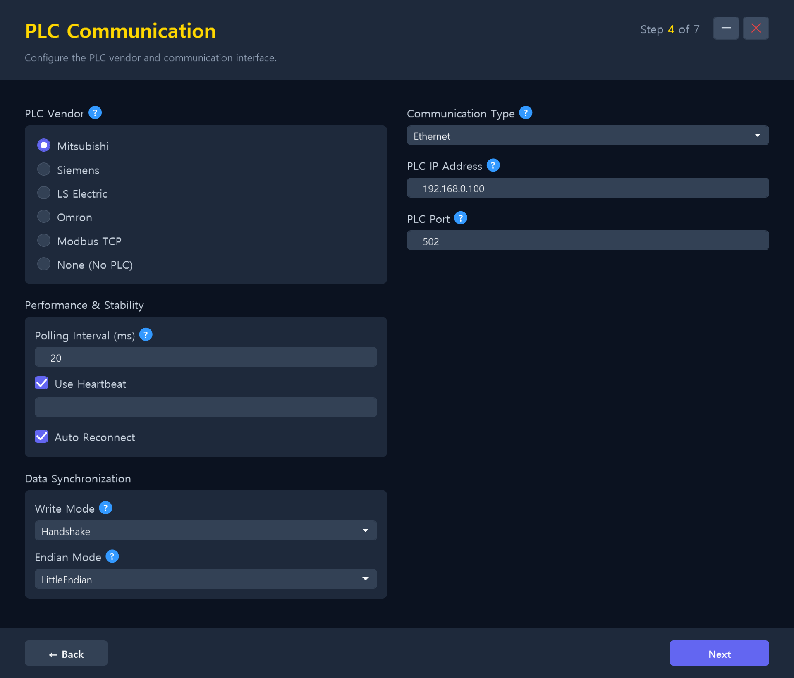
| 항목 | 컨트롤 | 설명 | 기본값 |
|---|---|---|---|
| PLC Vendor | Mitsubishi(MC) · Siemens(S7) · LS Electric(XGT) · Omron(FINS) · Modbus TCP · None. PLC 없이 IO 보드만 쓰면 None 으로 두고 6 단계에서 보드를 등록합니다(§4.11). | None | |
| Communication Type | Ethernet 또는 Serial. Serial 이면 아래 IP · Port 대신 시리얼 항목이 나타납니다. | Ethernet | |
| 〈Ethernet〉 PLC IP Address / Port | PLC 의 IP 주소와 포트. | 192.168.0.100 / 502 | |
| 〈Modbus〉 Modbus Unit ID | Modbus 슬레이브 ID(1~255). | 255 | |
| 〈Serial〉 Port / Baud / Data / Parity / Stop | 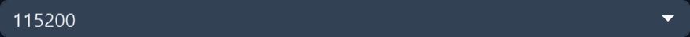 | 시리얼 포트 파라미터. | COM1 / 115200 / 8 / None / One |
| Polling Interval (ms) | PLC 신호를 읽는 주기입니다. 짧을수록 트리거 반응이 빠르지만 PLC 부하가 늘어납니다. | 20 | |
| Use Heartbeat / 주소 | 켜면 VMS 가 지정 주소(예: D100)에 카운터를 계속 써서 PLC 가 VMS 생존을 감시할 수 있습니다. | 해제 | |
| Auto Reconnect | 연결이 끊기면 자동으로 다시 접속합니다. | 사용 | |
| Write Mode / Endian Mode | 결과 쓰기 방식(Handshake 등)과 워드 바이트 순서. PLC 프로그램의 규약에 맞춥니다. | Handshake / LittleEndian |
PLC 주소를 어느 신호에 쓸지는 이 단계가 아니라 VisionSetup 의 시퀀스 편집기(§5.10)에서 노드마다 지정합니다.
3.6 5 단계 — Robot Configuration (로봇, 선택)
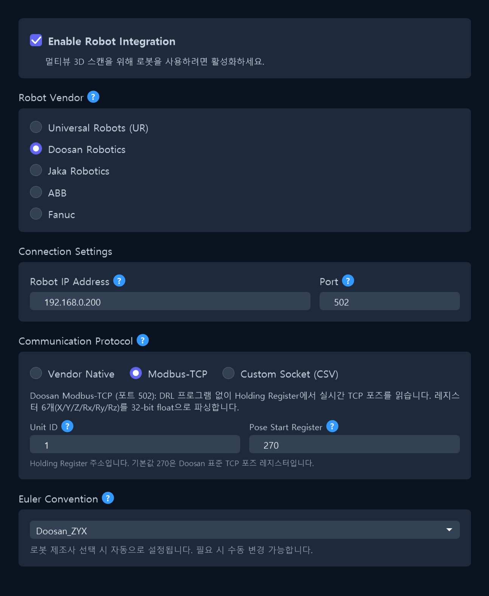
| 항목 | 컨트롤 | 설명 | 기본값 |
|---|---|---|---|
| Enable Robot Integration | 멀티뷰 3D 스캔이나 얼라인 보정에 로봇을 쓸 때 켭니다. 끄면 아래 항목이 숨겨집니다. | 해제 | |
| Robot Vendor | UR · Doosan · Jaka · ABB · Fanuc. 선택하면 포트와 Euler 규약이 벤더 기본값으로 바뀝니다. | UR | |
| Robot IP Address / Port | 로봇 컨트롤러 주소와 포트. | 192.168.0.200 / 벤더 기본 | |
| Communication Protocol | 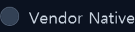 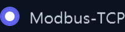 | Vendor Native · Modbus-TCP(Doosan) · Custom Socket(CSV). | Vendor Native |
| 〈Modbus-TCP〉 Unit ID / Pose Start Register | Holding Register 로 포즈를 읽을 때의 슬레이브 ID 와 시작 주소(270 = Doosan 표준). | 1 / 270 | |
| Euler Convention | 회전 표현 규약. 벤더 선택 시 자동 설정되며 필요하면 바꿉니다. | 벤더 기본 |
3.7 6 단계 — IO Board Configuration (IO 보드)
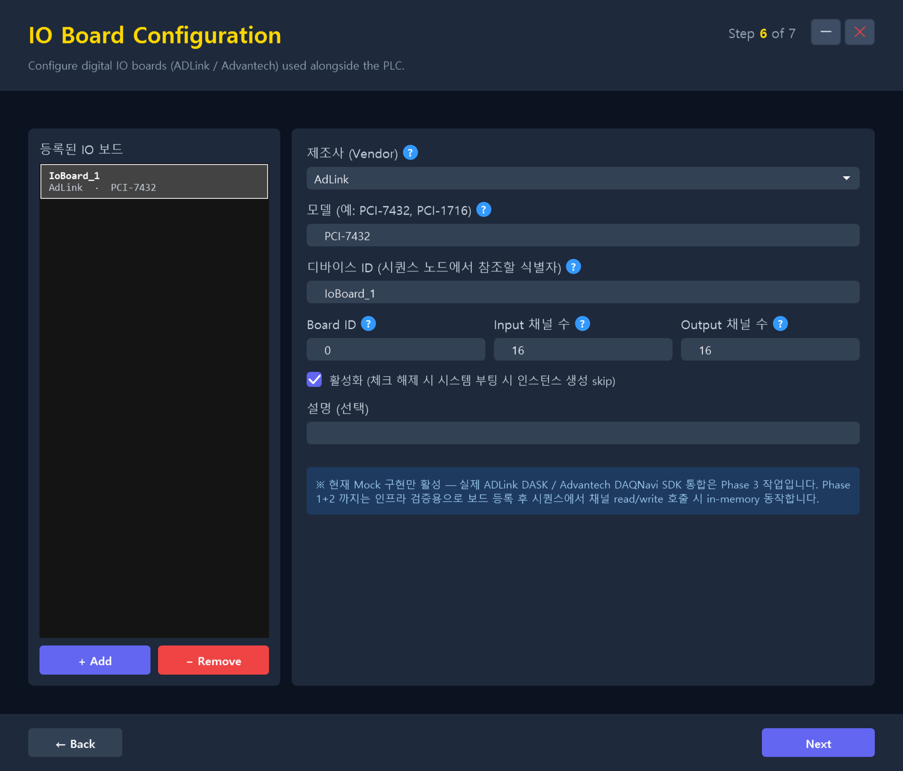
| 항목 | 컨트롤 | 설명 | 기본값 |
|---|---|---|---|
| [+ Add] / [− Remove] | 보드를 추가 / 선택한 보드를 제거합니다. | — | |
| Vendor | AdLink · Advantech. | AdLink | |
| Model | 보드 모델명. ADLink PCI-7432/7433/7434/7396, Advantech PCI-1730/1750 계열. | PCI-7432 | |
| Device ID | 시퀀스 편집기의 장치 목록에 나타나는 이름입니다. 노드에서 이 이름으로 보드를 고릅니다. | IoBoard_1 | |
| Board ID | 같은 모델이 여러 장일 때 몇 번째 카드인지(0 부터). | 0 | |
| Input / Output 채널 수 |  | 디지털 입력 · 출력 채널 수. 채널 번호는 0 부터 셉니다. | 16 / 16 |
| 활성화 | 끄면 VMS 가 시작할 때 이 보드를 연결하지 않습니다. | 사용 | |
| 설명 | 메모(선택). | — |
3.8 7 단계 — Security & License (보안 모드 · 라이선스)
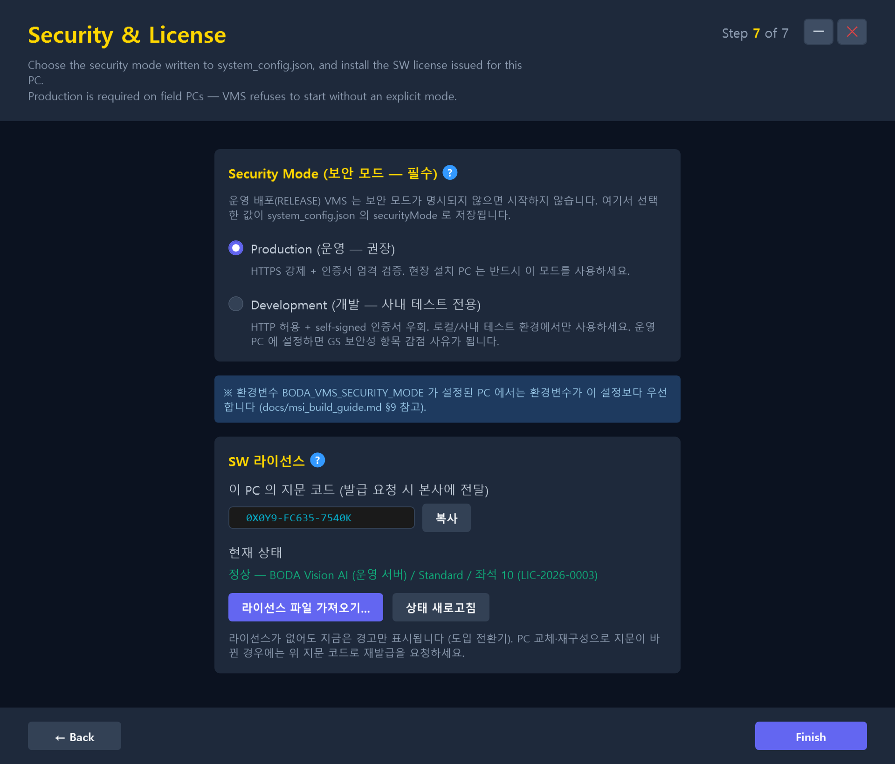
| 항목 | 컨트롤 | 설명 | 기본값 |
|---|---|---|---|
| Production (운영 — 권장) | 다른 PC 를 가리키는 서버 주소는 HTTPS 만 허용하고 인증서를 엄격하게 검증합니다. 현장에 설치하는 PC 는 이 모드를 씁니다. 같은 PC 의 localhost 주소는 http 여도 됩니다. | 선택됨 | |
| Development (개발 — 사내 테스트 전용) | HTTP 와 자체 서명 인증서를 허용합니다. 사내 실증처럼 원격 서버를 http 로 붙여야 하는 환경에서만 씁니다. | — | |
| 지문 코드 + [복사] | 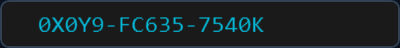 | 이 PC 의 라이선스 발급용 지문 코드(15 자). [복사] 후 본사에 전달합니다(§2.6). | 자동 표시 |
| 현재 상태 | — | 설치된 라이선스의 상태(정상 · 미설치 · 만료 임박 · 지문 불일치 등)와 고객명 · 좌석 수. | 미설치 |
| [라이선스 파일 가져오기...] / [상태 새로고침] | 발급받은 license.lic 를 선택해 설치 / 상태 표시를 다시 읽습니다. | — |
BODA_VMS_SECURITY_MODE 를 설정해 둔 PC 에서는 환경변수가 이 선택보다 우선합니다.3.9 저장 후 확인할 것
- VMS 를 실행해 하단 상태바를 봅니다 — CAM n/m 이 초록(전부 연결), Web Connected(또는 단독 모드) 인지 확인합니다(§4.7).
- PLC 를 구성했다면 PLC 칩이 초록인지, IO 보드를 구성했다면 IO n/m 칩이 초록인지 확인합니다. 빨간색이면 System Log 의 사유를 보고 12장을 참고합니다.
- Web 연동 현장은 Web 의 설비 관리 → 비전 클라이언트 화면에 이 라인이 온라인으로 보이는지 확인합니다(§8.16).
4. 검사 운전 (VMS 메인)
VMS 는 현장에서 매일 쓰는 메인 프로그램입니다. 이 장은 화면 구성을 먼저 익힌 뒤, 작업자가 검사를 시작하는 절차, 관리자가 쓰는 설정 · 이력 · 관리 도구 순서로 설명합니다.
- 헤더의 Operator [Login...] 을 누르고 사번과 PIN 을 입력합니다.
- [Work Orders] 를 눌러 오늘 작업할 작업지시를 더블 클릭합니다.
- 레시피가 자동으로 불러와지고 [AUTO RUN] 이 켜집니다. 누르면 검사가 시작됩니다.
- 멈추려면 같은 자리의 빨간 [STOP] 을 누릅니다. 진행 상황은 헤더의 WO 칩(예: 5/100)과 KPI 카드에서 봅니다.
4.1 실행과 시작 화면
- 바탕화면의 BODA Vision System 바로가기를 실행합니다. 시작 화면(Splash)이 표시되는 동안 설정과 레시피를 읽고 카메라를 자동으로 연결합니다.
- 설정 파일이 없으면 "초기 시스템 설정이 필요합니다" 안내와 함께 시스템 설정 마법사(3장)가 열리고 VMS 는 종료됩니다. 마법사를 저장한 뒤 다시 실행하세요.
- 메인 화면이 뜹니다. 시스템 사용자 로그인 창은 시작 시 뜨지 않으며, 사이드 패널(⚙)을 열거나 헤더의 사용자 칩을 누를 때 표시됩니다(§4.12).
- 새 버전이 있으면 "업데이트 가능" 안내가 뜹니다(§2.7). 지금 검사를 해야 하면 닫고 나중에 진행해도 됩니다.
4.2 화면 구성
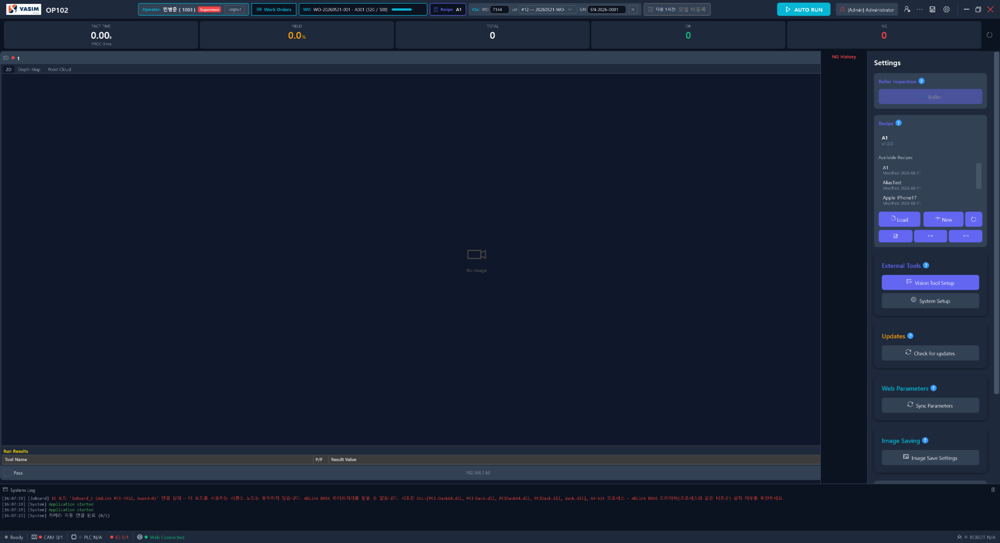
| 영역 | 내용 |
|---|---|
| ① 헤더 | 왼쪽부터 로고 · 애플리케이션 이름, 운영 흐름 순서의 칩(작업자 → 작업지시 → 레시피 → 추적 정보 → 예측), 오른쪽에 [AUTO RUN] · 사용자 칩 · 관리 아이콘 · 창 조작 버튼. 4.3 절 참고 |
| ② KPI 스트립 | TACT TIME · YIELD · TOTAL · OK · NG 카드와 통계 초기화 버튼. 4.4 절 |
| ③ 카메라 화면 | 카메라마다 타일 하나. 2D / Depth Map / Point Cloud 탭, 판정 배지(WAIT · OK · NG), Run Results 표, 설정(톱니바퀴) 창. 타일은 드래그로 옮기고 가장자리를 끌어 크기를 바꿀 수 있으며 헤더의 [Save Layout] 으로 배치를 저장합니다. 4.5 절 |
| ④ NG History | 최근 불량 이미지 썸네일(카메라 이름 · 시각). 항목을 누르면 그 카메라 화면에 크게 표시됩니다 |
| ⑤ 사이드 패널 (Settings) | 헤더 오른쪽 ⚙ 로 열고 닫습니다. 레시피 · 외부 도구 · 업데이트 · Web 파라미터 · 이미지 저장 · 최근 검사 · 통계 섹션. 4.6 절 |
| ⑥ System Log | [시각] [출처] 메시지 형식의 실시간 로그. 카메라 · PLC · IO 보드 · 시퀀스 · Web 연동 상태가 여기에 남습니다. 오른쪽 위 아이콘으로 비웁니다 |
| ⑦ 상태바 | 시스템 상태 · CAM · PLC · IO · MLOps · Web · ROBOT 연결 표시. 4.7 절 |
창 폭이 1980px 보다 좁은 모니터(FHD 등)에서는 헤더가 컴팩트 모드로 바뀌어 사번 · 등급 뱃지 · 진행률 막대가 숨겨지고 레시피 · 작업지시 이름이 줄여 표시됩니다. 기능은 같습니다.
4.3 헤더 — 운영 흐름
헤더의 칩은 실제 작업 순서대로 왼쪽에서 오른쪽으로 배치되어 있습니다: 작업자 로그인 → 작업지시 선택 → 레시피 확인 → 검사 시작.
Operator 칩 — 작업자 로그인
- [Login...] 을 누르면 작업자 로그인 창이 열립니다. 사번과 PIN 을 넣고 [Login] (또는 Enter) 을 누릅니다.
- 입력값은 Web 서버의 작업자 명단과 대조됩니다. 성공하면 칩이 "이름 (사번)" 으로 바뀌고, 등급이 Lead(파랑) · Supervisor(빨강)면 뱃지가 붙습니다. Operator 등급은 뱃지가 없습니다.
- 실패 메시지가 "사번/PIN 오류" 가 아니라 "서버가 이 PC 의 키를 거부" 라면 설정 마법사의 Web Client API Key 를 확인합니다(§3.3).
- 교대 시에는 [Logout] 후 다음 작업자가 로그인합니다. VMS 를 정상 종료하면 서버의 작업자 세션도 함께 종료됩니다.
[Work Orders] — 작업지시 선택
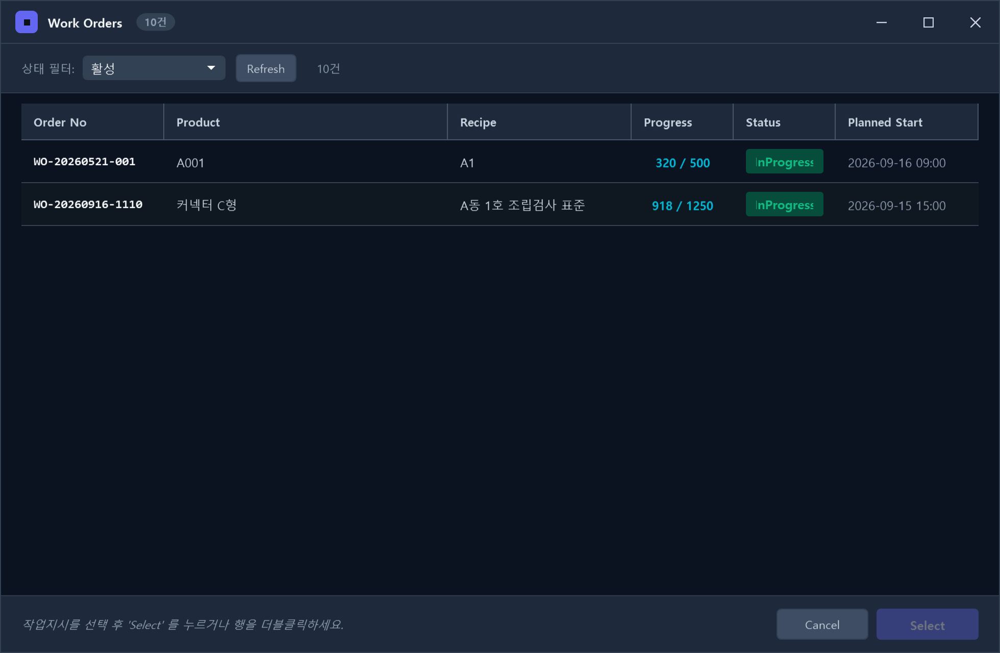
- 작업자 로그인 후 활성화됩니다. 누르면 Web 서버에서 이 라인에 배정된 작업지시 목록을 가져옵니다.
- 상태 필터: 활성(Planned + InProgress, 기본) / 전체 / Planned / InProgress / Completed.
- 행을 더블 클릭하거나 선택 후 [Select] 를 누릅니다. 선택하면 그 작업지시의 레시피가 자동으로 불러와지고, 열려 있는 Lot 이 하나면 Ctx 의 Lot 도 자동으로 채워집니다.
WO 칩 — 진행률
- 검사 1 사이클이 끝날 때마다 진행 수량이 올라갑니다. 한 제품을 여러 스텝(카메라)으로 검사해도 1 사이클 = 제품 1 개로 집계됩니다.
- 완료 기준이 "양품" 인 작업지시는 "양품 80 / 100" 처럼 합격 수량으로 표시됩니다(§8.7).
- 여러 레시피가 섞인 작업지시는 칩에 마우스를 올리면 레시피별 진행이 줄 단위로 보입니다.
- 계획 수량에 도달하면 검사가 자동으로 멈추고 작업지시 완료 창이 뜹니다 — 완료된 번호, 계획 · 검사 · Pass · NG 카드, 합격률이 표시되고 알림음이 울립니다. [다음 작업지시 선택] (Enter) 을 누르면 바로 Work Orders 창이 열립니다. Web 에서 관리자가 수동으로 완료해도 같은 창이 뜨며 검사가 즉시 멈춥니다.
Recipe 칩
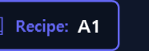
현재 사용 중인 레시피 이름입니다. 작업지시를 선택하면 자동으로 바뀌며, PC 에 없는 레시피는 Web 서버에서 받아 온 뒤 다시 시도합니다. 검사가 도는 중에 VisionSetup 에서 이 레시피를 고쳐 저장하면 주황색 변경 대기 뱃지가 나타나고, 검사를 멈추는 순간 자동으로 다시 불러옵니다. 멈추기 전까지는 이전 설정으로 계속 검사합니다.
Ctx 칩 — 추적 정보
| 필드 | 채워지는 방법 | 비고 |
|---|---|---|
| WO | 작업지시 선택 시 자동 | 직접 수정 가능 (컴팩트 헤더에서는 숨김) |
| Lot | 열린 Lot 이 1 개면 자동. 여러 개면 작업자가 콤보에서 선택 | Web 에서 발행 · 마감하면 수 초 안에 목록이 따라옵니다. 고르지 않으면 검사가 어느 Lot 에도 귀속되지 않습니다(§8.7) |
| S/N | 바코드 스캐너로 입력 | 제품 시리얼 — 검사 1 회당 1 개. 비어 있어도 됩니다 |
| Op ID | 작업자 로그인 시 자동 | 검사 결과에 작업자로 기록 |
[✕] 를 누르면 필드가 모두 지워집니다. 네 값은 검사 결과와 함께 서버에 저장되어 나중에 "누가 · 어떤 작업지시 · 어떤 묶음으로" 검사했는지 역추적하는 근거가 됩니다.
예측 칩 — "다음 1시간: …"
Web 서버의 예측 모델이 계산한 다음 1 시간 예상 불량률입니다. 5% 미만 초록, 10% 이상 빨강으로 표시됩니다. 모델이 등록되지 않은 현장은 "모델 미등록" 으로 표시되며 고장이 아닙니다(§8.20).
[AUTO RUN] / [STOP]
다음 조건을 모두 만족해야 켜집니다. 버튼이 꺼져 있으면 마우스를 올려 툴팁을 확인하세요.
- 카메라가 1 대 이상 연결되어 있음 (상태바 CAM 이 0/n 이 아님).
- 시스템 사용자로 로그인했다면 그 계정에 검사 시작/정지 권한이 있음 (로그인하지 않은 상태는 허용).
- (Web 연동 현장) 작업자가 로그인되어 있고, 작업지시가 선택되어 있으며 상태가 Planned 또는 InProgress 임.
AUTO RUN 을 시작하면 라이브 영상은 자동으로 멈추고, 시퀀스에 따라 트리거 대기 → 촬영 → 검사 → 판정 신호 출력이 반복됩니다. 카메라에서 이미지를 받지 못한 사이클은 검사 없이 NG 로 집계되므로 NG 가 연속으로 나오면 카메라 연결부터 확인하세요.
오른쪽 아이콘
| 아이콘 | 표시 조건 | 동작 |
|---|---|---|
사용자 칩 [등급] 이름 | 시스템 사용자 로그인 후 | 클릭하면 로그아웃 후 다른 계정으로 로그인하는 창이 뜹니다 |
| User Management | Admin | 시스템 사용자 계정 관리 창 (§4.11) |
| Admin Tools (⋮) | Admin | Audit Log Viewer · Health Check · Backup / Restore · Auto Backup Settings · Retention Settings... · Support Package... 메뉴 (§4.11) |
| Save Layout | 항상 | 카메라 타일 배치를 저장합니다 |
| ⚙ Settings Panel | 항상 | 사이드 패널을 엽니다. 시스템 사용자 로그인이 필요합니다 |
| 최소화 · 최대화 · 닫기 | 항상 | 닫기는 "프로그램을 종료하시겠습니까?" 확인 후 종료합니다. 헤더 빈 곳을 더블 클릭하면 최대화/복원됩니다 |
4.4 KPI 스트립
| 카드 | 의미 |
|---|---|
| TACT TIME | AUTO RUN 중 "한 검사가 끝나고 다음 검사가 시작되기까지의 간격"(초)입니다. 수동 검사에서는 갱신되지 않습니다. 아래 PROC n ms 는 마지막 검사 1 건의 순수 처리 시간입니다. |
| YIELD | 세션 합격률(%) |
| TOTAL / OK / NG | 세션 누적 검사 · 합격 · 불량 수 |
| ↻ (Reset Statistics) | KPI 와 세션 통계를 0 으로 되돌립니다. 서버나 로컬 이력에 저장된 검사 기록은 지워지지 않습니다. |
4.5 카메라 화면과 설정 창
카메라 타일의 헤더에는 연결 표시등(초록 Connected / 빨강 Disconnected), 카메라 이름, 설정(톱니바퀴) 버튼, 판정 배지가 있습니다. 본문은 2D · Depth Map · Point Cloud 탭이며 아래에 Run Results(도구별 Pass/Fail · 결과값 · 처리 ms) 표와 IP · Count 가 표시됩니다.
톱니바퀴를 누르면 타일 오른쪽에 카메라 조작 상자가 펼쳐집니다.
| 컨트롤 | 설명 |
|---|---|
| Step 콤보 | 이 카메라가 쓰는 레시피 스텝을 고릅니다. 노출 · 게인은 스텝 단위로 저장됩니다. |
| 카메라 설정 유지 (체크박스) | 기본 켬. 켜져 있으면 카메라에 저장된 노출/게인을 그대로 씁니다(제조사 프로그램에서 튜닝한 값 보존). 끄면 아래 값을 촬영 전에 카메라에 적용합니다. |
| Exposure (ms) / Gain (dB) | 노출 시간과 게인을 숫자로 입력합니다. "카메라 설정 유지"를 끄고 스텝을 고른 상태에서만 입력할 수 있습니다. |
| [Grab] | 사진을 한 장 촬영합니다. 카메라가 연결되어 있지 않으면 자동으로 연결합니다. 라이브 중에는 누를 수 없습니다. |
| [Live] / [Stop] | 모든 활성 카메라의 실시간 영상을 켜고 끕니다. AUTO RUN 을 시작하면 자동으로 꺼집니다. |
| [Open] | 이미지 파일을 열어 카메라 대신 표시합니다(카메라 없는 시험용). |
| [Inspect] | 현재 이미지로 검사를 1 회 실행합니다. |
| [Save Parameter] | 입력한 노출/게인을 스텝에 저장합니다. 완료/실패 메시지가 표시되며, 카메라가 등록되지 않았으면 설정 마법사를 먼저 실행하라는 안내가 뜹니다. |
| [Save 3D] | 촬영한 3D 데이터를 .vpc 파일로 저장합니다. VisionSetup 에서 열어 레시피를 만들 수 있습니다. |
| [Close] | 조작 상자를 닫습니다. |
- [Grab] · [Live] 가 눌리지 않으면 툴팁에 사유가 표시됩니다 — 시스템 사용자에게 시작/정지 권한이 없음, 작업자 로그인이 필요함, 연결된 카메라가 없음.
- 운전이나 대기 중에 카메라 케이블이 빠지면 몇 초 안에 연결 표시등이 빨간색으로 바뀌고 상태바 CAM 수가 줄어듭니다. 다시 꽂으면 다음 촬영에서 자동으로 재연결됩니다. 라이브 표시는 연결이 끊기면 스스로 멈춥니다.
- Basler 카메라도 스텝별 노출/게인이 그대로 적용되며, 연결 시 자동 노출/게인이 꺼져 촬영마다 밝기가 달라지지 않습니다.
4.6 사이드 패널 (Settings)
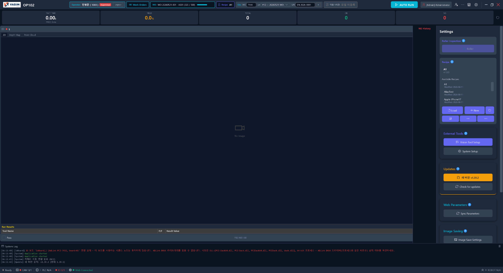
헤더 오른쪽 ⚙ 로 열고 닫습니다. 열 때 시스템 사용자 로그인이 필요하며, 패널 밖을 클릭하면 닫힙니다. 각 섹션 제목 옆의 물음표(?)를 누르면 설명이 표시됩니다.
Roller Inspection
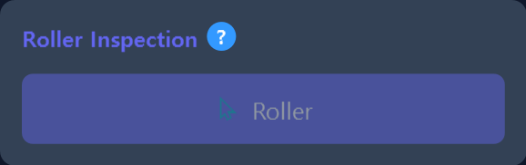
라인 스캔 카메라로 회전하는 롤러 표면을 연속 검사하는 모드를 켜고 끕니다. AUTO RUN 조건을 만족하고 라인 스캔 카메라가 구성된 경우에만 켤 수 있습니다.
Recipe
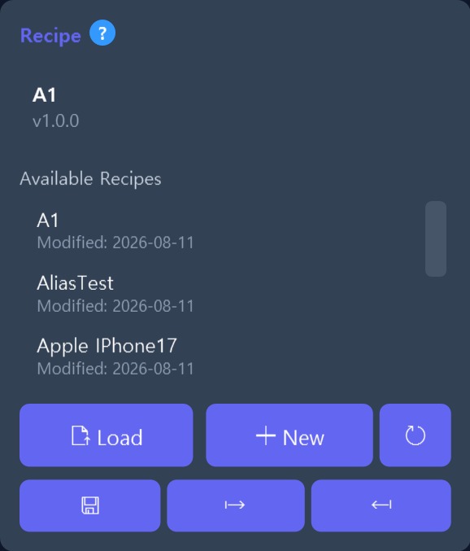
- 현재 레시피 이름과 버전, 사용할 수 있는 레시피 목록(수정일 포함)이 표시됩니다.
- [Load] — 목록에서 고른 레시피를 불러옵니다. 단독 모드에서는 이 버튼으로 검사할 레시피를 정합니다.
- [New] — "New Recipe" 이름의 빈 레시피를 만듭니다(레시피 편집 권한 필요). 도구 구성은 VisionSetup 에서 합니다.
- ↻ — Web 서버의 레시피를 지금 가져옵니다(평소 60 초 주기 자동). 결과는 상태바에 "Web 레시피 3개 — 새 항목 1, 이름 연결 1" 처럼 요약되며, 0 개면 라인 번호가 맞는지 확인하라는 힌트가 붙습니다.
- 저장 · 내보내기(JSON) · 가져오기 아이콘. 저장과 가져오기에는 레시피 편집 권한이 필요합니다.
External Tools (Supervisor · Admin 전용)
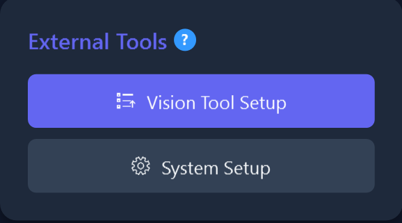
- [Vision Tool Setup] — 레시피 편집 프로그램(VMS.VisionSetup, 5장)을 실행합니다.
- [System Setup] — 시스템 설정 마법사(3장)를 실행합니다.
- 작업자 등급이 Operator · Lead 이면 이 섹션이 보이지 않습니다. 시스템 Admin 계정으로 로그인했거나 단독 모드에서는 항상 보입니다.
Updates
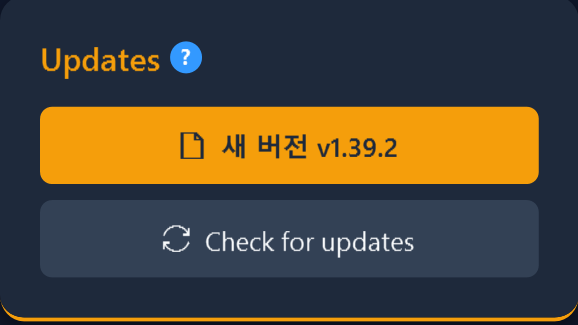
새 버전이 있으면 "새 버전 vX.Y.Z" 배지가 나타나고, 다운로드 중에는 진행률과 [다운로드 취소] 가 표시됩니다. 절차는 §2.7 을 참고하세요.
Web Parameters
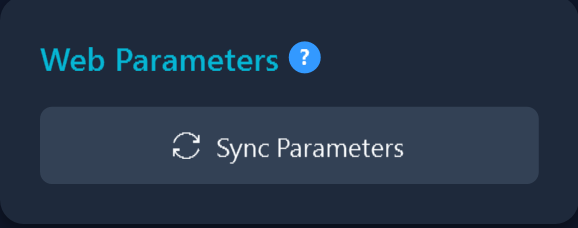
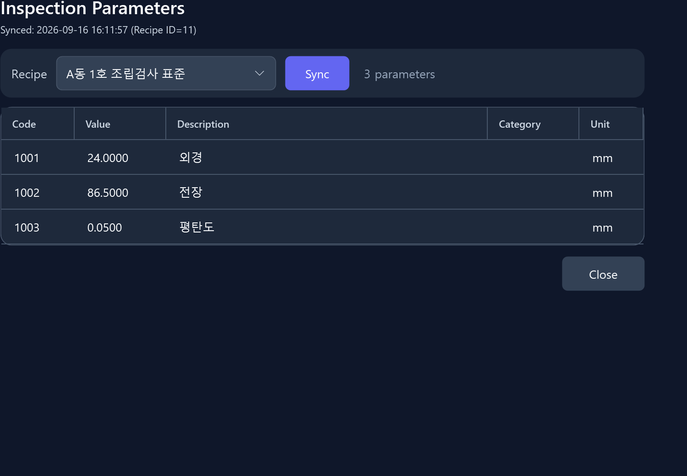
Web 의 레시피 파라미터(검사 기준값)를 지금 즉시 가져와 표로 보여 줍니다. 평소에는 60 초마다 자동 동기화되므로 기다리지 않고 바로 반영하고 싶을 때만 씁니다. 단독 모드에서는 "Parameter Sync Service is not available" 안내가 뜹니다.
Image Saving (Admin 전용)
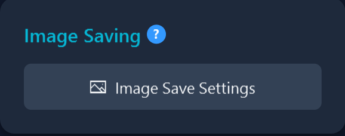
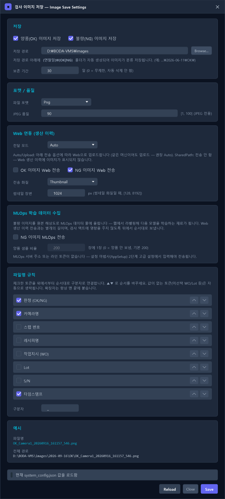
검사 판정 이미지의 저장과 전송을 설정합니다. 설정은 [Save] 즉시 다음 검사부터 적용됩니다(재시작 불필요).
| 카드 | 설정 항목 |
|---|---|
| 저장 | 양품(OK) / 불량(NG) 이미지 저장 체크, 저장 경로, 보존 기간(일, 0 = 무제한). 경로 아래에 {날짜}\OK · {날짜}\NG 폴더가 자동으로 만들어지고 오래된 폴더는 시작 시 정리됩니다. 저장 경로가 비어 있으면 저장되지 않습니다. |
| 포맷 / 품질 | 파일 포맷(PNG · JPEG · BMP · TIFF)과 JPEG 품질(1~100). |
| Web 연동 (생산 이력) | 전달 모드는 Auto(권장). OK / NG 이미지 Web 전송 체크(로컬 저장과 별개), 전송 화질(썸네일 권장 · Full), 썸네일 장변(px). Web 생산 이력의 상세 창에서 사진을 보려면 여기서 NG 전송을 켜야 합니다. SharedPath 모드는 전송하지 않습니다. |
| MLOps 학습 데이터 수집 | NG 이미지 MLOps 전송 체크와 양품 샘플 비율(N 장에 1 장, 기본 200, 0 = 양품 안 보냄). 켜면 NG 사진이 결과 그래픽 없는 원본으로 MLOps 수집 사진 화면에 쌓입니다(9장). 카드 아래 안내가 빨간색이면 설정은 있는데 보안 정책 등으로 막힌 상태이며 사유가 함께 표시됩니다. |
| 파일명 규칙 | 파일명에 넣을 토큰(시각 · 카메라 · 판정 · 시리얼 등)을 체크하고 ▲▼ 로 순서를 정합니다. 구분자 기본 _. 아래 예시 카드에서 결과를 미리 봅니다. |
Recent Inspections
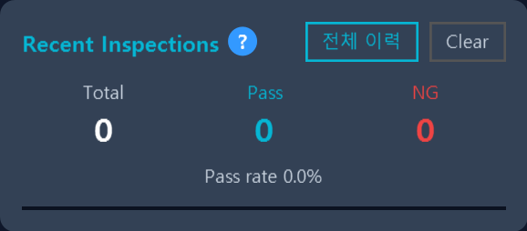
최근 검사 결과를 VMS 안에 최대 200 건까지 보관해 보여 줍니다(재시작 시 비워짐). 시각 · OK/NG · 시리얼 · 작업지시 · 레시피 · NG 코드(또는 실패한 도구 이름)가 표시됩니다. [전체 이력] 은 이 PC 에 영구 저장된 검사 이력 조회 창(§4.10)을 열고, [Clear] 는 화면 목록만 비웁니다.
Statistics
세션 누적 Total / Pass / Fail / Pass Rate 입니다. KPI 스트립의 ↻ 로 초기화됩니다.
4.7 상태바와 System Log
| 칩 | 읽는 법 |
|---|---|
| 시스템 상태 | Ready · Starting... · AutoProcess Running · Stopped · Roller Inspecting · Running — 경고: Web 미연동 (작업지시 수량 미집계) · ✓ WO 완료 등 |
| CAM n/m | 등록된 카메라 m 대 중 연결된 n 대. 전부 초록 / 일부 주황 / 전부 끊김 빨강 |
| PLC | PLC 미구성이면 "PLC N/A". 구성 시 벤더명 · IP, 연결 초록 / 끊김 빨강. 벤더 None 이면 시뮬레이션 PLC 라 항상 연결로 보이므로 IO 보드 구성에서는 IO 칩을 보세요 |
| IO n/m | IO 보드를 등록한 구성에서만 표시. 하나라도 연결 실패면 빨강 — 사유는 System Log 의 [IoBoard] 항목에 있습니다. 상태는 AUTO RUN 시작 시점에 갱신됩니다 |
| MLOps 비활성 | MLOps 주소 · 토큰을 설정했는데 시작 시 연결 준비가 실패한 경우에만 빨간 칩이 나타납니다. 툴팁에 사유(대표적으로 Production 모드가 http 주소를 거부)가 표시되며, 이 상태에서는 NG 사진 수집과 모델 내려받기가 동작하지 않습니다 |
| Web | Web Connected(초록) · Web Disconnected(빨강) · 단독 모드 (Web 미사용)(회색 — 고장 아님) |
| ROBOT | 표시 자리(현재 N/A 고정) |
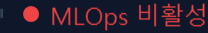
System Log 는 문제의 원인을 가장 먼저 알려 주는 곳입니다. 출처 태그별로 뜻은 다음과 같습니다.
| 출처 | 내용 |
|---|---|
| [System] | 시작 · 카메라 자동 연결 결과 · 단독 모드 안내 · 모델 캐시 정리 |
| [IoBoard] | IO 보드 연결 성공/실패와 실패 사유(드라이버 파일 · 오류 번호 · 모델 · 보드 번호) |
| [AutoProcess] | 시퀀스 노드 오류("시퀀스 '노드' 노드 오류 — 사유", 5 초 후 자동 재시도), Reset 신호 감지, 시퀀스 재로드 |
| [Update] | 새 버전 감지 |
| 작업지시 경고 | "작업지시 … 는 다른 라인에 배정되어 있습니다" · "선택한 Lot 이 작업지시 … 소속이 아닙니다" · "이미 완료/마감 상태입니다" — 수량이 안 오르는 원인 |
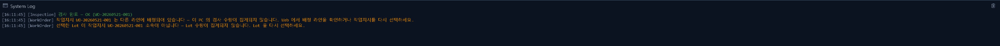
4.8 작업 절차 — 작업지시 선택부터 완료까지
- 출근 — [Login...] 에 사번 · PIN 을 입력합니다. 등급 뱃지가 맞는지 확인합니다.
- 작업지시 선택 — [Work Orders] 에서 오늘 지시를 더블 클릭합니다. 레시피 칩이 바뀌고 Ctx 의 WO 가 채워집니다.
- Lot 확인 — 열린 Lot 이 여러 개면 Ctx 의 Lot 콤보에서 지금 생산하는 묶음을 고릅니다. 묶음이 바뀔 때마다 바꿔 줍니다.
- 카메라 확인 — 필요하면 카메라 톱니바퀴 → [Grab] 으로 한 장 찍어 초점 · 밝기를 봅니다. 조정이 필요하면 "카메라 설정 유지"를 끄고 노출을 바꾼 뒤 [Save Parameter].
- 검사 시작 — [AUTO RUN]. 트리거(PLC/IO 신호)가 들어올 때마다 검사가 돌고 판정 배지 · KPI · WO 진행률이 갱신됩니다.
- 불량 확인 — NG History 썸네일을 눌러 어느 부위가 불량인지 봅니다. Run Results 표에서 어떤 도구가 Fail 인지 확인합니다.
- 완료 — 계획 수량에 도달하면 자동으로 멈추고 완료 창이 뜹니다. [다음 작업지시 선택] 으로 이어 갑니다.
- 퇴근 — [STOP] 후 [Logout]. VMS 를 끄면 서버의 세션도 정리됩니다.
4.9 단독 모드 — Web 서버 없이 운전
생산 이력 관리 없이 검사만 필요한 현장은 설정 마법사 2 단계에서 "Web 서버 미사용 — 단독(Standalone) 모드"를 체크합니다(§3.3). 단독 모드에서는 다음이 달라집니다.
- 헤더의 Operator 칩 · [Work Orders] · WO 칩 · 예측 칩이 사라지고, 상태바 Web 칩이 "단독 모드 (Web 미사용)" 으로 표시됩니다.
- 검사할 레시피는 사이드 패널 Recipe 섹션의 [Load] 로 고르고, 작업자 로그인 · 작업지시 없이 [AUTO RUN] 을 시작할 수 있습니다.
- 검사 결과는 서버 대신 이 PC 의 검사 이력 파일에 사이클마다 저장됩니다(기본 90 일 보존). 최근 결과는 Recent Inspections 에서, 전체는 [전체 이력] 창(§4.10)에서 봅니다.
- MLOps 주소 · 토큰을 넣어 두면 단독 모드에서도 NG 사진 수집과 모델 내려받기는 동작합니다.
- External Tools 섹션은 등급과 무관하게 항상 보입니다.
나중에 서버를 두게 되면 마법사에서 체크를 해제하고 Web 서버 주소를 넣어 연동 모드로 바꿀 수 있습니다.
4.10 생산 이력 조회 창 — [전체 이력]
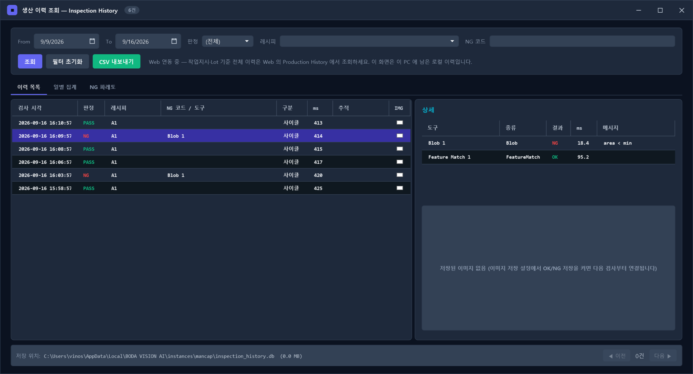
검사 결과는 사이클 또는 수동 검사 1 건마다 이 PC 의 검사 이력 파일(%LocalAppData%\BODA VISION AI\inspection_history.db)에 저장됩니다.
단독 모드의 영구 이력이며, Web 연동 현장에서는 오프라인 백업 역할을 합니다. 사이드 패널 Recent Inspections 의 [전체 이력] 로 엽니다.
- 필터를 고르고 [조회] 를 누릅니다 — From / To(기본 최근 7 일), 판정(전체 · PASS · NG), 레시피, NG 코드(실패 도구 이름 포함 검색). [필터 초기화] 로 되돌립니다.
- 이력 목록 탭 — 검사 시각 · 판정 · 레시피 · NG 코드/도구 · 구분(사이클/수동) · ms · 추적(시리얼 · 작업지시 · Lot) · IMG. 행을 누르면 오른쪽에 도구별 결과 표와 저장된 검사 사진이 표시되고 [폴더 열기] 로 파일 위치를 엽니다.
- 일별 집계 탭 — 기간 전체의 총 검사 · PASS · NG · 수율 카드와 날짜별 표.
- NG 파레토 탭 — NG 원인(NG 코드 또는 실패 도구)별 건수 · 비율 · 누적 비율.
- 200 건이 넘으면 하단 [◀ 이전] / [다음 ▶] 로 넘기고, [CSV 내보내기] 는 현재 필터의 전체 결과를 Excel 호환 CSV 로 저장합니다.
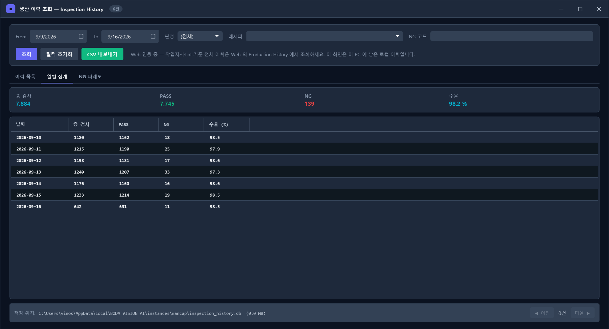
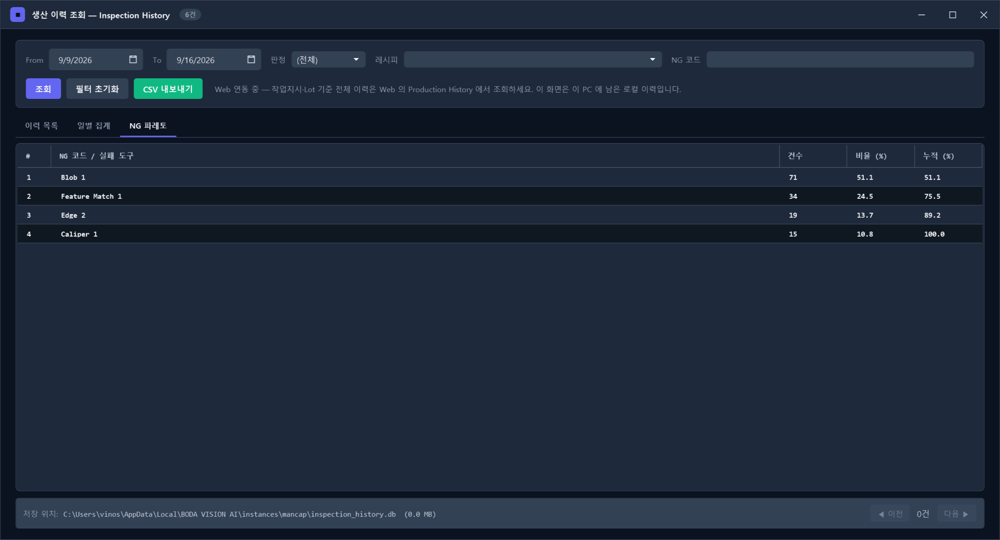
- 검사 사진이 함께 보이려면 Image Saving 의 OK/NG 이미지 저장이 켜져 있어야 합니다. 보존 정리로 파일이 지워진 뒤에는 경로만 남습니다.
- 보존 기간(기본 90 일)과 저장 켜기/끄기는 Admin Tools → Retention Settings 의 "검사 이력" 행에서 바꿉니다. 저장을 끄면 [전체 이력] 버튼이 비활성이 됩니다.
- Web 연동 현장의 작업지시 · Lot 기준 전체 이력은 Web 의 생산 이력 화면(§8.6)이 기준입니다.
4.11 관리자 도구 (Admin 전용)
헤더의 User Management 아이콘과 Admin Tools(⋮) 메뉴에서 여는 창입니다. 시스템 Admin 계정으로 로그인했을 때만 보입니다.
User Management — 시스템 사용자 관리
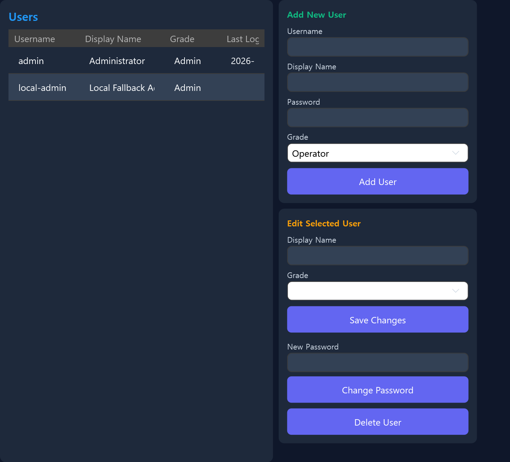
- Users 목록 — Username · Display Name · Grade · Last Login. 행을 선택하면 오른쪽 편집 패널에 값이 채워집니다.
- Add New User — Username · Display Name · Password · Grade(Operator / Engineer / Admin) → [Add User].
- Edit Selected User — Display Name · Grade 수정 → [Save Changes]. New Password → [Change Password]. [Delete User] 로 삭제.
Audit Log Viewer — 감사 로그
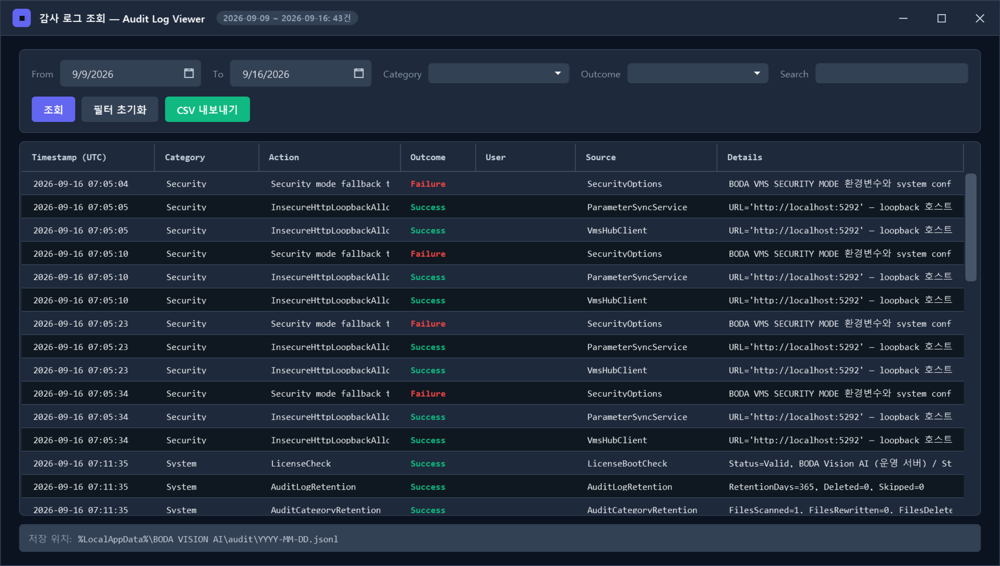
로그인 · 권한 거부 · 설정 변경 · 백업 등 관리 행위가 %LocalAppData%\BODA VISION AI\audit\YYYY-MM-DD.jsonl 에 기록됩니다. Outcome 은 Success(초록) · Failure(빨강) · Denied(주황)로 구분됩니다.
Health Check — 시스템 상태 점검
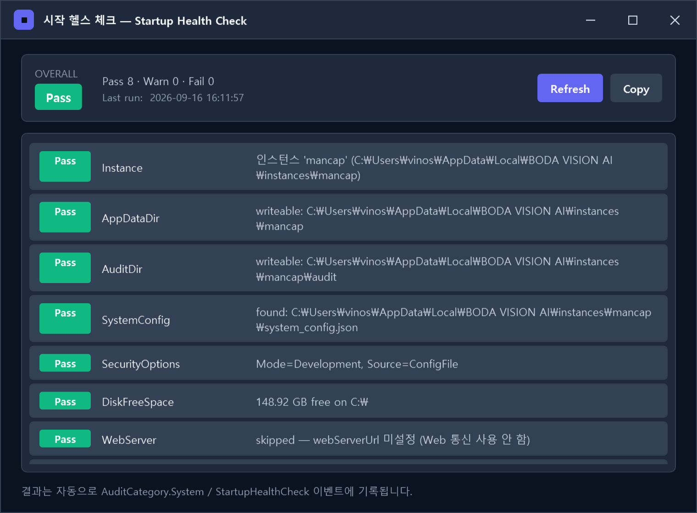
인스턴스 · 설정 파일 · 보안 옵션 · Web 서버 · 라이선스 · 디스크 여유 공간을 점검합니다. [Refresh] 로 다시 점검하고 [Copy] 로 결과를 복사해 지원 요청에 붙일 수 있습니다.
Backup / Restore — 백업과 복원
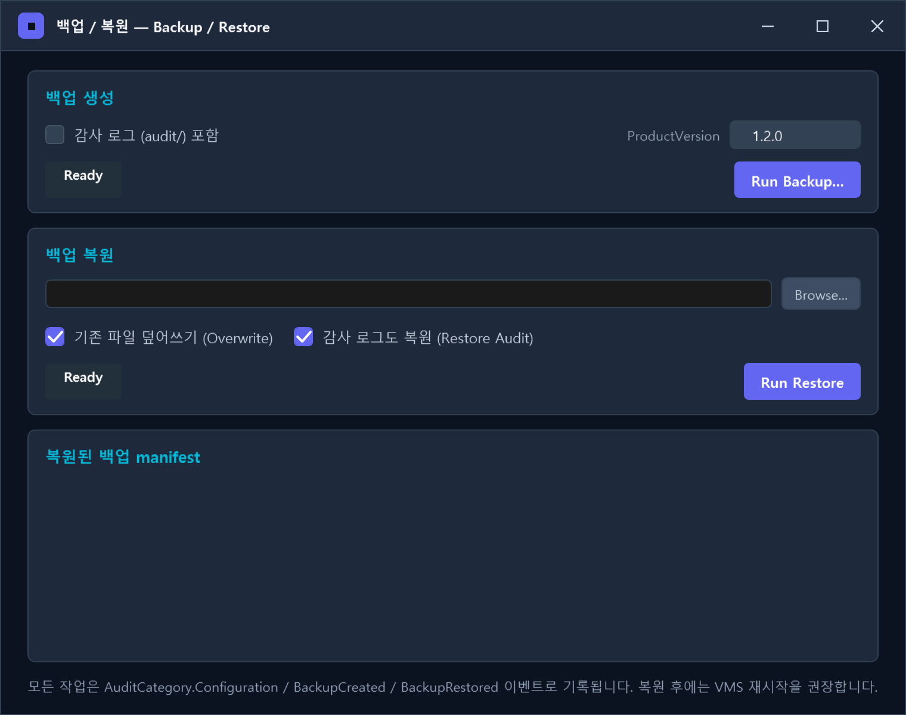
설정 파일 · 레이아웃 · PLC 신호 맵 · 사용자 DB · 검사 이력 DB · 레시피 전체(선택 시 감사 로그)를 ZIP 하나로 만듭니다. 복원 시 [기존 파일 덮어쓰기] 를 켜고 [Run Restore] 한 뒤 VMS 를 재시작합니다. 자세한 운영 요령은 §11.1 을 참고하세요.
Auto Backup Settings — 자동 백업
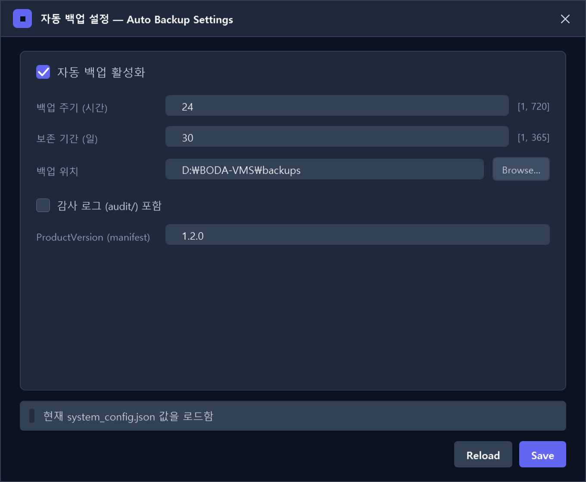
주기(1~720 시간)와 보존 기간(1~365 일), 저장 위치(비우면 backups 폴더)를 정합니다. 변경은 VMS 재시작 후 적용됩니다.
Retention Settings — 데이터 보존 정책
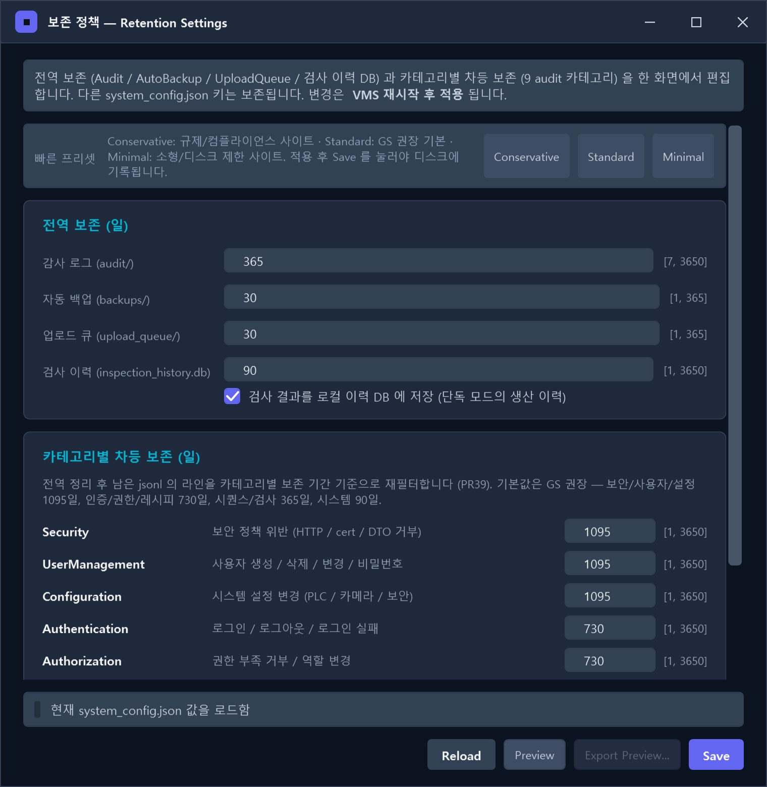
- 빠른 프리셋 — Conservative(규제 사이트) / Standard(권장 기본) / Minimal(디스크 제한 사이트). 적용 후 [Save] 가 필요합니다.
- 전역 보존(일) — 감사 로그 · 자동 백업 · 업로드 큐 · 검사 이력. "검사 결과를 로컬 이력 DB 에 저장" 체크로 로컬 이력 저장을 켜고 끕니다.
- 카테고리별 차등 보존 — 9 개 감사 카테고리를 따로 지정합니다(기본: 보안/사용자/설정 1095 일, 인증/권한/레시피 730 일, 시퀀스/검사 365 일, 시스템 90 일).
- [Preview] 는 실제 삭제 없이 정리 예정 건수를 보여 주고 [Export Preview...] 로 CSV 저장이 가능합니다. 변경은 VMS 재시작 후 적용됩니다.
Support Package — 원격 지원용 진단 패키지
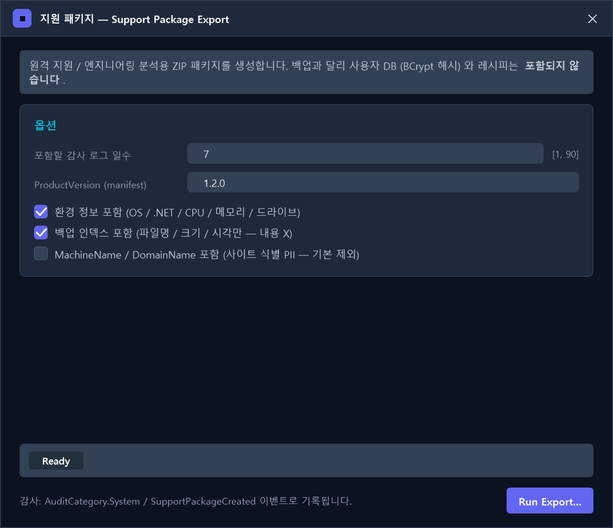
문제 보고 시 공급사에 보낼 ZIP 을 만듭니다. 설정 파일 · 감사 로그(1~90 일) · 환경 정보 · 헬스 스냅샷 · MLOps 전송 큐 상태가 들어가며, 사용자 DB 와 레시피는 포함되지 않습니다.
4.12 계정과 권한
VMS 에는 두 종류의 신원이 있습니다. 작업자(Web 에 등록된 사번 + PIN)는 "누가 생산했는가"를 기록하는 신원이고, 시스템 사용자(이 PC 의 계정)는 "설정 · 레시피 · 관리 도구를 만질 수 있는가"를 정하는 신원입니다.
시스템 사용자 등급별 권한
| 권한 (기능) | Operator | Engineer | Admin | local-admin (비상 폴백) |
|---|---|---|---|---|
| StartStop (검사 시작/정지 · Grab · Live) | ✓ | ✓ | ✓ | ✓ |
| ViewStatistics (통계 · 이력 조회) | ✓ | ✓ | ✓ | ✓ |
| EditRecipe (레시피 편집 · 저장 · 가져오기) | — | ✓ | ✓ | — |
| DeleteRecipe (레시피 삭제) | — | ✓ | ✓ | — |
| CameraSettings (카메라 설정) | — | ✓ | ✓ | — |
| LaunchVisionSetup (Vision Tool Setup 실행) | — | ✓ | ✓ | — |
| LaunchAppSetup (System Setup 실행) | — | ✓ | ✓ | — |
| SystemConfiguration (시스템 구성 변경) | — | ✓ | ✓ | — |
| RestartWebService (Web 서비스 재시작) | — | ✓ | ✓ | ✓ |
| ManageUsers (사용자 관리 · Admin Tools · Image Saving) | — | — | ✓ | — |
- 시스템 사용자로 로그인하지 않은 상태에서도 AUTO RUN · Grab · Live 는 허용됩니다(작업자 로그인이 생산 신원이므로 이중 로그인을 요구하지 않습니다).
- Web SSO 를 켠 현장에서는 Admin/Engineer 로그인을 Web 계정으로 대조합니다(Web Admin → Admin, User → Engineer). 서버에 닿지 못할 때는 비상 계정
local-admin만 검사 시작/정지 · 통계 · Web 서비스 재시작 권한으로 진입합니다. - 권한이 거부된 시도는 감사 로그에 사용자 · 등급 · 요청 권한과 함께 기록됩니다.
작업자 등급이 VMS 화면에 미치는 영향
| 항목 | Operator | Lead | Supervisor |
|---|---|---|---|
| AUTO RUN · 작업지시 선택 · Grab / Live | ✓ | ✓ | ✓ |
| 헤더 등급 뱃지 | 없음 | Lead (파랑) | Supervisor (빨강) |
| External Tools 섹션 (Vision Tool Setup · System Setup) | — | — | ✓ |
시스템 Admin 계정으로 로그인했거나 단독 모드이면 작업자 등급과 무관하게 External Tools 가 보입니다.
5. 검사 레시피 편집 (VMS.VisionSetup)
VMS.VisionSetup 은 검사 레시피를 만드는 작업 공간입니다. 왼쪽 Tool Palette 에서 도구를 골라 가운데 Tool Workspace 에 놓고 연결한 뒤, 이미지를 열어 실행해 보면서 오른쪽 Tool Settings 에서 파라미터와 판정 기준을 조정합니다. 완성한 레시피를 저장하면 VMS 메인이 그대로 불러와 검사합니다. VMS 사이드 패널 External Tools 의 [Vision Tool Setup] 또는 시작 메뉴로 실행합니다.
5.1 화면 구성
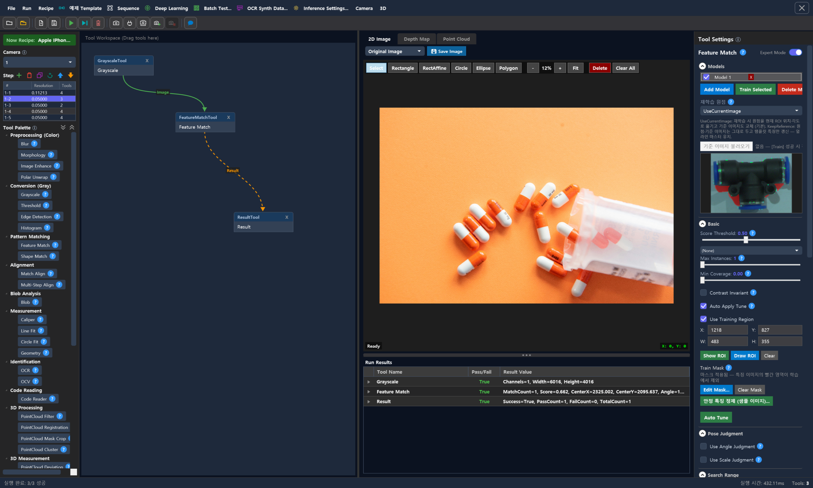
| 영역 | 내용 |
|---|---|
| ① 메뉴 바 | File · Run · Recipe · 예제 Template · Sequence · Deep Learning · Batch Test... · OCR Synth Data... · Inference Settings... · Camera · 3D. 오른쪽 끝 X 는 프로그램 종료 |
| ② 아이콘 툴바 | 이미지 열기 · 폴더 열기 · Recipe Manager · 저장 · Run All · Run Selected · Clear All Tools · Camera Manager · 카메라 연결 토글 · Acquire · Live 시작/정지 · SLM Recipe Bot. 폴더를 열면 ◀ ▶ 와 Navigate / Run All / Run Selected 모드 라디오가 나타납니다 |
| ③ 왼쪽 패널 | 현재 레시피 배지(Now Recipe) · Camera 콤보 · Steps 표(# · Resolution · Tools)와 스텝 버튼 · Tool Palette(15 카테고리 39 도구, [Expand All]/[Collapse All]) |
| ④ Tool Workspace | 도구 노드를 놓고 연결하는 캔버스. 노드를 드래그해 배치하고 우클릭 메뉴로 이름 변경 · 복제 · 연결 · 삭제 |
| ⑤ 이미지 뷰 | 2D Image · Depth Map · Point Cloud 탭. 2D 탭에는 이미지 소스(Original/Result) 콤보 · [Save Image] · ROI 도형 툴바 · 줌 · 아래 Run Results 표 |
| ⑥ 오른쪽 패널 | 도구를 선택하면 Tool Settings, 스텝만 선택하면 Camera Settings 로 바뀝니다 |
| ⑦ 상태바 | 진행 메시지 · 실행 시간 · 도구 수. 실행 결과 요약 · 오류 · 연동 진단이 여기에 표시됩니다 |
5.2 메뉴와 툴바
| 메뉴 / 버튼 | 동작 |
|---|---|
| File → Open Image / Open Folder | 이미지 파일 하나를 열거나, 폴더를 열어 ◀ ▶ 로 넘겨 봅니다. 폴더 모드에서 Run All · Run Selected 라디오를 고르면 이미지를 넘길 때마다 자동으로 실행됩니다. |
| Run → Run All / Run Selected / Clear All Tools | 현재 스텝의 도구 전체 실행 / 선택한 도구만 실행 / 작업 공간의 도구를 모두 삭제. 툴바의 ▶ · ▶| 버튼과 같습니다. 이미지가 없으면 실행되지 않습니다. |
| Recipe → Recipe Manager / Save Recipe | 레시피 관리 창(§5.3) / 현재 레시피 저장. 저장하면 실행 중인 VMS 가 자동으로 다시 불러옵니다. |
| 예제 Template | 템플릿 갤러리(§5.8). 스텝을 먼저 선택해야 활성화됩니다. |
| Sequence | 시퀀스 편집기(§5.10). |
| Deep Learning | AI 학습 도구(10장)를 실행합니다. 설치되지 않은 PC 에서는 메뉴가 보이지 않습니다. |
| Batch Test... / OCR Synth Data... / Inference Settings... | 배치 테스트(§5.11) / OCR 합성 데이터 생성(§5.12) / ONNX 추론 엔진 설정(§5.12). |
| Camera → Camera Manager / Calibration Manager... / Camera Info / Acquire Image / Start · Stop Camera Live / Receive from VMS / Start · Stop Live Receive (from VMS) | 카메라 등록 창 / 캘리브레이션 창(§5.9) / 선택 카메라 정보 팝업 / 촬영 · 라이브 · VMS 프레임 수신(§5.4). |
| 3D → Save · Load 3D Data / Generate Height Map / Save · Clear Height Slicing | 점군(.vpc) 저장 · 불러오기, 높이 맵 생성, 높이 슬라이스 저장 · 지우기. |
| 툴바 카메라 연결 토글 | 선택 카메라의 연결/해제. 초록이면 연결됨. VMS 가 실행 중이면 카메라 소유권이 VMS 에 있어 비활성이며 툴팁에 사유가 표시됩니다. |
| 툴바 SLM Recipe Bot | AI 챗봇에게 원하는 검사를 말로 설명하면 레시피 구성을 제안하고 [Apply Recipe] 로 작업 공간에 만들어 줍니다. |
5.3 레시피 · 스텝 · 카메라
레시피 만들기와 관리 — Recipe Manager
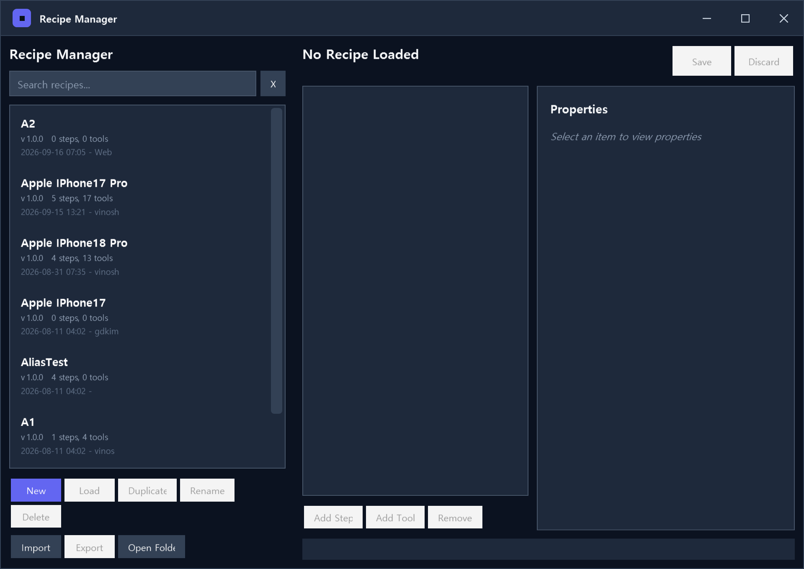
- [New] 로 레시피를 만들고 오른쪽 Properties 에서 Recipe Name · Description · Version · Author 를 입력한 뒤 [Save] 합니다.
- [Add Step] 으로 스텝을 추가하고 스텝의 Camera 를 고릅니다. 스텝 이름("1-1", "1-2")은 카메라 등록 순서 기준으로 자동 계산되며 바꿀 수 없습니다. 부르기 쉬운 이름이 필요하면 Step Alias(별칭)를 넣습니다.
- [Load] 로 레시피를 메인 화면에 불러옵니다. 왼쪽 배지가 "Now Recipe: 이름" 으로 바뀌고 Steps 표에 스텝이 나타납니다.
- [Duplicate] 는 스텝 · 도구 · 학습 데이터까지 통째로 복사해 "이름 - 복사본" 을 만들고, [Rename] 은 이름을 바꿉니다(Web 원장 이름은 별도). [Import] / [Export] 로 JSON 파일을 주고받으며 [Open Folder] 는 저장 폴더를 엽니다.
레시피는 %LocalAppData%\BODA VISION AI\Recipes\ 에 JSON 으로 저장되며, Web 연동 현장에서는 같은 이름으로 Web 레시피 원장에 자동 등록됩니다.
스텝과 카메라 설정
- Camera 콤보에서 카메라를 고르면 Steps 표에 그 카메라의 스텝만 표시됩니다(제목에 "Steps — 카메라명"). 레시피를 불러오면 레시피가 쓰는 카메라가 자동 선택됩니다.
- 스텝 버튼: Add Step · Delete Step · Duplicate Step(카메라 설정과 도구 파이프라인을 복사해 바로 뒤에 추가) · Generate Robot Waypoint Steps(로봇 멀티뷰용) · Move Up / Move Down.
- Steps 표의 Resolution(mm/px)은 측정 도구가 픽셀을 mm 로 바꾸는 값입니다. 캘리브레이션을 적용하면 자동으로 채워지고(§5.9), 간단한 현장은 직접 입력해도 됩니다.
- 스텝만 선택하면 오른쪽 패널이 Camera Settings 로 바뀝니다 — 스텝 정보(별칭 · 로봇 노드 번호), 2D 이미지(카메라 설정 유지 체크 · 노출 ms · 게인 dB), 3D 카메라면 3D 스캔(점군 후처리 끄기/약/중/강 · 뎁스 범위 제한 mm). 여기 값은 Acquire · Live 때 카메라에 적용되고 레시피에 저장됩니다.
다른 PC 에서 만든 레시피 — 카메라 재연결
이 PC 에 없는 카메라를 쓰는 레시피를 열면 미등록 카메라 재연결 창이 뜹니다. 스텝별로 이 PC 의 카메라를 골라 [적용 및 저장] 을 누르면 도구 · 학습 데이터를 그대로 두고 카메라만 바꿔 쓸 수 있습니다. [건너뛰기] 하면 스텝 이름이 "?-1" 로 표시됩니다.
5.4 이미지 가져오기 — 파일 · 카메라 · VMS
| 방법 | 절차 |
|---|---|
| 파일 | File → Open Image(또는 툴바 첫 버튼)로 jpg · png · bmp · tif 를 엽니다. 폴더를 열면 ◀ ▶ 로 넘기며 여러 장을 검증할 수 있습니다. 3D 는 3D → Load 3D Data 로 .vpc 파일을 엽니다. |
| 카메라 직접 촬영 | Camera Manager 에 카메라를 등록하고 왼쪽 Camera 콤보에서 고른 뒤 툴바 [Acquire](한 장) 또는 [Start Camera Live](연속). 선택한 스텝의 노출 · 게인이 적용됩니다. |
| VMS 실행 중 | VMS 메인이 카메라를 쥐고 있으면 툴바에 "VMS 실행 감지" 가 표시되고 직접 연결이 잠깁니다. 이때 [Acquire] 를 누르면 VMS 에 촬영을 요청해 그 사진을 받아옵니다(운전 · 라이브 중이면 거절). Camera → Receive from VMS 는 VMS 가 마지막으로 찍은 프레임을, Start Live Receive 는 VMS 의 라이브 영상을 이어서 받습니다. |
받은 이미지는 2D Image 탭에 표시되고 상태바에 "이미지 로드 완료" 가 나옵니다. 이후 Run All 이 활성화됩니다.
5.5 도구 배치 · 연결 · ROI
- 도구 놓기 — Tool Palette 의 도구를 Tool Workspace 로 끌어다 놓습니다. 놓는 즉시 선택되어 오른쪽에 Tool Settings 가 나타납니다. 도구 이름 옆 물음표(?)에 마우스를 올리면 그 도구의 용도 · 사용법 · 결과 값 설명이 뜹니다.
- 연결하기 — 앞 도구 노드를 우클릭 → Connect Image(초록 실선) / Connect Coordinates(파랑 점선) / Connect Result(주황 점선) 를 고른 뒤 뒤 도구를 클릭합니다. Esc 또는 우클릭으로 취소합니다.
- Image — 앞 도구의 결과 이미지를 뒤 도구의 입력으로 넘깁니다(예: Grayscale → Threshold → Blob).
- Coordinates (Fixture) — 패턴 매칭이 찾은 위치 · 각도만큼 뒤 도구의 ROI 를 옮기고 기울입니다. 부품이 틀어져 놓여도 같은 자리를 검사합니다.
- Result — 앞 도구의 결과 값을 뒤 도구가 참조합니다(예: Caliper 두 개 → Geometry, 여러 도구 → Result).
- ROI 그리기 — 도구를 선택하고 Tool Settings 의 Use ROI 를 켠 뒤, 이미지 뷰 툴바에서 Rectangle · RectAffine(회전 사각형) · Circle · Ellipse · Polygon 을 골라 이미지 위에 그립니다. 흰 원 핸들로 크기, 금색 원 핸들로 회전을 조정하고 [Delete] / [Clear All] 로 지웁니다. [Show ROI] · [Draw ROI] · [Clear ROI] 버튼은 Tool Settings 의 ROI Settings 에 있습니다.
- 이름 · 복제 — 노드 우클릭 → Rename Tool 로 이름을 바꾸고, Duplicate Tool 로 파라미터 · ROI · 학습 데이터까지 복사한 사본을 만듭니다(연결은 복사되지 않음).
5.6 실행과 결과 보기 · 판정
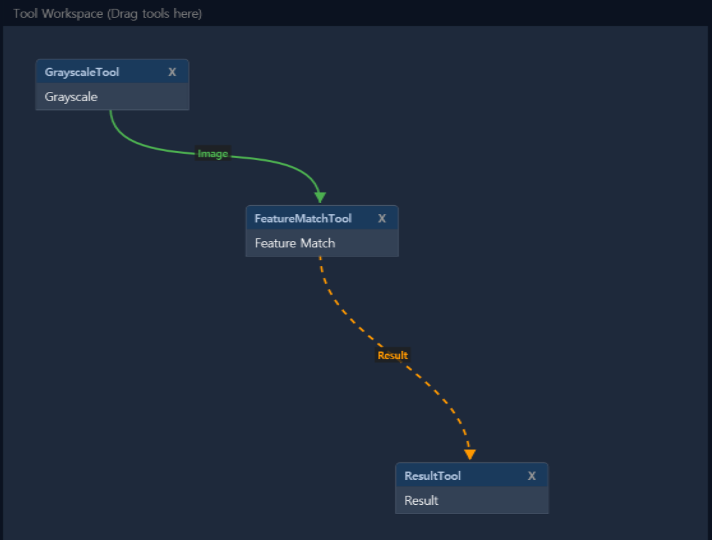
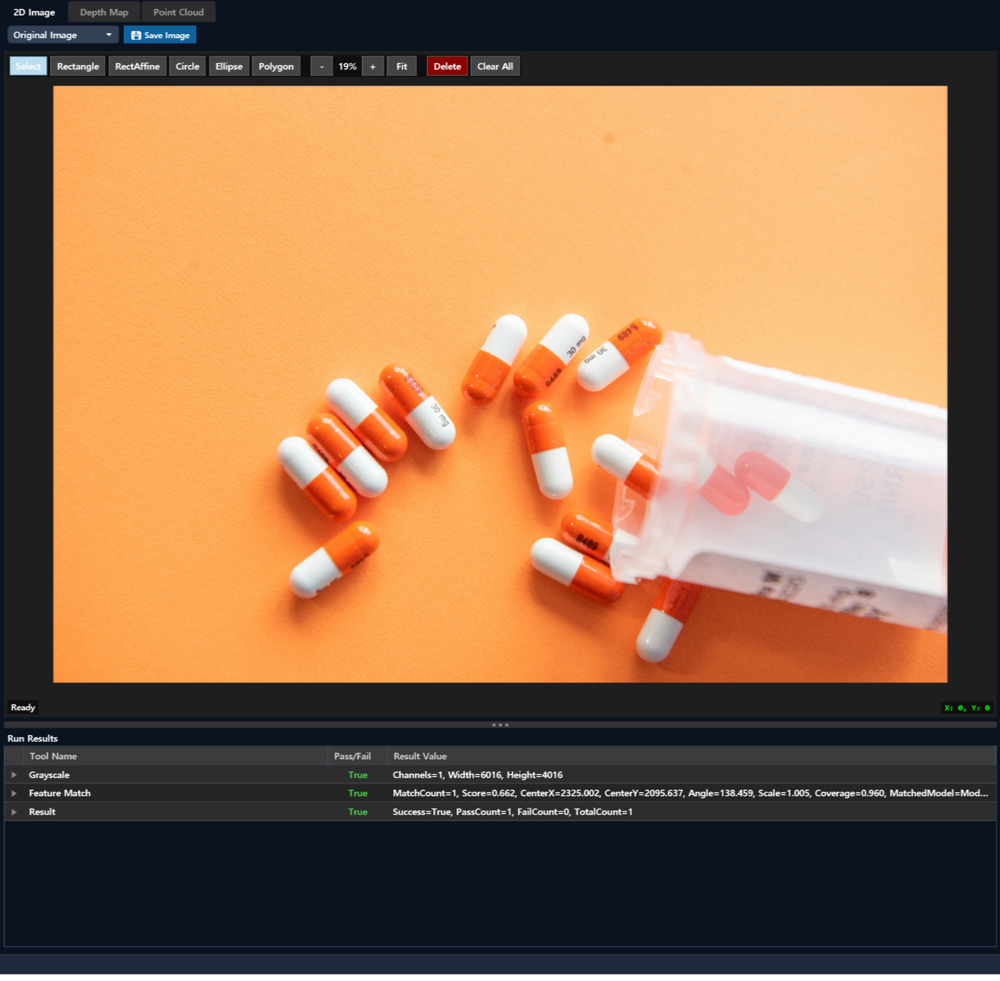
- 툴바 ▶ (Run All) 을 누르면 현재 스텝의 도구가 연결 순서대로 실행되고 상태바에 "실행 완료: n/m 성공" 이 표시됩니다. 도구 하나만 시험하려면 그 도구를 선택하고 ▶| (Run Selected).
- 이미지 뷰에 결과가 겹쳐 그려지고(검출 윤곽 · 에지 · 매칭 위치 · OK/NG 배지), 아래 Run Results 표에 도구별 Pass/Fail 과 결과 값이 나옵니다. 행을 누르면 상세가 펼쳐지고 우클릭으로 복사할 수 있습니다. 이미지 소스 콤보를 Result Image 로 바꾸면 도구가 만든 결과 이미지 자체를 봅니다.
- [Save Image] 로 현재 표시 중인 이미지를 PNG · JPG · BMP · TIFF 로 저장할 수 있습니다.
판정 규칙
| 도구 | NG 로 처리되는 경우 |
|---|---|
| Blob | 판정을 켰을 때 면적 · 개수가 기준 범위를 벗어난 경우. 덩어리가 하나도 없으면 NG |
| Feature Match · Shape Match | 패턴을 찾지 못했거나, 커버리지 판정 · 각도/크기 판정에 걸린 경우 |
| Geometry · Match Align · Multi-Step Align | 측정값(거리 · 각도 · Δ)이 기준값 ± 공차를 벗어난 경우 |
| Detection · Segmentation · YOLOv8-seg · RF-DETR-seg | 객체가 0 건 검출된 경우(또는 각도 판정을 켰는데 계산 불가) |
| Code Reader · OCR · OCV | 판독 실패, 기대 문자열 불일치, 품질 등급 미달 |
| Result | 연결된 도구 중 하나라도 Fail 이면 최종 NG |
| 운전 공통 | 카메라에서 이미지를 받지 못한 사이클 |
"찾아야 할 것을 하나도 찾지 못한 검사" 는 합격이 아니라 NG 입니다. 예상과 다른 NG 가 나오면 결과 화면에서 무엇이 검출되지 않았는지 먼저 확인하세요.
Result 도구 — 최종 판정과 PLC 통계
스텝의 마지막에 Result 도구를 두고 판정에 넣을 도구들을 Result 연결하면, 모두 Pass 일 때만 OK 가 됩니다. Result 도구의 PLC Output 에는 PassCount · FailCount · TotalCount 통계를 PLC 주소에 매핑할 수 있습니다. 검사 1 건의 최종 OK/NG 신호는 시퀀스 편집기의 Branch → Output Action 이 담당합니다(§5.10).
PLC Output — 결과 값을 PLC 로 보내기
도구 설정 아래의 PLC Output 에서 [+ Add PLC Mapping] 을 누르고 Key(결과 값 이름) · Device(MainPLC 또는 IO 보드) · Address(PLC 주소 또는 IO 채널) · Type 을 정하면 실행 때마다 그 값이 PLC 에 기록됩니다.
5.7 검사 기준값을 Web 에서 관리하기 (파라미터 연동)
Blob · Caliper · Line Fit · Circle Fit · Geometry · Feature Match · Shape Match · Threshold · Color Match · Height Slicer 의 판정 기준 입력란 옆에는 Web 파라미터 연동 콤보가 있습니다. 콤보에서 파라미터 코드를 고르면 운전(AUTO RUN) 때 그 코드의 Web 값을 씁니다 — 이후 기준값은 현장에서 도구 설정을 열지 않고 Web 레시피 파라미터 화면(§8.10)에서 바꿉니다.
- 연동을 걸면 입력란 아래에 "Web 연동 중 (#코드: 값) — 운전 값은 Web 에서 변경" 배지가 붙고, 화면의 로컬 값이 Web 값과 다르면 "⚠ 로컬 값 ≠ Web 값 — 운전은 Web 값을 사용합니다" 로 바뀝니다. 화면 값은 이 창의 테스트 실행에만 쓰입니다.
- 콤보 목록은 지금 편집 중인 레시피의 파라미터이며 Web 에서 추가 · 수정하면 곧바로 반영됩니다. 레시피를 불러올 때 상태바에 "Web 파라미터: '레시피명' 코드 N개" 진단이 표시되고, 0 개면 확인할 것을 안내합니다.
- Web 의 Blob Tool · Dimension Tool 프리셋 항목은 이 도구들의 연동 콤보와 1:1 로 맞춰져 있습니다.
5.8 예제 템플릿 갤러리
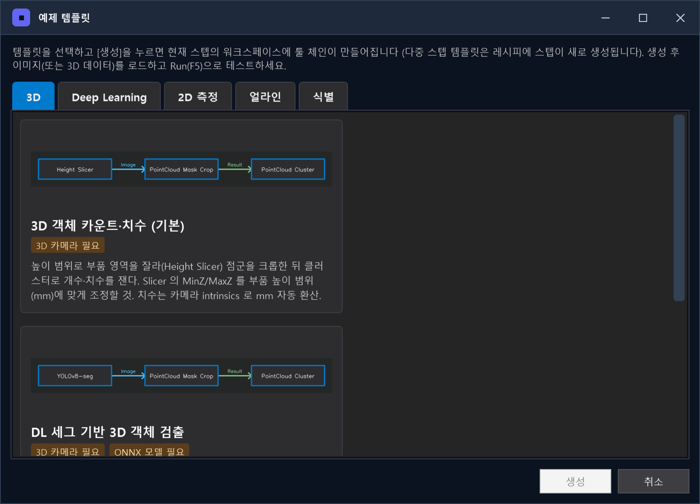
자주 쓰는 도구 조합을 클릭 몇 번으로 현재 스텝에 만들어 줍니다. 빈 화면에서 시작하지 않고 완성된 예제에서 값만 바꾸면 되므로 처음 레시피를 만들 때 권장합니다.
- Steps 표에서 도구를 넣을 스텝을 먼저 선택합니다(선택하지 않으면 메뉴가 비활성).
- 메뉴 예제 Template 을 누르고 카테고리 탭에서 카드를 고른 뒤 [생성](또는 더블 클릭).
- 도구 체인이 작업 공간에 만들어집니다. 다중 스텝 템플릿은 레시피에 스텝이 새로 생깁니다.
- 이미지(또는 3D 데이터)를 열고 Run All 로 시험한 뒤, 각 도구를 선택해 ROI · 임계값 · 모델 파일을 우리 제품에 맞게 조정합니다.
| 분류 | 템플릿 | 도구 체인 · 용도 |
|---|---|---|
| 2D 측정 | Blob 검출 | Grayscale → Threshold → Blob → Result. 이진화 후 덩어리 개수 · 크기 검사(기본 판정 Blob 1 개 이상 = OK) |
| 2D 측정 | 엣지 간 거리 측정 | Caliper A · Caliper B → Geometry(mm 판정) → Result. 두 에지 사이 거리 측정 |
| 2D 측정 | 패턴 매칭 (Feature Match) | Grayscale → Feature Match → Result. 학습한 패턴의 위치 · 각도 · 점수 검사 |
| 2D 측정 | 컬러 객체 검출 | Color Extract → Blob → Result. 지정 색 영역의 개수 · 위치 (컬러 이미지 필요) |
| 식별 | 코드 판독 | Code Reader → Result. 바코드 · QR · DataMatrix |
| Deep Learning | DL 객체 검출 판정 / DL 이상 탐지 판정 | Detection → Result / Anomaly → Result (ONNX 모델 필요) |
| 3D | 3D 객체 카운트 · 치수 (기본) | Height Slicer → PointCloud Mask Crop → PointCloud Cluster. 높이 범위로 잘라 개수 · 치수 (3D 카메라 필요) |
| 3D | DL 세그 기반 3D 객체 검출 | YOLOv8-seg(마스크 출력) → Mask Crop → Cluster. 딥러닝 윤곽으로 점군을 잘라 객체별 치수 |
| 3D | 3D 기준 형상 편차 검사 | PointCloud Filter → Registration → Deviation. 기준 형상에 정합한 뒤 편차(들뜸 · 눌림) 검사 |
| 얼라인 | Match Align — 2D 매치 얼라인 | Grayscale → Feature Match → Match Align → Result. 부품이 한 화면에 들어올 때. ΔX / ΔY / Δθ 산출 · 판정 · 로봇 변환. 각도 정밀도가 더 필요하면 Feature Match 를 하나 더 붙이고 Match Align 의 Mode 를 TwoPoint 로 |
| 얼라인 | Multi-Step Align — 2-스텝 얼라인 | 스텝 Align A / Align B + 합산 (Multi-Step Align). 카메라가 이동하는 대형 부품(한 화면에 안 들어올 때) |
| 얼라인 | 표준 3D 얼라인 / 평면 틸트 얼라인 / 2D+3D 하이브리드 얼라인 | Registration(6 축) / Plane Fit 2 개 → 3D Geometry(평면 각) / Match Align + Plane Fit (3D 카메라 필요) |
5.9 카메라 캘리브레이션 — mm 로 재기 위한 준비
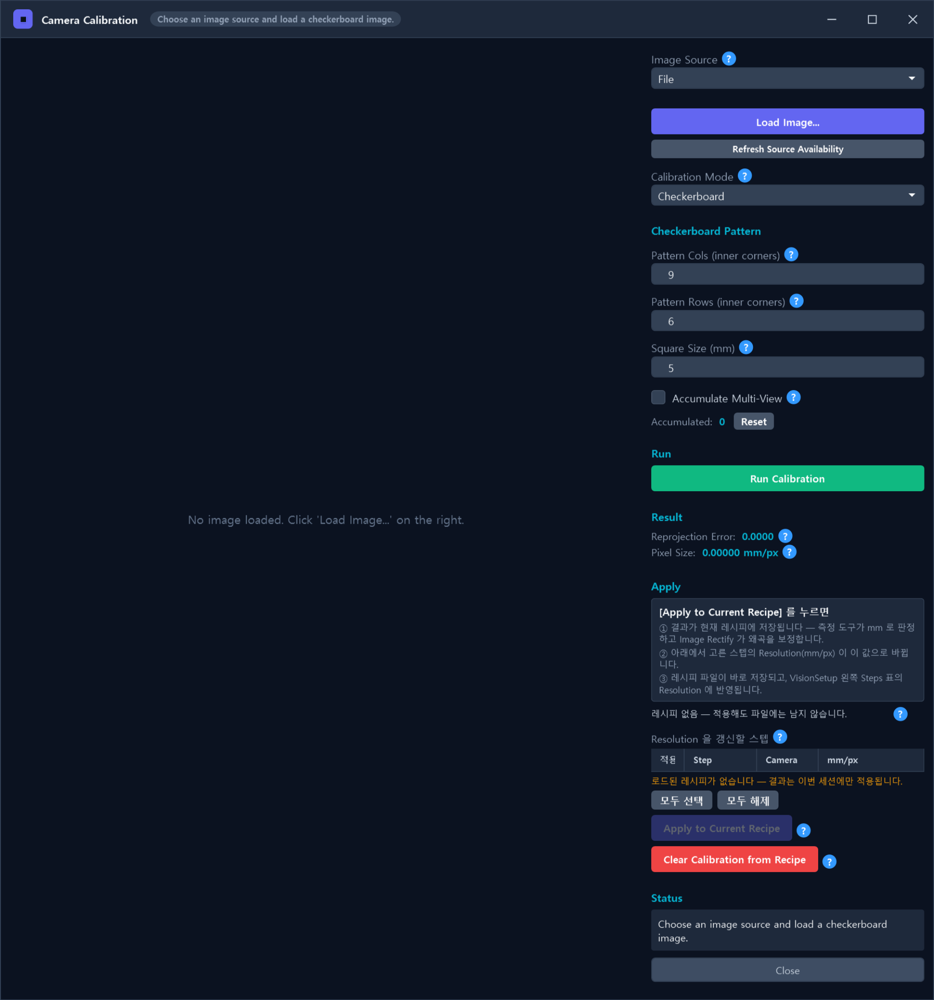
화면의 픽셀이 실제로 몇 mm 인지 카메라에 가르치는 과정입니다. 해 두면 측정 도구가 mm 로 판정하고, Image Rectify 도구가 렌즈 왜곡 · 기울어짐을 바로잡을 수 있습니다. Camera → Calibration Manager... 로 엽니다.
- 이미지 가져오기 — Image Source 에서 File(저장 사진) · Camera (direct)(직접 촬영) · VMS Shared Frame([Grab from VMS] — VMS 가 지금 한 장 찍어 보내 줌, 운전 · 라이브 중엔 거절) 중 고릅니다. 버튼이 눌리지 않으면 [Refresh Source Availability].
- 방식 고르기 — Calibration Mode:
방식 준비물 알아내는 것 이럴 때 Checkerboard 체커보드 인쇄물 렌즈 왜곡 + mm/px 화면 가장자리가 휘는 광각 렌즈 Circles Grid (dots) 원형(도트) 타겟 렌즈 왜곡 + mm/px 산업용 타겟 대부분. 초점이 약간 흐려도 잘 잡힘 N-Point (planar) mm 좌표를 아는 점 4 개 이상 기울어진 평면 펴기 + mm/px 카메라를 수직으로 세울 수 없어 사다리꼴로 찍힐 때 Single Scale (2 points) 길이를 아는 구간 하나 mm/px 만 왜곡이 거의 없고 mm 환산만 필요할 때 - 값 입력 — Checkerboard 는 Pattern Cols/Rows 에 안쪽 교차점 수(10 칸 → 9, 가로 · 세로가 달라야 함)와 Square Size(자로 잰 칸 크기 mm). Circles Grid 는 원의 개수와 Circle Spacing(이웃 원 중심 거리, 타겟에 적힌 값), 엇갈린 배열이면 Asymmetric 체크(기본 켬). N-Point 는 이미지를 클릭해 점을 찍고 표에 mm 좌표 입력, Single Scale 은 두 점을 클릭하고 Known Length 입력.
- 여러 장 모으기 — Checkerboard · Circles Grid 는 한 장으로는 렌즈 값이 정해지지 않습니다. Accumulate Multi-View 를 켜고 타겟의 각도 · 위치를 바꿔 가며(화면 네 구석을 골고루) 10~20 장을 [Run Calibration] 으로 누적합니다. 다시 시작하려면 [Reset].
- 결과 읽기 — Reprojection Error 는 작을수록 좋습니다(체커보드 1 px 미만 양호, 2 넘으면 값 오류 의심). Pixel Size 는 알고 있는 치수를 화면에서 재 보고 맞는지 확인합니다.
- 레시피에 적용 — Apply 구역의 "Resolution 을 갱신할 스텝" 목록에서 스텝을 체크하고 [Apply to Current Recipe]. 결과가 레시피에 저장되고, 체크한 스텝의 Resolution 이 바뀌며, 레시피 파일이 바로 저장됩니다. 카메라로 직접 촬영했으면 그 카메라의 스텝만 기본 체크되고, 파일이면 전체가 체크되니 카메라가 여러 대인 레시피는 확인 후 해제하세요.
- 캘리브레이션은 레시피마다 따로 보관됩니다. 카메라 · 렌즈 · 설치 높이를 바꿨다면 반드시 다시 하세요 — 옛 값이 남으면 측정값이 조용히 틀립니다.
- [Clear Calibration from Recipe] 는 캘리브레이션만 지우고 스텝의 Resolution 은 남깁니다. 완전히 픽셀 단위로 돌리려면 Steps 표의 Resolution 도 0 으로 바꿉니다.
- Image Rectify 도구의 Undistort 는 Checkerboard · Circles Grid 결과로, Apply Homography 는 N-Point 결과로만 동작합니다(§6.1).
5.10 시퀀스 편집기 — PLC · IO 보드 운전 흐름
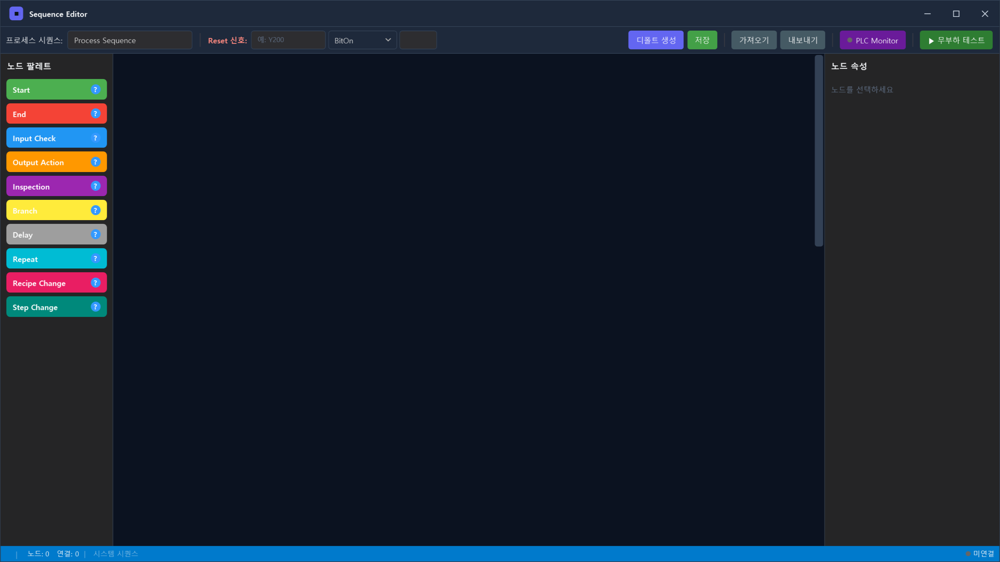
AUTO RUN 의 "트리거 대기 → 촬영 → 검사 → 결과 출력 → 반복" 흐름을 노드로 정의합니다. 메뉴 Sequence 로 엽니다. 저장한 시퀀스는 process_sequence.json 에 기록되며 VMS 는 재시작 없이 다음 AUTO RUN 부터 새 시퀀스를 읽습니다.
노드
| 노드 | 역할 · 속성 |
|---|---|
| Start / End | 시작점(정확히 1 개 필요) / 사이클 종료점. OK · NG 를 구분하려면 Branch 의 각 가지 끝에 End 를 둡니다 |
| Input Check | PLC 입력(비트/워드) 또는 IO 보드 채널 조건을 기다립니다 — 디바이스 · 주소(또는 채널 번호) · 체크 모드 · 비교값 · 타임아웃(ms, −1 무제한) · 디바운스(ms). 스위치 · 센서 트리거는 BitRisingEdge(꺼짐→켜짐 순간) 권장 — BitOn 은 신호가 켜져 있는 동안 매 사이클 통과합니다. [▶ 테스트 읽기] 로 현재 값을 읽어 봅니다 |
| Inspection | 카메라 촬영 → 레시피 도구 실행 → 판정 한 사이클. 카메라 ID 지정 |
| Branch | 직전 검사 결과(PASS/FAIL)로 True/False 분기. "전체 카메라 결과로 판정" 체크 시 모든 카메라 OK 일 때 True |
| Output Action | PLC 출력(비트 ON/OFF · 워드 · Float) 또는 IO 보드 채널에 기록 — OK/NG 램프, 액추에이터, 컨베이어. [▶ 테스트 출력] 으로 바로 써 봅니다 |
| Delay / Repeat | 지연(ms) / 반복(횟수, −1 무한) |
| Recipe Change / Step Change | PLC 신호 조건 충족 시 Index 를 읽어 레시피 · 스텝을 전환합니다. Recipe Change 는 도구를 다시 초기화(Fixture 기준도 새로), Step Change 는 레시피를 유지한 채 스텝만 바꿉니다 |
절차
- [디폴트 생성] 으로 기본 흐름(Start → Input Check → Inspection → Branch → Output Action → End)을 만들거나, 팔레트에서 노드를 끌어 놓고 노드 우클릭 → 연결 시작 → 대상 노드 클릭으로 잇습니다.
- 각 노드를 선택해 오른쪽 노드 속성에서 디바이스(MainPLC 또는 등록한 IO 보드 Device ID) · 주소 · 값을 입력합니다. IO 보드는 주소 대신 채널 번호(0~N-1) 를 넣고 ON/OFF 신호만 다룹니다.
- Reset 신호 주소를 두면 어느 노드에서든 그 조건이 충족될 때 즉시 Start 로 돌아갑니다.
- [PLC Monitor] 로 참조 주소의 현재값을 보면서, [▶ 무부하 테스트] 로 카메라 검사만 항상 합격으로 시뮬레이션한 채 트리거 · 분기 · 출력 신호가 설비와 실제로 오가는지 확인합니다. 노드가 진행에 따라 초록/빨강으로 표시되고 Cycle 수가 올라갑니다.
- [저장]. 필요하면 [내보내기] 로 파일로 보관하고 다른 PC 에서 [가져오기] 합니다.
5.11 배치 테스트 — 이미지 폴더로 레시피 검증
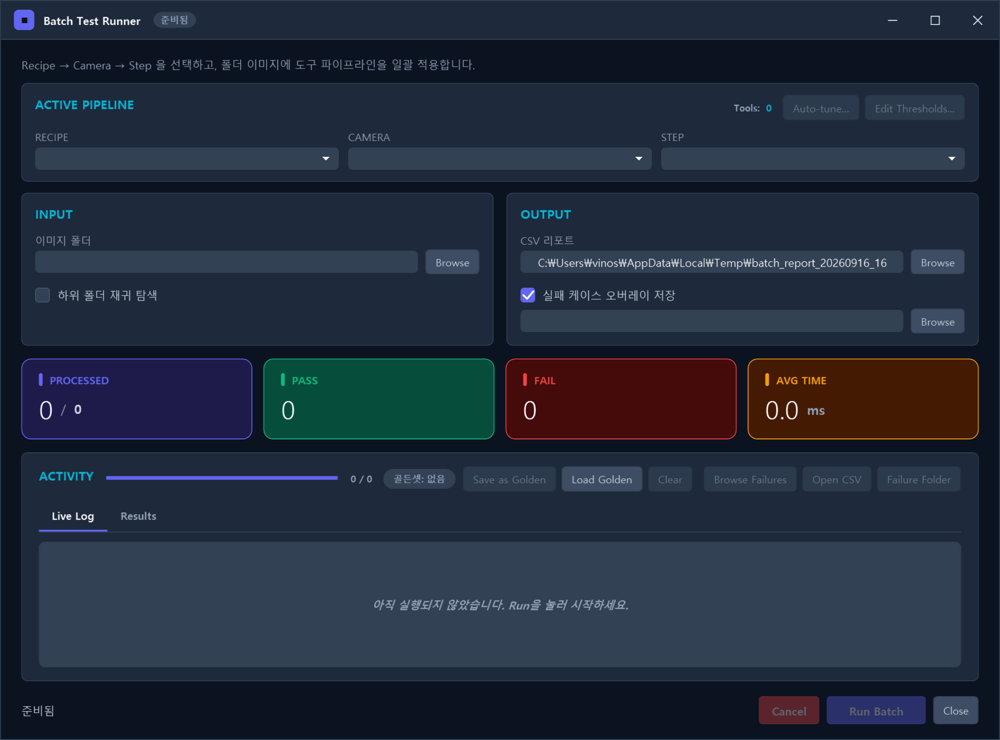
- 메뉴 Batch Test... 를 열고 RECIPE → CAMERA → STEP 을 고릅니다.
- INPUT 에 이미지 폴더(하위 폴더 재귀 가능), OUTPUT 에 CSV 리포트 경로와 실패 케이스 오버레이 저장 여부를 정합니다.
- [Run Batch] — PROCESSED · PASS · FAIL · AVG TIME 이 실시간으로 집계되고 Results 탭에 파일별 결과가 쌓입니다. 실패 행을 더블 클릭하면 Failure Browser(원본 · 오버레이 좌우 비교, ← → 이동)가 열립니다.
- [Edit Thresholds...] — 도구별 Must Succeed(실패 시 즉시 FAIL)와 결과 값의 Min..Max 범위 임계치를 정해 판정 기준을 검증합니다.
- [Auto-tune...] — 도구 파라미터를 From · To · Step 으로 훑으며(또는 Random search) 폴더 전체 PASS 율이 가장 높은 조합을 찾고 [Apply Best] 로 도구에 적용 · 저장합니다.
- 골든셋 — [Save as Golden] 으로 지금 결과를 정답으로 저장하면 이후 배치 결과가 자동 비교되어 달라진 케이스를 알려 줍니다. 레시피를 고친 뒤 회귀 확인에 씁니다.
5.12 기타 설정 창
Camera Manager
VisionSetup 에서 직접 촬영할 카메라를 등록합니다. 운전용 카메라 구성은 시스템 설정 마법사(3장)가 기준이며, 여기서는 편집 작업에 쓸 카메라를 관리합니다.
Inference Settings — 딥러닝 추론 엔진
ONNX Runtime 의 실행 백엔드(Auto · CPU · CUDA · TensorRT)를 고릅니다. GPU 가 없으면 CPU 로 자동 동작합니다. TensorRT 캐시 폴더를 두면 두 번째 실행부터 엔진 재빌드를 건너뛰고, FP16 은 RTX 계열에서 속도를 높입니다. 변경은 다음 모델 로드부터 적용됩니다.
OCR Synth Data — 합성 문자 데이터
날짜 · 로트 번호처럼 형식이 정해진 문자열을 폰트 · 배경 · 증강을 조합해 대량 생성합니다. OCR 도구의 인식 모델을 다듬을 학습 데이터로 쓰며, PP-OCR 학습 카드는 AI 학습 도구가 설치된 PC 에서만 표시됩니다.
SLM Recipe Bot
툴바의 말풍선 버튼으로 엽니다. 모델에 [Connect] 한 뒤 "원형 부품의 지름을 재고 싶어" 처럼 입력하면 레시피 구성을 제안하고, [Apply Recipe] 로 작업 공간에 만들어 줍니다. "자동 실행" 을 켜면 적용 직후 실행 결과까지 알려 줍니다.
6. 비전 도구 설명 및 사용법
Tool Palette 의 도구를 카테고리 순서대로 설명합니다. 도구마다 용도 · 설정 패널 · 주요 파라미터 · 결과 값 · 사용 요령을 정리했으며, 설정 패널 그림은 Expert Mode 를 끈 기본 상태입니다. 파라미터의 정확한 범위와 전체 목록은 부록 13.2 를, 도구를 연결하는 방법은 §5.5 를 참고하세요. 각 파라미터 옆의 물음표(?)에 마우스를 올리면 같은 설명이 프로그램 안에서도 표시됩니다.
6.1 Preprocessing (Color) — 컬러 전처리
Blur — 블러(흐림)
이미지에 블러를 적용해 노이즈를 줄입니다. 엣지 검출이나 이진화 앞에 두면 작은 잡음이 검출에 섞이는 것을 막을 수 있습니다. 컬러 이미지는 컬러 그대로, 그레이 이미지는 그레이 그대로 나옵니다.
| 파라미터 | 기본값 / 범위 | 설명 |
|---|---|---|
| Blur Type | Gaussian (Average · Gaussian · Median · Bilateral) | 블러 종류. Gaussian 이 범용, Median 은 점 노이즈(소금-후추) 제거에, Bilateral 은 엣지를 살리며 평활화할 때 씁니다 |
| Kernel Size | 5 [1~31, 홀수] | 커널 크기. 클수록 강하게 흐려집니다 |
| Sigma X / Sigma Y | 0 [0~10] | 가우시안 표준편차. 0 이면 커널 크기에서 자동 계산(Y 가 0 이면 X 와 같음) |
결과 값 — BlurType · KernelSize · ROI (판정 없음, 항상 성공)
- Kernel Size 는 3~7 에서 시작해 잡음이 사라질 때까지만 키우세요. 너무 크면 검사 대상의 엣지까지 흐려집니다.
- Use ROI 를 켜면 ROI 안쪽만 흐리게 하고 바깥은 그대로 둡니다.
Morphology — 형태학 연산
이진화(또는 그레이) 이미지에 침식 · 팽창 등 형태학 연산을 적용합니다. Blob 검출 전에 작은 잡음을 지우거나, 끊어진 영역을 잇거나, 구멍을 메울 때 씁니다.
| 파라미터 | 기본값 / 범위 | 설명 |
|---|---|---|
| Operation | Dilate (Erode · Dilate · Open · Close · Gradient · TopHat · BlackHat) | Erode 축소 · 잡음 제거 / Dilate 확대 · 구멍 채움 / Open 침식→팽창(작은 점 제거) / Close 팽창→침식(작은 구멍 메움) / Gradient 윤곽 / TopHat 밝은 작은 영역 / BlackHat 어두운 작은 영역 |
| Kernel Width / Height | 3 / 3 [1~21] | 구조 요소 크기. 클수록 효과가 강합니다 |
| Iterations | 1 [1~10] | 연산 반복 횟수 |
결과 값 — Operation · KernelSize · Iterations (판정 없음)
- 점 모양 잡음을 지우려면 Open, 글자나 마킹의 끊김을 이으려면 Close 를 먼저 시도하세요.
- Threshold → Morphology → Blob 순서가 기본 구성입니다.
Image Enhance — 선명도 보정
Sharpen 또는 Unsharp Mask 로 이미지 선명도를 높입니다. 흐릿한 마킹이나 작은 글자를 OCR · Code Reader 로 읽기 전에 두면 인식률이 올라갑니다.
| 파라미터 | 기본값 / 범위 | 설명 |
|---|---|---|
| Mode | UnsharpMask (Sharpen · UnsharpMask) | Sharpen 은 3×3 라플라시안(빠르지만 잡음도 함께 강조), UnsharpMask 가 권장 |
| Amount | 1.0 [0.1~3.0] | 강조 정도. 0.5~2.0 이 일반적이며 과하면 테두리에 후광(halo)이 생깁니다 |
| Blur Kernel | 5 [3~31, 홀수] | Unsharp Mask 의 블러 커널 |
| Threshold (0=off) | 0 [0~64] | 0 이면 모든 픽셀 강화, 5~15 는 잡음 억제와 글자 강화의 균형, 30 이상은 강한 엣지만 |
결과 값 — Success (판정 없음)
- 인쇄 글자가 번져 보이는 라벨은 Image Enhance → OCR 로 연결해 보세요.
Polar Unwrap — 극좌표 펼치기
캡 · 약병 · 파이프처럼 둥근 표면에 둘러 인쇄된 라벨을 극좌표 변환으로 직사각형 띠로 펼칩니다. 펼친 이미지를 OCR 이나 Code Reader 에 연결하면 곡면 글자를 읽을 수 있습니다.
| 파라미터 | 기본값 / 범위 | 설명 |
|---|---|---|
| Center X / Center Y (px) | 0 / 0 | 원의 중심. Circle Fit 을 Coordinates 로 연결하면 자동으로 채워집니다 |
| Inner Radius / Outer Radius (px) | 50 / 200 | 라벨 안쪽 · 바깥쪽 경계 반지름. Circle Fit 연결 시 반지름의 0.6 배 · 1.1 배가 자동 설정됩니다 |
| Start Angle (°) | 0 [0~360] | 펼치기 시작 각도. 0 = 오른쪽(3 시), 90 = 위, 180 = 왼쪽, 270 = 아래 |
| Direction | Counterclockwise (Clockwise · Counterclockwise) | 펼치는 방향 |
| Output Width / Height (0=auto) | 0 / 0 | 출력 크기. 0 이면 둘레 · 반지름 차이에서 자동 |
결과 값 — CenterX · CenterY · InnerRadius · OuterRadius · OutputWidth · OutputHeight (판정 없음)
- 전형 구성: Circle Fit →(Coordinates) Polar Unwrap →(Image) OCR. Circle Fit 이 찾은 중심 · 반지름이 그대로 넘어와 부품이 조금 움직여도 따라갑니다.
6.2 Conversion (Gray) — 그레이 변환
Grayscale — 그레이 변환
컬러 이미지를 흑백(8-bit 그레이)으로 바꿉니다. 대부분의 비전 도구는 그레이에서 더 빠르고 안정적으로 동작하며, Feature Match 는 그레이 입력만 받으므로 컬러 카메라 레시피에서는 맨 앞에 둡니다. 이미 그레이면 그대로 통과합니다.
이 도구는 별도 수치 파라미터 없이 입력 연결과 ROI 만으로 동작합니다.
결과 값 — Width · Height · Channels (판정 없음, 파라미터 없음)
- 컬러 정보로 검사해야 하는 도구(Color Extract · Color Match)는 이 도구 앞에서 원본 이미지를 연결하세요.
Threshold — 이진화
임계값을 기준으로 이미지를 흰색(255)과 검은색(0)으로 나눕니다. 밝기 차이로 대상과 배경을 분리해 Blob 검출로 넘기는 가장 기본적인 전처리입니다. 출력 마스크는 PointCloud Mask Crop 에 연결해 3D 점군을 자를 때도 씁니다.
| 파라미터 | 기본값 / 범위 | 설명 |
|---|---|---|
| Threshold Value | 128 [0~255] (Web 연동 가능) | 이 값보다 밝은 픽셀이 흰색이 됩니다 |
| Max Value | 255 [0~255] | 흰색으로 칠할 값(보통 255) |
| Use Otsu | 해제 | 히스토그램에서 임계값을 자동으로 정합니다. 밝기 분포가 두 봉우리인 이미지에 효과적 |
| Use Adaptive | 해제 | 국소 영역마다 임계값을 정합니다. 조명이 고르지 않은 이미지에 효과적 |
| Block Size / Constant C | 11 / 2 | Adaptive 전용 — 국소 블록 크기(홀수)와 평균에서 뺄 상수 |
결과 값 — ThresholdValue · WhitePixelCount · WhitePixelRatio (판정 없음)
- 실행 후 이미지 소스를 Result Image 로 바꾸면 이진화 결과를 바로 볼 수 있습니다. 대상이 하얗게, 배경이 검게 나오도록 값을 맞추세요.
- 조명이 가장자리에서 어두워지면 Use Adaptive 를 켜 보세요.
Edge Detection — 에지 검출
이미지에서 경계선(에지)만 남깁니다. 윤곽 형상 분석이나 직선 · 원 피팅의 전처리로 씁니다.
| 파라미터 | 기본값 / 범위 | 설명 |
|---|---|---|
| Method | Canny (Canny · Sobel · Scharr · Laplacian) | Canny 가 가장 범용. Sobel · Scharr 는 방향성 1 차 미분, Laplacian 은 2 차 미분 |
| Canny Threshold 1 / 2 | 50 / 150 [0~255] | 낮은 임계(에지 연결) / 높은 임계(강한 에지 판정) |
| Aperture Size | 3 [3~7] | Sobel 커널 크기 |
| L2 Gradient | 해제 | 더 정확한 L2 노름 사용(느림) |
결과 값 — EdgePixelCount · EdgePixelRatio (판정 없음)
- Threshold 2 를 올리면 약한 에지가 사라지고, Threshold 1 을 내리면 끊긴 에지가 이어집니다. 보통 1:2~1:3 비율로 둡니다.
Histogram — 히스토그램 분석 · 평활화
이미지 밝기 분포를 분석하거나 대비를 개선합니다. 조명이 약해 대비가 낮은 이미지에 Equalize · CLAHE 를 적용하면 후속 검출이 안정됩니다. 분석 모드의 평균 · 표준편차는 조명 상태 감시에 쓸 수 있습니다.
| 파라미터 | 기본값 / 범위 | 설명 |
|---|---|---|
| Operation | Analyze (Analyze · Equalize · CLAHE) | 분석만 / 전체 평활화 / 적응형 평활화(국소 대비) |
| Clip Limit | 2.0 [1~10] | CLAHE 대비 제한. 클수록 대비가 강해집니다 |
| Tile Grid Width / Height | 8 / 8 [1~16] | CLAHE 타일 격자 분할 수 |
결과 값 — MinValue · MaxValue · MeanValue · StdDev (판정 없음)
- MeanValue 를 PLC 에 매핑하면 조명이 어두워지는 추세를 PLC 에서 감시할 수 있습니다.
6.3 Pattern Matching — 패턴 매칭
Feature Match — 특징(에지) 기반 패턴 매칭
제품의 윤곽(에지)을 학습해 두었다가 검사 이미지에서 같은 패턴의 위치 · 각도 · 크기를 찾습니다. 부품 유무 확인, 위치 검출, 뒤 도구의 ROI 를 따라가게 하는 기준(Fixture), 얼라인의 기준으로 가장 많이 쓰는 도구입니다. 8-bit 그레이 이미지만 받으므로 컬러 카메라에서는 앞에 Grayscale 을 둡니다.
| 파라미터 | 기본값 / 범위 | 설명 |
|---|---|---|
| Models · [Add Model] [Train Selected] [Delete Model] | — | 학습 모델 목록. 학습 영역(ROI)을 그린 뒤 [Train Selected] 로 학습합니다. 오른쪽에 학습된 특징 이미지가 표시됩니다 |
| 재학습 원점 | UseCurrentImage (UseCurrentImage · KeepReference) | 재학습 시 원점(패턴 중심 · 각도)을 현재 ROI 로 옮길지(기본), 기준 이미지 · 원점을 유지하고 특징만 갱신할지(얼라인 마스터 유지) |
| Score Threshold | 0.50 [0.1~1] | 이 점수 이상이면 검출. 0.5 느슨 · 0.7 일반 · 0.85 엄격 |
| Max Instances | 1 [1~50] | 같은 패턴을 여러 개 찾을 때 개수 상한. 결과에 #1, #2… 번호와 Match{n}_ 값이 나옵니다 |
| Min Coverage | 0 [0~1] | 특징점 일치 비율 하한. 반쪽만 맞은 매칭(중심이 어긋남)을 걸러냅니다. 0.6~0.75 권장, 0 = 끔 |
| Contrast Invariant / Auto Apply Tune | 해제 / 켬 | 명암 반전에도 매칭 / 특징점 수 · 피라미드 레벨을 자동 설정 |
| Use Training Region · [Show ROI] [Draw ROI] [Clear] | — | 학습 영역. 제품이 기울어 놓였으면 RectAffine(회전 사각형)으로 그리면 그 각도가 기준 각도가 됩니다 |
| [기준 이미지 불러오기] | — | [Train] 때 자동 저장된 전체 장면을 다시 띄웁니다(ROI 조정 · 재학습용) |
| Train Mask · [Edit Mask...] [Clear Mask] | — | 그림자 · 날짜 각인 · 반사처럼 이미지마다 달라지는 영역을 학습에서 제외(빨간 영역) |
| [안정 특징 정제 (샘플 이미지)...] | — | 현장 이미지 2 장 이상을 골라 흔들리는 에지를 자동으로 마스크에 추가하고 재학습 |
| Pose Judgment — Use Angle / Scale Judgment · Lower/Upper Limit | 해제 / −180~180° / 0.9~1.1 (Web 연동 가능) | 찾긴 했는데 기울었거나 크기가 다르면 NG 로 걸러냅니다 |
| Search Range — Angle Start / Extent · Min / Max Scale | −45 / 90° · 0.9 / 1.1 | 탐색할 회전 · 크기 범위. 아무 방향으로나 놓이면 Start −180 · Extent 360 |
| Accuracy / Speed — Angle Step · Scale Step · Greediness · Num Levels · NMS Distance | 1° · 0.05 · 0.8 · 3 · 0.5 | 탐색 간격(작을수록 정밀 · 느림), 탐욕도(1 에 가까울수록 빠르나 놓칠 수 있음), 피라미드 레벨, 중복 검출 억제 거리 |
| Edge Config — Canny Low / High · Max Points · Curvature Weight | 50 / 150 · 200 · 0.4 | 학습 에지 추출 임계, 특징점 상한(Auto Tune 시 자동), 곡률 가중 |
| Search Region · [Draw Search Region] [Clear] · X Y W H | 해제 | 탐색 영역 제한 — 속도 향상 |
결과 값 — Score · CenterX · CenterY · Angle · Scale · Coverage · MatchCount · Match{i}_Score/CenterX/CenterY/Angle/Scale/Coverage. 1 순위 매칭이 CenterX/Y · Angle 에 실려 Fixture · Match Align 연결에 쓰입니다
판정 — 점수가 Score Threshold 미만, Coverage 가 Min Coverage 미만, 각도 · 크기 판정 위반이면 NG. 패턴을 하나도 찾지 못하면 NG.
- 학습 절차 — ① 기준 부품 이미지를 열고 ② [Draw ROI] 로 제품 윤곽을 감싸는 학습 영역을 그린 뒤 ③ [Train Selected]. 특징 이미지의 초록 점이 제품 윤곽을 따라 촘촘해야 정상이며 60 개 미만이면 상태바에 경고가 뜹니다(Canny 임계를 낮추거나 영역을 넓히세요).
- 그림자 · 반사가 함께 학습되면 중심 좌표가 끌려갑니다 — [Edit Mask...] 로 제외하거나 [안정 특징 정제] 를 쓰세요. 마스크 편집기에서 초록 = 남는 에지, 주황 = 제외되는 에지입니다.
- 반쪽 매칭으로 중심이 어긋나면 Min Coverage 를 0.6~0.75 로 켜세요. 기각 사유가 결과 메시지에 표시됩니다.
- 이 도구를 Coordinates 로 뒤 도구에 연결하면 뒤 도구의 ROI 가 위치와 각도를 모두 따라갑니다. 단, 이 도구 자신의 Search Region 은 Fixture 로 옮겨지지 않습니다.
Shape Match — 템플릿(NCC) 형상 매칭
정규화 상관(NCC)으로 학습한 형상을 찾습니다. 로고 · 인쇄 마크 · 단색 형상처럼 에지가 적은 대상에 안정적이며 조명 변화에 강합니다. 부분 가림에는 Feature Match 보다 약합니다. 회전 범위는 ±180° 고정이고 Angle Step 으로 정밀도와 속도를 절충합니다.
| 파라미터 | 기본값 / 범위 | 설명 |
|---|---|---|
| Template · [Train Template] [Clear Template] | — | 이미지를 열고 Training Region 을 그린 뒤 [Train Template] 으로 학습. Status 에 학습 상태 표시 |
| Angle Step (°) | 5 [0.5~30] | 회전 탐색 간격. 2° 정밀 · 5° 균형 · 10° 이상 빠름 |
| Min / Max Scale · Scale Step | 0.8 / 1.2 · 0.1 | 크기 탐색 범위와 간격. 1.0/1.0 이면 크기 탐색 없이 가장 빠름 |
| Score Threshold | 0.7 [0~1] | 이 점수 이상이면 검출 |
| Max Instances · NMS Distance Factor | 1 · 0.5 | 다중 검출 개수 상한과 중복 억제 거리 |
| Pose Judgment — Angle / Scale Limit | 해제 (Web 연동 가능) | 각도 · 크기 판정 |
| Pyramid Levels · Top Candidates to Refine | 2 · 3 | 피라미드 단계(높을수록 빠름, 작은 객체 위험)와 정밀화할 상위 후보 수 |
| Search Region · X Y W H | 해제 | 탐색 영역 제한. Fixture 연결 시 이 영역도 함께 옮겨집니다 |
결과 값 — Score · CenterX · CenterY · Angle · Scale · MatchWidth · MatchHeight · MatchCount · Match{i}_…
판정 — 점수가 Score Threshold 미만이거나 각도 · 크기 판정을 벗어나면 NG. 다중 검출 모드의 판정은 1 순위 매칭 기준.
- Feature Match 가 잘 안 잡히는 단색 로고 · 마킹에 먼저 시도해 보세요.
- 속도가 필요하면 Search Region 을 제한하고 Min/Max Scale 을 1.0 으로 고정합니다.
6.4 Alignment — 얼라인
Match Align — 2D 얼라인 (ΔX / ΔY / Δθ)
Feature Match 가 찾은 현재 포즈(중심 · 각도)를 기준(마스터) 포즈와 비교해 변위 ΔX · ΔY · Δθ 를 계산합니다. 캘리브레이션(또는 스텝 Resolution)이 있으면 mm 로도 내고, 핸드아이 행렬로 로봇 · 스테이지 좌표 변위(RobotDX · RobotDY · RobotDTheta)까지 만들어 PLC 로 보낼 수 있습니다. 카메라 1 대로 부품을 보는 표준 2D 얼라인 구성입니다.
| 파라미터 | 기본값 / 범위 | 설명 |
|---|---|---|
| Mode | SinglePoint (SinglePoint · TwoPoint) | 1 점: 매칭 1 개의 중심 · 각도 / 2 점: Feature Match 2 개를 Result 로 연결(연결 순서 = 1 번 · 2 번 점), 각도는 두 점을 잇는 벡터에서 계산 — 기저선이 길수록 각도 정밀 |
| Use Trained Reference | 켬 | Feature Match 학습 시점의 패턴 중심 · 학습 ROI 각도를 기준으로 씁니다. 끄면 아래 Ref 값 사용 |
| Ref X / Ref Y (px) · Ref θ (°) · Ref X2 / Y2 | 0 | 수동 기준. [현재 매칭을 기준으로 등록] 으로 지금 매칭 위치를 기준으로 캡처 |
| Enable Judgment · Unit · Max ΔXY (radial) · Max Δθ (°) | 해제 · Mm · 1.0 · 1.0 | √(ΔX²+ΔY²) 와 |Δθ| 가 모두 한계 이내면 OK. Unit=Mm 은 캘리브레이션 또는 스텝 Resolution 필요 |
| Enable Robot Transform · M11 M21 M12 M22 · θ Sign | 해제 · 1 0 0 1 · 1 | 핸드아이 행렬의 상위 2×2(회전 · 스케일 · 반전)와 각도 부호. Δ 는 벡터라 병진 성분은 필요 없습니다 |
| Draw Overlay | 켬 | 기준(노란 십자) → 현재(원) 변위 화살표와 수치. 초록 = 합격, 빨강 = NG |
결과 값 — RefX/Y/Theta · CurrentX/Y/Theta · DeltaX · DeltaY · DeltaTheta · DeltaXMm · DeltaYMm · RobotDX · RobotDY · RobotDTheta · ScaleRatio · JudgmentRadial · JudgmentPass
판정 — Enable Judgment 를 켜면 위치(반경)와 각도가 모두 한계 이내여야 OK. Unit=Mm 인데 mm 변환이 불가능하면 픽셀로 잘못 판정하지 않고 실패 처리합니다.
- 절차 — ① Feature Match 로 기준 부품의 패턴을 학습 ② Feature Match 를 이 도구에 Result 로 연결하고 Run → Δ 계산 ③ 기준을 학습 시점과 다르게 잡으려면 기준 부품을 놓고 Run 후 [현재 매칭을 기준으로 등록] ④ 로봇 전송은 Robot Transform 을 켜고 핸드아이 상위 2×2 입력.
- 2 점 모드에서 ScaleRatio 가 1.0 에서 벗어나면 오검출이나 배율 변화를 의심하세요.
- Feature Match 를 재학습하면 기준도 함께 바뀌거나(UseCurrentImage) 유지되므로(KeepReference) 재학습 원점 설정을 확인하세요.
Multi-Step Align — 2-스텝 얼라인 (카메라 이동, 대형 부품)
카메라 1 대가 로봇 · 스테이지로 이동하며 두 스텝에서 부품 양단의 특징을 하나씩 매칭할 때, 두 스텝의 포즈를 한 좌표계로 합쳐 기준 대비 ΔX · ΔY · Δθ 를 계산합니다. 부품이 한 화면에 다 들어오지 않는 패널 · 프레임 얼라인에 씁니다. 이 도구는 마지막(B) 스텝의 작업 공간에 놓습니다.
| 파라미터 | 기본값 / 범위 | 설명 |
|---|---|---|
| Sources — Point A / Point B (스텝 + 도구) | — | A · B 스텝의 Feature Match 를 콤보로 지정합니다(Result 연결이 아니라 스텝 간 포즈 저장소를 읽음) |
| Require Same Cycle | 켬 | 이번 사이클에 기록된 포즈만 인정. 끄면 편집은 편하지만 운전 중 A 매칭 실패 시 이전 값으로 잘못 계산될 수 있음 |
| Baseline X / Y (B − A) | 0 / 0 | B 촬영 위치의 A 대비 오프셋(로봇 · 스테이지 이동량). 두 스텝 모두 캘리브레이션이 있으면 mm, 없으면 px — mm 권장 |
| Ref A X/Y · Ref B X/Y · [현재 두 점을 기준으로 등록] | 0 | 기준 부품을 놓고 A → B 순서로 Run 한 뒤 등록. Baseline 을 먼저 넣어야 같은 좌표계로 잡힙니다 |
| Enable Judgment · Max ΔXY · Max Δθ | 해제 · 1.0 · 1.0 | Match Align 과 같은 규칙 |
| Enable Robot Transform · M11~M22 · θ Sign | 해제 · 항등 · 1 | 핸드아이 2×2 변환 |
| Draw Overlay | 켬 | 두 점이 서로 다른 화면에 있으므로 좌상단에 Δ 수치 패널만 표시 |
결과 값 — Unit · PointAX/AY · PointBX/BY · RefAX/AY · RefBX/BY · DeltaX · DeltaY · DeltaTheta · ScaleRatio · RobotDX/DY/DTheta · JudgmentRadial · JudgmentPass
판정 — Match Align 과 동일 — 위치(반경)와 각도가 모두 한계 이내면 OK.
- 예제 템플릿 '2-스텝 얼라인' 을 쓰면 Align A · Align B 스텝과 소스 연결이 자동으로 만들어집니다. 이후 각 스텝의 Feature Match 학습 → Baseline 입력 → 기준 등록 순서로 진행하세요.
- 카메라 이동이 반복 정밀해야 정확합니다. Baseline 은 실제 이동량을 mm 로 넣으세요.
6.5 Blob Analysis — 블롭 분석
Blob — 블롭(덩어리) 분석
이진화된 이미지에서 연결된 영역(블롭)을 찾아 개수 · 면적 · 위치를 구하고 판정합니다. 부품 유무, 개수 세기, 이물 · 결함 검출에 가장 많이 쓰는 도구입니다. 내부 이진화를 켜면 Threshold 없이 그레이 이미지를 바로 받을 수 있습니다.
| 파라미터 | 기본값 / 범위 | 설명 |
|---|---|---|
| Use Internal Threshold / Threshold Value | 켬 / 128 (Web 연동 가능) | 도구 안에서 이진화. 끄면 입력이 이미 이진 이미지여야 합니다 |
| Segmentation Polarity | LightOnDark (LightOnDark · DarkOnLight) | 어두운 배경의 밝은 대상 / 밝은 배경의 어두운 대상 |
| Min Area / Max Area | 100 / 100000000 (px²) | 이 범위 밖의 덩어리는 버립니다 — 잡음 제거와 큰 배경 제외 |
| Enable Judgment | 해제 | 판정 사용. 아래 면적 · 개수 판정이 함께 적용됩니다 |
| Use Area Judgment / Expected Area / Tolerance ± | 해제 / 1000 / 200 (Web 연동 가능) | 전체 블롭 총 면적이 기준 ± 공차 안이면 OK |
| Use Count Judgment / Count Mode / Expected Count | 해제 / Equal / 1 (Web 연동 가능) | 개수 판정. Count Mode 는 Equal · GreaterOrEqual · LessOrEqual · Range(Max 까지) · Tolerance(기준 ± 상/하 공차, Web 연동 권장) |
| Draw Contours / Bounding Box / Center Point / Labels | 모두 켬 | 결과 오버레이 — 색상 윤곽 · 노란 외접 사각형 · 빨간 십자 · #번호 |
| (Expert) Circularity · Perimeter · AspectRatio · Convexity 필터, SortBy · MaxBlobCount | — | 원형도(1.0 = 완전한 원) · 둘레 · 종횡비 · 볼록도로 모양을 거르고, 정렬 기준과 상위 N 개만 남기기 |
결과 값 — BlobCount · TotalArea · CenterX · CenterY · Area · Perimeter · Circularity · Angle · AreaJudgment · CountJudgment · JudgmentPass
판정 — Enable Judgment 를 켜면 면적 판정 AND 개수 판정이 모두 통과해야 OK. 끄면 블롭이 1 개 이상 검출되면 OK, 0 개면 NG.
- 실행 후 Run Results 의 Area 값을 보고 Min/Max Area 를 대상 크기의 절반~두 배로 잡으면 잡음이 대부분 걸러집니다.
- Angle 을 내보내므로 Blob 을 Coordinates 로 연결하면 뒤 도구의 ROI 가 블롭의 위치 · 기울기를 따라갑니다.
- Web 에서 기준값을 관리하려면 Count Mode 를 Tolerance 로 두고 Expected Count · 상/하 공차를 Web 파라미터에 연동합니다(§5.7).
6.6 Measurement — 치수 측정
Caliper — 엣지 검출 · 캘리퍼 측정
ROI 를 가로지르는 방향으로 밝기 변화를 스캔해 엣지(경계선)의 위치를 서브픽셀 정밀도로 찾습니다. 폭 측정, 엣지 간 거리, 위치 검출의 기본 도구이며, 찾은 점을 Geometry 에 Result 로 연결해 거리 · 각도를 계산하고 판정합니다.
| 파라미터 | 기본값 / 범위 | 설명 |
|---|---|---|
| Projection Width | 20 [1~200] | 스캔 라인에 수직인 방향의 폭. 클수록 잡음에 강하지만 가는 엣지를 놓칠 수 있습니다 |
| Search Axis | AlongWidth (AlongWidth · AlongHeight) | ROI 의 어느 축을 따라 탐색할지. 화면의 화살표가 실제 탐색 방향입니다 |
| Polarity | DarkToLight (DarkToLight · LightToDark · Any) | 탐색 방향 기준 밝기 변화 극성 |
| Edge Threshold | 30 [1~100] (Web 연동 가능) | 엣지로 인정할 최소 대비. 5~20 약한 엣지, 30~60 일반, 70 이상 강한 엣지만 |
| Filter Half Width | 2 [1~10] | 평활 필터 반폭. 1~2 날카로운 엣지, 4~10 잡음 많은 이미지 |
| Mode | SingleEdge (SingleEdge · EdgePair) | 엣지 1 개 / 반대 극성의 엣지 쌍 사이 폭(Width) 측정 |
| Max Edges · Scorer Mode · Edge Selection | 10 · MaxContrast · Best | 후보 엣지 수 상한, 점수 방식(대비 우선 · 중앙 근접 · 종합 · 사용자 가중), 선택 기준(최고 점수 · 첫 · 마지막) |
| Projection Mode · Gaussian Filter · Sigma · Normalized Contrast · Sub-Pixel Method | Uniform · 켬 · 1.0 · 해제 · Parabolic | 투영 방식, 가우시안 평활(고정밀 권장), 조명 불균일 보정, 서브픽셀 보간 방법(Parabolic · Gaussian · Quartic5Point) |
결과 값 — EdgeX · EdgeY · EdgeScore · Width · Edge1X/Y · Edge2X/Y · CenterX/Y · EdgeCount 와 mm 환산 키(EdgeXMm · WidthMm …)
판정 — 자체 공차 판정은 없습니다. 엣지를 찾지 못하면 실패. 치수 판정은 Geometry 에서 합니다.
- ROI 를 엣지에 직각으로, 엣지가 ROI 가운데쯤 오도록 그리세요. 화살표 방향과 Polarity 를 맞추는 것이 첫 번째 확인 사항입니다.
- 엣지가 흔들리면 Projection Width 와 Filter Half Width 를 키우거나 Gaussian Filter 를 켭니다.
- Fixture 연결로 각도가 넘어오면 스캔 축도 함께 기울어집니다.
Line Fit — 직선 피팅
기준선을 따라 여러 개의 캘리퍼를 배치해 엣지 점들을 찾고 직선을 피팅합니다. 직선 엣지의 위치 · 각도 측정, 정렬 검사, Geometry 의 직선 입력에 씁니다.
| 파라미터 | 기본값 / 범위 | 설명 |
|---|---|---|
| Num Calipers | 10 [2~50] | 기준선을 따라 균등 배치할 캘리퍼 수. 5~20 권장 |
| Search Length · Search Width | 50 · 5 | 기준선에 수직인 탐색 거리 / 기준선 방향 투영 폭 |
| Polarity · Edge Threshold · Filter Half Width | DarkToLight · 30 (Web 연동 가능) · 2 | Caliper 와 동일 |
| Fit Method · RANSAC Threshold | LeastSquares (LeastSquares · RANSAC) · 5.0 px | 최소제곱(빠름) / RANSAC(이상치 · 부분 가림에 강함)과 이상치 거리 |
| Min Found Calipers | 3 [2~20] | 유효 엣지가 이보다 적으면 피팅 실패 |
결과 값 — FoundCount · LineAngle · LinePointX/Y · FitError · InlierCount
판정 — 유효 캘리퍼가 Min Found Calipers 미만이면 실패. 각도 · 거리 판정은 Geometry(LineLineAngle · LineLineDistance)에서.
- 엣지 일부가 가려지거나 이물이 있으면 Fit Method 를 RANSAC 으로 바꾸세요.
Circle Fit — 원 피팅
예상 원주를 따라 방사형으로 캘리퍼를 배치해 엣지를 찾고 원을 피팅합니다. 구멍 · 원형 부품의 중심 · 반지름 · 지름 측정, 동심도 검사, Polar Unwrap 의 중심 소스로 씁니다.
| 파라미터 | 기본값 / 범위 | 설명 |
|---|---|---|
| Center X / Y · Expected Radius | 200 / 200 · 100 (Web 연동 가능) | 예상 중심과 반지름. ROI(원)를 그리면 자동으로 채워집니다 |
| Num Calipers · Search Length · Search Width | 16 · 50 · 5 | 원주를 따라 배치할 캘리퍼 수(8~36 권장)와 반경 방향 탐색 거리 · 접선 방향 폭 |
| Start Angle · End Angle | 0 · 360 | 부분 원호만 볼 때 범위 지정 |
| Search Direction · Polarity · Edge Threshold | InwardToOutward · DarkToLight · 30 | 중심→바깥 / 바깥→중심 탐색 방향, 극성, 대비 임계 |
| Fit Method | LeastSquares (LeastSquares · RANSAC) | 부분 가림에는 RANSAC |
결과 값 — FoundCount · CenterX · CenterY · Radius · Diameter · FitError · InlierCount 와 mm 키(CenterXMm · RadiusMm · DiameterMm)
판정 — 유효 캘리퍼가 부족하면 실패. 지름 공차 판정은 Geometry(CircleCircleDistance 등)나 Batch Test 의 Edit Thresholds 로.
- Circle Fit →(Coordinates) Polar Unwrap 으로 연결하면 곡면 라벨 펼치기의 중심이 자동으로 따라갑니다.
Geometry — 기하 계산과 공차 판정
Caliper(점) · Line Fit(직선) · Circle Fit(원)을 Result 로 연결해 두 요소 사이의 거리 · 각도 · 교차점을 계산하고, 기준값 ± 공차로 OK/NG 를 판정합니다. 측정 검사의 마지막 계산 · 판정 도구입니다. 소스가 2 개 이상 연결되어야 합니다.
| 파라미터 | 기본값 / 범위 | 설명 |
|---|---|---|
| Operation | PointPointDistance | PointPointDistance(두 점 거리) · PointLineDistance(점→직선 수직 거리) · LineLineDistance(두 직선 거리, 평행도) · LineLineAngle(두 직선 각도) · LineLineIntersection(교차점) · LineCircleIntersection(직선-원 교차점) · CircleCircleDistance(두 원 중심 · 엣지 거리) |
| Enable Judgment · Unit | 해제 · Mm (Mm · Px) | 판정 사용과 단위. Mm 은 캘리브레이션 또는 스텝 Resolution 필요 |
| Expected Value · Tolerance (−) · Tolerance (+) | 100 · 0.5 · 0.5 (Web 연동 가능) | 기준 치수와 하한 · 상한 공차. 도면의 100 +0.2/−0.5 를 그대로 넣습니다 |
결과 값 — Distance · DeltaX · DeltaY · Angle · SignedAngle · IntersectionX/Y · FootX/Y · SignedDistance · ParallelAngle · CenterDistance · EdgeDistance · IntersectionCount · JudgmentValue · JudgmentLow · JudgmentHigh · JudgmentPass 와 mm 키(DistanceMm 등)
판정 — Enable Judgment 를 켜면 거리(또는 각도)가 [기준 − 공차(−), 기준 + 공차(+)] 안이면 OK. 교차점 연산은 판정 값이 없어 경고만 표시. Unit=Mm 인데 변환이 불가능하면 실패 처리.
- 결과 이미지 좌상단에 OK(초록) / NG(빨강) 배지가 그려집니다.
- 각도 연산은 Unit 과 무관하게 항상 도(°)로 판정합니다.
- Web 에서 기준값을 관리하려면 Dimension Tool 프리셋(Reference Value · Lower/Upper Tolerance)을 연동하세요.
6.7 Identification — 문자 인식 · 검증
OCR — 문자 인식
유통기한 · 시리얼 · 로트 번호 같은 산업용 문자를 폰트 학습 없이 읽습니다. 엔진은 Tesseract 와 PP-OCR(ONNX) 두 가지이며, 텍스트 영역을 스스로 찾고 회전 · 저대비 · 도트 문자에 강한 PP-OCR 을 대부분의 현장에 권장합니다. 읽은 문자열을 기대값(또는 정규식)과 비교해 판정할 수 있습니다.
| 파라미터 | 기본값 / 범위 | 설명 |
|---|---|---|
| OCR Engine · Language | Tesseract (Tesseract · PPOcrOnnx) · English | 엔진과 언어(영 · 한 · 일 · 중 · 영+한). PP-OCR 은 자체 전처리를 하므로 Auto Preprocess · Invert · Denoise · Target Height 설정을 무시합니다 |
| Page Seg Mode · Engine Mode | SingleLine · LstmOnly | Tesseract 전용 — 한 줄 · 한 단어 · 한 글자 · 블록 등 레이아웃 가정과 엔진 모드 |
| Char Whitelist | (빈 값) | 허용 문자 집합(예: 0123456789-/). O↔0, l↔1 같은 혼동을 막습니다 |
| Max Side Length · Custom Det/Rec Model · Custom Dict | 960 · (빈 값) | PP-OCR 전용 — 입력 최대 변(작은 글씨는 1600~2000)과 직접 학습한 모델 · 사전 파일 |
| Confidence Threshold | 40 [0~100 %] | 이 신뢰도 미만이면 실패 |
| Auto Preprocess · Invert Image · Target Text Height · Denoise Level · Dot Matrix Mode | 켬 · 해제 · 40 · 1 · 해제 | Tesseract 전용 전처리 — 자동 대비 · 이진화, 흑배경 백글자 반전, 글자 높이 확대, 잡음 제거, 도트 프린트 연결 |
| Format Preset · Custom Patterns | None | 출력 형식 강제 — DD/MM/YYYY, YYYY-MM-DD, LOT 6~8 자리, 직접 입력. 토큰 D/M/Y/H/S/f=숫자, L=영문, A=영숫자, ?=임의, 그 외 문자는 리터럴로 치환(‘/’↔‘7’ 오인식 보정) |
| Enable Verification · Expected Text · Use Regex Match | 해제 · (빈 값) · 해제 | 기대 문자열(또는 정규식)과 비교해 판정 |
| Draw Overlay · Tessdata Path | 켬 · (빈 값) | 단어별 박스 · 신뢰도 표시 / Tesseract 데이터 폴더(비우면 자동) |
결과 값 — RecognizedText · RawText · FormatMatched · MatchedPattern · Confidence · WordCount · Words · WordConfidences · VerificationPass
판정 — 검증을 켜면 신뢰도 통과 AND 문자열 일치, 끄면 신뢰도 통과 AND 인식 문자열이 비어 있지 않으면 OK.
- 기울어진 문자는 RectAffine(회전 사각형) ROI 로 그리면 자동으로 바로 세워 인식합니다.
- 정해진 형식의 문자열은 Format Preset 을 지정하면 오인식이 형식에 맞게 보정됩니다.
- 깨끗한 흑백 문서 · 큰 영문 단어는 Tesseract, 그 외 대부분은 PPOcrOnnx 를 쓰세요. 정해진 폰트의 PASS/FAIL 검증이 목적이면 OCV 가 더 엄격합니다.
OCV — 문자 검증 (Optical Character Verification)
미리 학습한 폰트 템플릿과 각 문자를 대조해 인쇄가 제대로 되었는지 문자 단위로 검증합니다. OCR 이 ‘읽기’ 라면 OCV 는 ‘대조’ — 찍힘 · 번짐 · 누락 같은 인쇄 결함을 잡습니다. 같은 글자에 여러 폰트 · 스타일을 등록할 수 있습니다.
| 파라미터 | 기본값 / 범위 | 설명 |
|---|---|---|
| Font Library Training — Known String · [Train] · [Clear Library] | — | 학습 영역(ROI)을 정답 문자열에 맞추고 Known String 에 정답(예: ABC123)을 넣은 뒤 [Train]. 분할된 글자 수와 정답 길이가 같아야 학습됩니다 |
| Invert Image · Min/Max Char Height · Min Char Width | 해제 · 12 / 200 · 4 (px) | 이진화 극성과 글자 크기 필터(잡음 · 배경 제외) |
| Match Threshold | 0.65 [0~1] | 문자별 NCC 점수 하한. 0.65 산업 기본, 0.80 이상 엄격, 0.50 이하 관대 |
| Expected Text (optional) | (빈 값) | 지정하면 위치별 문자 비교와 길이 일치까지 판정 |
| Use Search Region · X Y W H | 해제 | 학습 위치와 다른 곳에서 검증할 때 탐색 영역 지정. Fixture 연결 시 함께 이동 |
| Draw Overlay | 켬 | 분할 박스 · 인식 문자 · 점수(초록 PASS · 빨강 BadChar) |
결과 값 — ReadString · CharCount · GoodCharCount · BadCharCount · MeanScore · MinScore · AllCharsPass · LengthMatch
판정 — 문자 하나라도 점수가 Match Threshold 미만이면 NG. Expected Text 를 지정하면 문자 · 길이 불일치도 NG.
- 컨베이어 위에서 라벨 위치가 바뀌면 Feature Match → Coordinates 연결로 Search Region 을 따라가게 하세요.
6.8 Code Reading — 코드 판독
Code Reader — 바코드 · QR · DataMatrix 판독
QR · 1D 바코드(CODE 128/39, EAN 등) · DataMatrix · PDF417 을 인식해 문자열로 디코딩합니다. 저대비 레이저 마킹은 자동 대비 보정(CLAHE)으로 읽고, 회전 사각형 ROI 를 쓰면 기울어진 코드도 바로 세워 읽습니다. 기대 문자열 검증, GS1 파싱, DataMatrix 인쇄 품질 등급까지 지원합니다.
| 파라미터 | 기본값 / 범위 | 설명 |
|---|---|---|
| Code Reader Mode | Auto (Auto · QRCode · Barcode1D · DataMatrix · PDF417) | 코드 종류를 지정하면 빠르고 정확합니다 |
| Max Code Count · Try Harder · DM Candidate Localization | 10 · 켬 · 켬 | 한 화면 판독 개수 상한, 정밀 탐색, DataMatrix 후보 영역 선탐색 |
| Enable Verification · Expected Text · Use Regex Match | 해제 · (빈 값) · 해제 | 판독 문자열 검증(예: ^LOT-\d{6}$) |
| Parse GS1 AIs | 해제 | GS1 코드를 (01)GTIN · (10)Batch · (17)Expiry · (21)Serial 로 분리해 Gs1_01 같은 결과 키로 노출 |
| Enable Grading · Min Pass Grade | 해제 · F | DataMatrix 인쇄 품질 등급(ISO/IEC 15415 간소화). C 가 산업 표준 최저 |
| Draw Overlay | 켬 | 코드 위치 폴리곤 + 문자열(초록 PASS · 빨강 FAIL), 등급 · GS1 배지 |
결과 값 — DecodedText · CodeFormat · CodeCount · Gs1Formatted · Gs1_xx · OverallGrade · SymbolContrast · Modulation · PixelsPerModule · SymbolSize
판정 — 검증을 켜면 문자열 불일치 NG, 등급을 켜면 Min Pass Grade 미만 NG. 둘 다 끄면 코드가 1 개 이상 읽히면 OK.
- 곡면 라벨은 Circle Fit → Polar Unwrap 으로 펼친 뒤 읽습니다.
- DataMatrix 가 안 읽히면 Image Enhance 로 선명도를 올리거나 ROI 를 코드에 가깝게 잡아 보세요.
6.9 3D Processing — 점군 처리
PointCloud Filter — 점군 솎아내기 · 이상점 제거
점군의 점 수를 줄이고(VoxelGrid 다운샘플) 표면에서 튄 점을 지웁니다(통계적 이상점 제거, SOR). Registration · Deviation 앞에 두어 처리 속도를 높이는 것이 주된 용도입니다. 촬영 자체의 노이즈는 이 도구가 아니라 스텝의 Camera Settings 에 있는 ‘포인트 클라우드 후처리’(끄기 · 약 · 중 · 강)로 카메라 안에서 정리합니다.
| 파라미터 | 기본값 / 범위 | 설명 |
|---|---|---|
| Enable Voxel Grid · Voxel Size (mm) | 켬 · 1.0 [0.05~20] | 같은 격자 안의 점을 하나로 합칩니다. 0.1~0.5 정밀(작은 부품), 1.0 일반, 2~5 속도 우선 |
| Enable SOR · Neighbor Count (K) · Stddev Multiplier | 해제 · 30 · 2.0 | 통계적 이상점 제거. 큰 점군에서는 시간이 오래 걸리므로 VoxelGrid 로 먼저 솎아낸 뒤 켭니다 |
결과 값 — InputPoints · OutputPoints · ReductionRatio · AppliedVoxel · AppliedSor
판정 — 판정 없음. ReductionRatio 가 0.9 이상이면 Voxel Size 가 과한지 확인하세요.
- 가공된 점군은 뒤의 점군 도구(Registration · Deviation · Cluster · Plane Fit)가 그대로 쓰지만, 촬영 시 만들어진 Depth Map(Height Slicer 입력)에는 반영되지 않습니다.
PointCloud Registration — 기준 형상 정합 (3D 얼라인)
기준 3D 데이터(.vpc 점군 또는 .stl CAD)와 현재 점군을 겹쳐 맞춥니다. PCA 로 거칠게 맞춘 뒤 ICP 로 정밀 정합해 이동 · 회전량(6 축)을 구하며, 부품이 매번 조금씩 다르게 놓일 때 자세를 재거나 편차 검사 앞단에서 자세를 맞출 때 씁니다.
| 파라미터 | 기본값 / 범위 | 설명 |
|---|---|---|
| Reference Point Cloud · [Save Current as Reference] [Load...] [Clear] | (없음) | 현재 점군을 기준으로 저장하거나 .vpc / .stl 파일을 불러옵니다(STL 은 표면을 약 20만 점으로 샘플링) |
| Enable Coarse Alignment | 켬 | PCA 거친 정렬. 구 · 정육면체처럼 완전 대칭인 물체에는 효과가 없습니다 |
| Max Iterations · Tolerance (mm) | 50 · 0.01 | ICP 반복 횟수와 수렴 기준 |
| Confidence Distance (mm) | 1.0 | 신뢰도 계산에 쓰는 대응 거리 |
| Apply Transform to Source | 켬 | 구한 변환을 현재 점군에 적용(뒤 도구가 정렬된 점군을 봄). 변위만 필요하면 끕니다 |
결과 값 — MeanError · Iterations · Converged · Confidence · CoarseApplied · TranslationX/Y/Z · TranslationNorm · RotationX/Y/Z · M11~M44
판정 — MeanError(mm)가 작고 Converged = True 면 성공. Confidence 0.9 이상이면 잘 맞은 것, 0.5 이하면 다른 부품이거나 정합 실패 의심.
- 템플릿 ‘표준 3D 얼라인’ 은 Filter → Registration(변환 미적용) → Result 로 6 축 변위를 내고, ‘3D 기준 형상 편차 검사’ 는 Registration → Deviation 순서입니다.
PointCloud Mask Crop — 마스크로 점군 잘라내기
2D 마스크 이미지(Threshold · Height Slicer · YOLOv8-seg 의 마스크 출력)에 해당하는 영역만 3D 점군에서 남깁니다. 2D 딥러닝 검출과 3D 측정을 잇는 다리 역할이며, 마스크와 점군 해상도가 달라도 자동으로 비율을 맞춥니다. 마스크 없이 ROI 만 그려 잘라낼 수도 있습니다.
| 파라미터 | 기본값 / 범위 | 설명 |
|---|---|---|
| Min Mask Value | 1 [1~255] | 이 값 이상인 마스크 픽셀을 유효로 봅니다 |
| Dilate (px) | 0 [0~50] | 마스크를 바깥으로 넓혀 경계 점을 더 포함 |
| Invert Mask | 해제 | 마스크 밖을 남깁니다 |
| Combine Mode | Replace (Replace · Union) | 같은 점군에 Mask Crop 을 여러 개 나란히 쓸 때 두 번째부터 Union 으로 두어야 합칩니다(모두 Replace 면 첫 크롭이 점군을 이미 좁혀 두 번째가 실패) |
| Skip Invalid Z (=0) | 켬 | 깊이 0 인 무효 점 제외 |
결과 값 — InputPoints · OutputPoints · KeptRatio · MaskCoveragePercent · MergedPoints
판정 — 남은 점이 0 이면 실패(점군은 바뀌지 않음). MaskCoveragePercent 가 100 에 가까우면 마스크가 아니라 일반 이미지를 연결한 것입니다.
- 자동 마스크 흐름: YOLOv8-seg(Output Mask Image 켬) 또는 Threshold · Height Slicer → Image 연결 → Mask Crop → Result 연결 → PointCloud Cluster.
- 수동 흐름: 2D 이미지를 연결하고 이 도구를 선택한 뒤 이미지 뷰에서 ROI(사각형 · 원 · 다각형)를 그립니다. 결과는 Point Cloud 탭에서 확인합니다.
PointCloud Cluster — 덩어리 분리 · 개수 · 치수
점군을 거리 기준으로 덩어리(클러스터)로 나눠 물체 개수를 세고 덩어리마다 크기(가로 · 세로 · 높이) · 중심 · 방향을 잽니다. 부품 개수 세기, 가장 큰 물체만 남기기, 부스러기 제거에 씁니다. 카메라 정보로 mm 환산이 가능합니다.
| 파라미터 | 기본값 / 범위 | 설명 |
|---|---|---|
| Tolerance (mm) | 5.0 [0.1~50] | 이 거리 안의 점은 같은 덩어리. 부품 사이 간격보다 작게 |
| Min Points · Max Points | 100 · 1000000 | 덩어리로 인정할 점 수 범위(잡음 제외) |
| Max Reported Clusters | 10 [1~50] | 결과에 보고할 덩어리 수 상한 |
| Scale Mode · XY Scale (mm/px) | Manual (Manual · AutoFromCamera) · 1.0 | AutoFromCamera 는 Mech-Mind 촬영 점군에서 카메라 내부 정보와 실측 높이로 mm/px 를 자동 계산(권장). 파일 점군 등 정보가 없으면 XY Scale 로 폴백 |
| Output Mode | LargestOnly (LargestOnly · AllMerged · KeepOriginal) | 가장 큰 덩어리만 남김 / 유효 덩어리 전부 합침(잡음 제거) / 점군 유지하고 측정만 |
| Draw Overlay | 켬 | 2D 이미지에 덩어리별 색 점 · 외접 사각형 · 중심 · 라벨(#번호, 점 수, 길이×폭) |
결과 값 — ClusterCount · LargestPoints · Cluster{i}_Points · Cluster{i}_CenterX/Y/Z(+Mm) · Cluster{i}_SizeX/Y/Z · Cluster{i}_Length · Cluster{i}_Width · Cluster{i}_Angle · Cluster{i}_{j}_DistanceMm
판정 — 자체 공차 판정 없음 — 개수 · 치수는 Result 도구 또는 Batch Test 임계로 판정하고, 덩어리 간 거리 · 각도는 3D Geometry 로 계산합니다.
- 템플릿 ‘3D 객체 카운트 · 치수 (기본)’ · ‘DL 세그 기반 3D 객체 검출’ 이 이 도구까지 연결된 체인을 만들어 줍니다.
- 3D Geometry 의 클러스터 콤보에서 덩어리를 고르면 2D 뷰에 강조 표시됩니다.
6.10 3D Measurement — 3D 측정
PointCloud Deviation — 기준 형상 대비 편차 히트맵
기준(양품) 점군과 현재 점군을 점 단위로 비교해 어느 부위가 얼마나 어긋났는지 히트맵(초록 = 일치, 노랑 = 어긋나기 시작, 빨강 = 범위 초과)으로 보여 주고, 허용 오차를 벗어난 점의 비율로 OK/NG 를 판정합니다. 들뜸 · 눌림 · 변형 검사에 씁니다.
| 파라미터 | 기본값 / 범위 | 설명 |
|---|---|---|
| Reference Point Cloud · [Save Current as Reference] [Load...] [Clear] | (없음) | 기준 점군(.vpc) 또는 CAD(.stl) |
| Tolerance (mm) | 0.5 [0.01~10] | 이 거리 이내면 일치 |
| Heatmap Range (mm) | 1.0 [0.05~10] | 이 값 이상이면 빨강 |
| Max Defect Ratio (%) | 0.5 [0~100] | 초과 점 비율이 이 값을 넘으면 NG |
| Output Mode | ColorizeAll (ColorizeAll · DefectsOnly · KeepOriginal) | 전체 색칠 / 초과 점만 남김(뒤에 Cluster 를 붙이면 불량 영역의 개수 · 크기 · 위치 측정) / 원본 유지 |
결과 값 — MeanDeviation · MaxDeviation · DefectPoints · DefectRatio · CheckedPoints
판정 — DefectRatio × 100 ≤ Max Defect Ratio 면 OK.
- 자세가 맞지 않은 채 실행하면 전체가 빨갛게 나옵니다 — 반드시 Registration(Coarse Alignment 켬)을 앞에 두세요.
Height Slicer — 높이 범위로 2D 마스크 만들기
깊이 맵에서 지정한 높이(Z) 범위에 드는 영역만 2D 이미지로 만듭니다. 바닥을 빼고 부품이 있는 높이만 남겨 PointCloud Mask Crop 에 넘기는 3D 검사의 출발점입니다. Image 연결이 없으면 현재 스텝의 깊이 맵을 자동으로 입력으로 씁니다.
| 파라미터 | 기본값 / 범위 | 설명 |
|---|---|---|
| Min Z (mm) | 0 (Web 연동 가능) | 이보다 낮은 점 제외 — 바닥면보다 약간 높게 |
| Max Z (mm) | 1000 (Web 연동 가능) | 이보다 높은 점 제외 |
결과 값 — MinZ · MaxZ (출력은 슬라이스된 2D 이미지)
판정 — 판정 없음.
- 3D 뷰에 슬라이스 경계가 표시됩니다. 3D → Save Height Slicing 으로 설정을 저장할 수 있습니다.
- 템플릿 ‘3D 객체 카운트 · 치수 (기본)’ 에서 MinZ/MaxZ 를 부품 높이 범위에 맞추는 것이 첫 조정 항목입니다.
Plane Fit — 평면 피팅 (평탄도 · 기울기 · 단차 기준면)
ROI 안의 3D 점들에서 평면 방정식을 구합니다. 평탄도, 기울기(두 평면 각도), 단차(점-평면 거리)의 기준면을 만들며, 결과를 3D Geometry 에 Result 로 연결해 씁니다.
| 파라미터 | 기본값 / 범위 | 설명 |
|---|---|---|
| Fit Method | RANSAC (LeastSquares · RANSAC) | RANSAC 이 이상점에 강해 기본 권장 |
| RANSAC Iterations | 1000 [10~5000] | 보통 200~500 이면 충분. 점군이 지저분할수록 올립니다 |
| RANSAC Threshold (mm) | 0.5 [0.01~5] | 평면에서 이 거리 안의 점을 평면 위 점으로 봅니다. 0.1 가공면, 0.5 일반, 2.0 거친 표면. 너무 작으면 실패, 너무 크면 결과가 기웁니다 |
| Sample Stride | 2 [1~16] | 점 표본 간격. 올리면 빨라지지만 작은 굴곡을 놓칠 수 있음 |
결과 값 — PlaneA/B/C/D · NormalX/Y/Z · Flatness · AvgError · InlierCount · TotalPoints
판정 — 자체 판정 없음 — 3D Geometry 로 각도 · 거리를 구한 뒤 Result 또는 PLC 에서 판정합니다.
- 템플릿 ‘평면 틸트 얼라인’ 은 Plane Fit Ref · Plane Fit Target → 3D Geometry(PlaneToPlaneAngle) 로 구성되며 AngleDeg 0° 가 평행입니다.
3D Geometry — 점 · 평면 사이 거리 · 각도
3D 점 · 평면 사이의 거리와 각도를 계산합니다. 클러스터 중심 두 개 사이 거리, 점에서 평면까지 높이, 두 평면 사이 각도(기울기) · 거리(단차)를 구합니다. 평면 틸트 얼라인 템플릿의 핵심 도구입니다.
| 파라미터 | 기본값 / 범위 | 설명 |
|---|---|---|
| Operation | PointToPointDistance (PointToPointDistance · PointToPlaneDistance · PlaneToPlaneAngle · PlaneToPlaneDistance · PointToLineDistance3D) | 계산 종류 |
| Point Source | 수동 입력 (픽셀) (수동 · 연결 소스(클러스터)) | Point A/B 의 픽셀 좌표를 직접 넣거나, Result 로 연결한 PointCloud Cluster 의 덩어리(Cluster A / Cluster B 콤보)를 고릅니다. 클러스터 도구 하나만 연결해도 A/B 두 덩어리 중심 간 거리를 잽니다 |
| Source Geometries | — | Result 로 연결된 Plane Fit · Cluster 목록 |
결과 값 — Distance3D · SignedDistance · DeltaX/Y/Z · AngleDeg · AngleRad · Point1X/Y/Z · Point2X/Y/Z · IsParallel
판정 — 이 도구에는 공차 판정이 없습니다. 합불이 필요하면 뒤에 Result 도구를 연결하거나 AngleDeg · Distance3D 를 PLC 로 매핑해 PLC 에서 판정합니다.
- 클러스터 콤보에서 덩어리를 고르면 2D 뷰에 해당 덩어리가 강조됩니다. 목록이 비어 있으면 PointCloud Cluster 를 Result 로 연결하고 Run 을 한 번 실행하세요.
- mm 정확도는 Cluster 의 Scale Mode(AutoFromCamera 권장)를 따릅니다.
6.11 Deep Learning — 딥러닝 추론
Detection — 딥러닝 객체 검출 (D-FINE · YOLO)
학습된 ONNX 모델로 객체의 위치(박스)와 클래스를 검출합니다. 기본 학습 백본은 D-FINE이며 YOLOv8/v11 형식도 자동 판별합니다. 부품 유무 · 다종 부품 검출 · 외관 결함 검출에 씁니다. 모델 파일(.onnx)은 AI 학습 도구(10장)나 MLOps(9장)에서 만듭니다. 실행 백엔드(CPU · CUDA · TensorRT)는 Inference Settings(§5.12)에서 전역으로 정합니다.
| 파라미터 | 기본값 / 범위 | 설명 |
|---|---|---|
| Model Path (.onnx) · [레지스트리…] | (빈 값) | ONNX 파일 또는 MLOps 레지스트리 참조(model://…). Class Names 는 모델 메타데이터에서 자동으로 채워집니다 |
| Inference Size (px) | 640 [320~1280] | 학습 imgsz 와 같게 |
| Use SAHI · Tile Size · Overlap Ratio | 해제 · 640 · 0.2 | 큰 이미지를 타일로 나눠 추론(작은 결함). 타일 수만큼 느려집니다 |
| Use CLAHE · Clip Limit · Tile Grid Size | 해제 · 2.0 · 8 | 추론 전 국소 대비 향상(어두운 이미지). 조명이 고르면 끕니다 |
| Confidence Threshold · IoU Threshold | 0.25 · 0.45 | 검출 신뢰도 하한(0.25 많이, 0.7 확실한 것만) / 중복 박스 제거 기준 |
| Use Per-Class Thresholds · Class Names | 해제 · (자동) | 클래스별로 임계값을 다르게(크랙 0.3, 스크래치 0.6 등). 메타데이터가 없으면 클래스 이름을 쉼표로 입력 |
| Use Dot Analysis (+ Min/Max Dot Area · Circularity · Min Dot Distance · Preprocess/Threshold Mode · Pattern Angle Metric · Per-Class Dot Expectations) | 해제 | 검출 박스 안의 점(dot) 군락 개수 · 배치 · 정렬 각도를 재서 기대 개수 ± 공차 · 각도 ± 공차로 판정하는 특수 기능 |
| Draw Overlay | 켬 | 박스 · 클래스 · 신뢰도 |
결과 값 — DetectionCount 와 검출별 클래스 · 신뢰도 · 박스
판정 — 객체가 0 건이면 NG(§5.6). Dot Analysis 를 켜면 모든 군락이 기대치 안이어야 OK.
- ‘결함이 없으면 OK’ 인 검사는 결함 클래스 검출 = NG 로 해석해야 하므로 Result 도구 또는 Per-Class 설정으로 판정 방향을 맞추세요.
- 템플릿 ‘DL 객체 검출 판정’ 이 Detection → Result 체인을 만들어 줍니다.
Segmentation — 픽셀 단위 분할 (semantic)
U-Net 같은 픽셀 분류 모델로 이미지를 클래스별 마스크로 나눕니다. 결함 영역의 면적을 재거나 배경 · 전경을 분리할 때 쓰며, 같은 클래스의 개체를 따로 세야 하면 YOLOv8-seg · RF-DETR-seg 를 씁니다. 뒤에 Blob 을 붙여 개수 · 크기를 분석합니다. 모델 파일(.onnx)은 AI 학습 도구(10장)나 MLOps(9장)에서 만듭니다. 실행 백엔드(CPU · CUDA · TensorRT)는 Inference Settings(§5.12)에서 전역으로 정합니다.
| 파라미터 | 기본값 / 범위 | 설명 |
|---|---|---|
| Model Path (.onnx) · Input Size | (빈 값) · 512 [64~1024] | 입력 [1,3,H,W] · 출력 [1,C,H,W] 로짓 모델. 입력 크기는 학습 크기와 같아야 합니다(다르면 오류 없이 정확도만 떨어짐) |
| ImageNet Normalization | 켬 | 학습 때와 같아야 합니다. 마스크가 엉뚱하면 이 설정부터 확인 |
| Background Class Index | 0 [0~32] | 이 클래스는 마스크에서 제외 |
| Show Overlay · Overlay Opacity | 켬 · 0.4 | 클래스별 컬러 반투명 오버레이 |
결과 값 — NumClasses · ForegroundPixels · ForegroundRatio · Class{i}_Name · Class{i}_Pixels · Class{i}_AreaRatio
판정 — 자체 판정 없음 — Blob · Result 로 판정합니다.
YOLOv8-seg — 인스턴스 분할
YOLOv8/v11 인스턴스 분할 ONNX 모델로 객체마다 박스 · 클래스 · 픽셀 마스크를 출력합니다. Output Mask Image 를 켜면 인스턴스 합집합 마스크가 다음 도구로 넘어가 PointCloud Mask Crop 과 연결할 수 있습니다(3D 객체 검출). 새로 만드는 검사에는 RF-DETR-seg 를 권장하며, 이 도구는 기존 YOLOv8/v11 규약 ONNX 를 쓰던 레시피 호환용입니다. 모델 파일(.onnx)은 AI 학습 도구(10장)나 MLOps(9장)에서 만듭니다. 실행 백엔드(CPU · CUDA · TensorRT)는 Inference Settings(§5.12)에서 전역으로 정합니다.
| 파라미터 | 기본값 / 범위 | 설명 |
|---|---|---|
| Model Path (.onnx) · Input Size | (빈 값) · 640 | YOLOv8/v11 표준 export 규약(output0 + output1 프로토타입) |
| Confidence Threshold · IoU Threshold (NMS) · Mask Threshold | 0.25 · 0.45 · 0.5 | 검출 신뢰도 / 중복 제거 / 마스크 이진화 기준(0.3 크게 · 0.7 코어만) |
| Show Mask Overlay · Overlay Opacity · Draw Boxes + Labels | 켬 · 0.4 · 켬 | 표시 옵션 |
| Output Mask Image | 해제 | 켜면 출력 이미지가 인스턴스 이진 마스크(흰색 = 인스턴스)가 되어 Mask Crop 등에 Image 연결 |
결과 값 — InstanceCount · Inst{i}_Class · Inst{i}_ClassName · Inst{i}_Score · Inst{i}_X/Y/Width/Height · Inst{i}_MaskPixels
판정 — 인스턴스가 0 건이면 NG.
- 템플릿 ‘DL 세그 기반 3D 객체 검출’ 이 YOLOv8-seg(마스크 출력) → Mask Crop → Cluster 체인을 만듭니다.
RF-DETR-seg — 인스턴스 분할
RF-DETR 인스턴스 분할 ONNX 모델로 객체마다 박스 · 클래스 · 마스크를 출력합니다. YOLOv8-seg 와 하는 일은 같고, 새로 만드는 검사에는 이 도구를 권장합니다. 집합 예측 방식이라 NMS · IoU · 마스크 임계가 없습니다. 모델 파일(.onnx)은 AI 학습 도구(10장)나 MLOps(9장)에서 만듭니다. 실행 백엔드(CPU · CUDA · TensorRT)는 Inference Settings(§5.12)에서 전역으로 정합니다.
| 파라미터 | 기본값 / 범위 | 설명 |
|---|---|---|
| Model Path (.onnx) · [레지스트리…] | (빈 값) | 파일 또는 model:// 참조 |
| Input Size (모델이 정합니다) | 560 (잠김) | 모델을 열면 ONNX 가 정한 값으로 자동 설정되고 칸이 잠깁니다 — 모델마다 배수가 달라 손으로 맞추면 안 됩니다 |
| Confidence Threshold · Max Instances | 0.5 · 100 [1~1000] | 검출 신뢰도 / 점수 순 상한 |
| Show Mask Overlay · Overlay Opacity · Draw Boxes + Labels · Output Mask Image | 켬 · 0.4 · 켬 · 해제 | YOLOv8-seg 와 같은 표시 · 마스크 출력 옵션 |
결과 값 — YOLOv8-seg 와 동일(InstanceCount · Inst{i}_…)
판정 — 인스턴스가 0 건이면 NG.
- 학습은 MLOps 의 train_rfdetr_seg.py(세그멘테이션 데이터셋, coco 형식)로 합니다(§9.6).
Classify — 이미지 분류
ResNet · MobileNet 같은 분류 모델(ONNX)로 이미지(또는 ROI) 전체를 한 클래스로 판정합니다. 양품/불량 판정, 부품 종류 구분, 외관 등급에 씁니다. 모델 파일(.onnx)은 AI 학습 도구(10장)나 MLOps(9장)에서 만듭니다. 실행 백엔드(CPU · CUDA · TensorRT)는 Inference Settings(§5.12)에서 전역으로 정합니다.
| 파라미터 | 기본값 / 범위 | 설명 |
|---|---|---|
| Model Path (.onnx) · Input Width / Height | (빈 값) · 224 / 224 | 학습 입력 크기와 같게 |
| Confidence Threshold | 0.5 [0.1~1] | Top-1 신뢰도가 이 값 이상이면 PASS |
| Use ImageNet Normalization | 켬 | torchvision 사전학습 모델이면 켬 |
| Class Names · Draw Overlay | (자동) · 켬 | 학습 폴더 순서대로 쉼표 구분 / 클래스 · 신뢰도 표시(PASS 초록 · FAIL 빨강 테두리) |
결과 값 — ClassName · ClassId · Confidence
판정 — Top-1 신뢰도가 Confidence Threshold 이상이면 OK. 클래스에 따른 OK/NG 는 Result 또는 Batch Test 임계로 정합니다.
Anomaly — 이상 탐지 (정상 이미지만으로 학습)
PatchCore · FastFlow · EfficientAD 같은 anomalib 호환 모델로 정상 대비 이상 점수를 계산하고 히트맵으로 이상 부위를 표시합니다. 불량 샘플이 거의 없는 공정에서 정상 이미지만으로 학습해 쓰는 방식입니다. 모델 파일(.onnx)은 AI 학습 도구(10장)나 MLOps(9장)에서 만듭니다. 실행 백엔드(CPU · CUDA · TensorRT)는 Inference Settings(§5.12)에서 전역으로 정합니다.
| 파라미터 | 기본값 / 범위 | 설명 |
|---|---|---|
| Model Path (.onnx) · Input Size | (빈 값) · 224 [64~512] | 학습 image_size 와 같게 |
| Anomaly Threshold | 0.5 [0~1] | 이 점수 이상이면 이상. 0.3 엄격(약한 이상도), 0.7 느슨 |
| Auto Threshold Calibration — Normal Images Folder · Sigma (k) · [Calibrate Threshold] | — · 3.0 | 정상 이미지 폴더의 점수 분포로 임계값을 제안(평균 + k × 표준편차). 제안값을 Anomaly Threshold 에 직접 반영해야 합니다 |
| Draw Overlay · Show Heatmap · Heatmap Opacity | 켬 · 켬 · 0.4 | NORMAL/ANOMALY 표시와 Jet 히트맵 |
결과 값 — AnomalyScore · IsNormal
판정 — AnomalyScore 가 Anomaly Threshold 미만이면 정상(OK).
- 정상 샘플 폴더에 결함품이 섞이면 보정 임계값이 통째로 느슨해지니 폴더 내용을 먼저 확인하세요.
- 템플릿 ‘DL 이상 탐지 판정’ 이 Anomaly → Result 체인을 만듭니다.
6.12 Judgment — 판정
Result — 최종 OK / NG 판정
Result 로 연결된 도구들의 성공 · 실패를 모아 스텝의 최종 판정을 냅니다. 검사 파이프라인의 마지막에 두며, Result 도구가 있으면 그 결과가 스텝 전체의 판정이 됩니다. 소스 도구가 실패해도 이 도구는 건너뛰지 않고 실패 정보를 수집합니다.
| 파라미터 | 기본값 / 범위 | 설명 |
|---|---|---|
| Judgment Mode | AllPass (AllPass · AnyPass) | AllPass: 연결된 도구가 모두 성공해야 OK(소스가 하나도 없으면 NG). AnyPass: 하나라도 성공하면 OK |
| Source Results | — | Result 로 연결된 도구 목록(빈 상태 ‘No source tools connected’) |
결과 값 — PassCount · FailCount · TotalCount (메시지 ‘OK (n/m passed)’ · ‘NG (n/m failed)’)
판정 — 판정 모드에 따라 OK/NG. 이 결과가 Run Results 의 Pass/Fail 과 VMS 의 판정 배지가 됩니다.
- 최종 OK/NG 신호를 PLC · IO 보드로 내보내는 것은 이 도구가 아니라 시퀀스 편집기의 Branch → Output Action 이 담당합니다(§5.10). 이 도구의 PLC Output 은 PassCount 같은 통계 값 보조 전송용입니다.
6.13 Color — 색상
Color Extract — 색 추출 (HSV)
컬러 이미지에서 학습한 색 범위(HSV)에 해당하는 픽셀만 마스크로 뽑습니다. 여러 색 모델을 등록하면 OR 로 합쳐집니다. 뽑은 마스크를 Blob 에 연결해 색 부품의 유무 · 개수 · 위치를 검사합니다.
| 파라미터 | 기본값 / 범위 | 설명 |
|---|---|---|
| Models · [+ Add] [− Remove] · [Train Selected Model] | — | 모델을 고르고 Use Training Region 을 켠 뒤 대상 색 위에 ROI 를 그려 [Train Selected Model]. 조명 · 그라데이션으로 색이 조금씩 다르면 모델을 나눠 학습 |
| Hue Min / Max | 0 / 179 | 색상 범위(OpenCV 0~179). 빨강 0~10 · 160~179, 주황 10~20, 노랑 20~30, 초록 35~85, 파랑 100~130, 보라 130~160. Min > Max 면 빨강처럼 순환 구간으로 처리 |
| Saturation Min / Max · Value Min / Max | 50 / 255 · 50 / 255 | 채도 · 명도 범위. 회색 · 어두운 영역 · 반사를 제외할 때 하한 · 상한을 조정 |
| Morphology Kernel · Invert Mask | 3 · 해제 | 마스크 잡음 제거 · 구멍 채움 / 범위 밖 픽셀 추출 |
| Show Overlay · Overlay Opacity | 켬 · 0.4 | 자홍색 반투명 오버레이 |
| Use Search Region · X Y W H | 해제 | 실행 시 탐색 영역(학습 ROI 와 별개). Fixture 연결 시 함께 이동 |
결과 값 — MatchedPixels · TotalPixels · AreaRatio · EnabledModelCount · Model{i}_Pixels · Model{i}_AreaRatio
판정 — 자체 판정 없음 — 뒤에 Blob · Result 를 연결해 판정합니다.
- Grayscale 앞의 원본 컬러 이미지를 입력으로 연결해야 합니다.
Color Match — 색 매칭 (Lab ΔE)
학습한 색 패치의 평균 Lab 값과 각 픽셀의 색 차이(ΔE76)를 계산해 허용치 이내인 영역을 표시합니다. Lab 은 사람이 느끼는 색 차이에 가까운 색 공간이라 조명 변화에 Color Extract 보다 강합니다. 파라미터가 허용치 하나뿐이라 조정이 쉽습니다.
| 파라미터 | 기본값 / 범위 | 설명 |
|---|---|---|
| Models · [Train Selected Model] · [Pick from Image] | — | ROI 를 색 패치에 그려 학습하거나, 이미지의 한 점을 찍어 색을 가져옵니다 |
| Mean L / a / b | — / 128 / 128 | 학습된 평균 Lab 값(직접 수정 가능). L 밝기, a 적-녹, b 황-청(중성 128) |
| Color Tolerance (ΔE76) | 25 [0~100] (Web 연동 가능) | 허용 색 차이. 5~10 매우 엄격, 15~25 일반, 30~50 느슨 |
| Morphology Kernel · Show Overlay · Overlay Opacity | 3 · 켬 · 0.4 | 후처리와 초록 반투명 오버레이 |
| Use Search Region · X Y W H | 해제 | 실행 탐색 영역. Fixture 연결 시 함께 이동 |
결과 값 — MatchedPixels · TotalPixels · AreaRatio · EnabledModelCount · ColorTolerance · Model{i}_…
판정 — 자체 판정 없음 — Blob · Result 연결로 판정합니다. 색이 ‘맞는지’ 는 AreaRatio 를 Result 나 Batch Test 임계로 봅니다.
- 색 차이를 Web 에서 관리하려면 Color Tolerance 를 파라미터 연동 콤보에 연결하세요.
6.14 Calibration — 보정
Image Rectify — 렌즈 왜곡 · 기울기 보정
캘리브레이션(§5.9) 결과로 이미지의 렌즈 왜곡을 펴고(Undistort), N-Point 방식이면 기울어진 평면을 정면으로 펴서(Apply Homography) 뒤따르는 측정 도구가 왜곡 없는 이미지를 보게 합니다. 측정 파이프라인 맨 앞에 둡니다.
| 파라미터 | 기본값 / 범위 | 설명 |
|---|---|---|
| Undistort (lens distortion) | 켬 | 렌즈 왜곡 보정 — Checkerboard · Circles Grid 캘리브레이션 결과로만 동작 |
| Apply Homography (NPoint planar) | 해제 | 기울어진 평면 펴기 — N-Point 캘리브레이션 결과로만 동작 |
결과 값 — DidUndistort · DidHomography · PixelSizeMm
판정 — 판정 없음. 캘리브레이션이 레시피에 없으면 이미지를 그대로 통과시킵니다(오류 아님).
- 켰는데 화면이 그대로면 캘리브레이션 방식이 맞지 않는 경우입니다 — 상태 메시지에 실제로 무엇이 적용됐는지 표시됩니다.
- 펴는 과정에서 가장자리가 잘리거나 늘어날 수 있으므로 뒤 도구의 ROI 는 편 뒤의 화면 기준으로 잡으세요.
6.15 Surface Analysis — 표면 분석
Photometric Stereo — 조명 방향별 사진 합성 (표면 요철 강조)
같은 자리에서 조명 방향만 바꿔 찍은 사진 3 장 이상(보통 4 장)을 합쳐 눌린 자국 · 얕은 긁힘 · 각인 누락처럼 밝기 차이로는 안 보이는 표면 요철을 드러냅니다. 결함 강조 이미지(DefectEnhanced)를 Blob · Threshold 로 넘겨 판정합니다.
| 파라미터 | 기본값 / 범위 | 설명 |
|---|---|---|
| Output Type · Curvature Gain | DefectEnhanced (NormalMap · Albedo · DefectEnhanced) · 8 [1~30] | 결함 검사용은 DefectEnhanced. Gain 을 올리면 얕은 결함이 드러나지만 표면 거칠기도 도드라짐. NormalMap 은 확인용, Albedo 는 인쇄 · 오염 검사용 |
| Shadow Threshold · Highlight Threshold | 10 [0~100] · 245 [155~255] | 이보다 어두운 픽셀(그림자) · 밝은 픽셀(정반사 포화)은 계산 신뢰도를 낮춥니다. 광택 금속면은 Highlight 를 조금 낮춥니다 |
| Light Sources (≥3) · [+ Add Light] | — | 조명마다 방향 벡터(Lx · Ly · Lz)와 그 조명에서 찍은 이미지 경로를 등록합니다. 방향이 실제 배치와 다르면 결과가 통째로 어긋납니다 |
결과 값 — LightCount · OutputType (출력은 합성 이미지)
판정 — 자체 판정 없음 — DefectEnhanced → Blob 또는 Threshold → Result 로 판정합니다.
- 조명 4 개를 제품 둘레에 배치하고 하나씩 켜 가며 같은 장면을 찍는 구성이 표준입니다.
7. 검사 설정 예제
현장에서 자주 만드는 검사 유형별로 어떤 도구를 어떤 순서로 연결하고 무엇을 조정하는지를 단계별로 설명합니다. 모든 예제는 예제 템플릿 갤러리(§5.8)에서 한 번에 만들 수 있으며, 여기서는 만든 뒤 우리 제품에 맞게 손보는 요령까지 다룹니다. 공통 준비: VisionSetup 을 열고 레시피 · 스텝을 만든 뒤(§5.3) 기준 부품 이미지를 엽니다(§5.4).
7.1 부품 유무 · 개수 검사 (Blob)
상황 — 밝은 배경 위의 어두운 부품(또는 그 반대)이 정해진 개수만큼 있는지 확인합니다. 볼트 · 핀 · 오링 유무, 트레이의 부품 개수 세기에 씁니다.
- 템플릿 2D 측정 → Blob 검출 을 생성합니다.
- Threshold 를 선택하고 Run Selected 후 이미지 소스를 Result Image 로 바꿔 부품이 흰색, 배경이 검게 분리되는 Threshold Value 를 찾습니다. 조명이 고르지 않으면 Use Adaptive 를 켭니다.
- Blob 을 선택하고 Use ROI 를 켠 뒤 검사할 자리에 ROI 를 그립니다. Run 후 Run Results 의 Area 를 보고 Min/Max Area 를 부품 면적의 절반~두 배로 잡아 잡음을 거릅니다.
- 판정 — Enable Judgment 와 Use Count Judgment 를 켜고 Count Mode 를 Equal(정확히 N 개) 또는 Tolerance(기준 ± 공차)로, Expected Count 에 정상 개수를 넣습니다. 면적으로 크기까지 보려면 Use Area Judgment 도 켭니다.
- 양품 · 불량 이미지를 각각 열어 Run All 로 OK/NG 가 맞게 나오는지 확인하고 저장합니다. 이미지가 많으면 Batch Test(§5.11)로 한꺼번에 검증합니다.
7.2 치수 측정 — 엣지 간 거리 (Caliper + Geometry)
상황 — 부품의 폭 · 간격 · 높이를 mm 로 재고 공차로 판정합니다.
- mm 로 판정하려면 먼저 캘리브레이션(§5.9)을 하거나 Steps 표의 Resolution(mm/px)을 입력합니다.
- 템플릿 2D 측정 → 엣지 간 거리 측정 을 생성합니다.
- Caliper A 를 선택하고 첫 번째 엣지를 가로지르는 ROI 를 그립니다. Polarity(밝→어두 / 어두→밝)를 엣지 방향에 맞추고 Run 으로 엣지가 잡히는지 봅니다. Caliper B 도 같은 방법으로 두 번째 엣지에 둡니다.
- Geometry 의 Operation 은 PointPointDistance(두 점 거리)입니다. Enable Judgment 를 켜고 Unit=Mm, Expected Value 에 도면 치수, Tolerance ± 에 공차를 넣습니다.
- Run All 후 Run Results 의 DistanceMm 과 OK/NG 배지를 확인합니다. Web 에서 기준값을 관리하려면 Expected Value · Tolerance 옆 연동 콤보에 Dimension Tool 프리셋 코드를 연결합니다(§5.7).
7.3 위치 보정 후 검사 (Feature Match + Fixture)
상황 — 부품이 지그 안에서 조금씩 이동 · 회전합니다. 부품의 특징을 먼저 찾고, 그 위치를 기준으로 뒤 검사의 ROI 를 옮겨 늘 같은 자리를 검사합니다. 이렇게 기준을 잡아 주는 방식을 위치 보정(Fixture) 이라고 부릅니다.
- 템플릿 2D 측정 → 패턴 매칭 (Feature Match) 을 생성합니다(Grayscale → Feature Match → Result).
- Feature Match 를 선택하고 [Draw ROI] 로 부품의 뚜렷한 윤곽(모서리 · 구멍 · 마킹)을 감싸는 학습 영역을 그린 뒤 [Train Selected]. 오른쪽 특징 이미지의 초록 점이 윤곽을 따라 촘촘한지 확인합니다.
- Score Threshold 를 0.6~0.7 로 두고, 부품이 회전하는 범위만큼 Angle Start · Extent 를 잡습니다(아무 방향이면 −180 · 360). 다른 위치 · 각도의 이미지를 열어 Run 으로 매칭되는지 봅니다.
- 검사 도구(예: Blob · Caliper)를 추가하고 Feature Match 노드 우클릭 → Connect Coordinates → 검사 도구를 클릭합니다(파란 점선). 검사 도구의 ROI 를 기준 이미지에서 그립니다.
- 부품을 옮긴 이미지로 Run All 하면 검사 ROI 가 매칭 위치 · 각도를 따라 이동 · 회전한 것을 확인할 수 있습니다. 검사 도구와 Result 를 Result 로 연결해 최종 판정을 만듭니다.
- 그림자 · 날짜 각인이 함께 학습되면 [Edit Mask...] 로 제외하거나 현장 이미지 2 장 이상으로 [안정 특징 정제] 를 씁니다.
- 같은 부품이 여러 개면 Max Instances 를 올리고, 반쪽 매칭이 생기면 Min Coverage 0.6~0.75 를 켭니다.
7.4 색상 검사 — 컬러 라벨 · 부품 색 확인 (Color Extract + Blob)
상황 — 특정 색의 라벨 · 캡 · 케이블이 제자리에 있는지, 색이 맞는지 확인합니다.
- 템플릿 2D 측정 → 컬러 객체 검출 을 생성합니다. 컬러 이미지를 열어야 합니다(Grayscale 을 앞에 두지 마세요).
- Color Extract 를 선택하고 색 범위를 지정합니다 — 이미지에서 대상 색을 클릭해 값을 채우고(상태바에 BGR 값 표시) 허용 폭을 넓힙니다. Run 후 Result Image 로 대상 색만 흰색으로 남는지 확인합니다.
- Blob 에서 ROI · 면적 범위 · 개수 판정을 §7.1 과 같이 설정합니다.
- 색이 "맞는지" 만 보려면 Color Match 도구에 기준 색을 학습시키고 유사도 임계값으로 판정합니다(§6).
7.5 코드 판독 (Code Reader)
- 템플릿 식별 → 코드 판독 을 생성합니다.
- Code Reader 의 Code Reader Mode 를 코드 종류(1D 바코드 · 2D(QR · DataMatrix) · 자동)에 맞추고 ROI 를 코드 주변으로 그립니다. 작은 코드는 Try Harder 를 켭니다.
- 판독 문자열을 검증하려면 Enable Verification 을 켜고 Expected Text(또는 정규식)를 넣습니다. 인쇄 품질까지 보려면 Enable Quality Grading 과 Min Pass Grade 를 씁니다.
- Run 후 Run Results 의 Text 를 확인합니다. 곡면 라벨은 Circle Fit → Polar Unwrap 을 앞에 두어 펼친 뒤 읽습니다.
7.6 문자 인식 · 검증 (OCR / OCV)
- OCR 도구를 놓고 ROI 를 글자 영역에 그립니다. OCR Engine(Tesseract · PaddleOCR)과 Language 를 고르고, 숫자만 있는 각인은 Character Whitelist 에
0123456789를 넣어 오인식을 줄입니다. - 흐릿한 각인은 앞에 Image Enhance 를, 도트 프린트는 Dot Matrix Mode 를 켭니다. Auto Preprocess 는 기본 켬.
- "정해진 문자열이 맞는지" 만 보려면 OCV 도구에 기준 문자를 학습시켜 검증합니다. 날짜 · 로트처럼 형식이 정해진 문자열의 인식률을 높이려면 OCR Synth Data(§5.12)로 합성 데이터를 만들어 모델을 다듬습니다.
7.7 딥러닝 판정 — 검출 · 이상 탐지
상황 — 규칙으로 정의하기 어려운 외관 결함(긁힘 · 찍힘 · 이물)이나 다양한 모양의 부품을 학습된 모델로 판정합니다.
- 모델을 준비합니다 — MLOps(9장)에서 학습해 운영으로 승격하거나, AI 학습 도구(10장)로 ONNX 파일을 만듭니다.
- 템플릿 Deep Learning → DL 객체 검출 판정(또는 DL 이상 탐지 판정)을 생성합니다.
- Detection 의 Model Path 에 ONNX 파일을 지정하거나 [레지스트리…] 로
model://…@production참조를 고릅니다. D-FINE · YOLO 형식은 자동 판별됩니다. - Confidence Threshold(기본 0.5 부근)를 조정해 오검출과 미검출의 균형을 잡고, 특정 클래스만 볼 때는 클래스 필터를 씁니다. 0 건 검출은 NG 이므로 "결함이 없으면 OK" 인 검사에는 결과 해석을 Result 도구에서 반대로 잡습니다(결함 클래스 검출 = NG).
- 이상 탐지(Anomaly)는 정상 이미지만으로 학습한 모델을 쓰며 Anomaly Score 임계값으로 판정합니다. 히트맵 오버레이로 이상 부위를 확인합니다.
- GPU 가 없는 PC 는 CPU 로 동작합니다. 속도가 필요하면 Inference Settings(§5.12)에서 CUDA · TensorRT 를 고릅니다.
7.8 얼라인 — 로봇 · 스테이지 보정량 산출
상황 — 부품이 기준 위치에서 얼마나 이동 · 회전했는지 재서 로봇이나 서보에 보정량을 보냅니다(로봇 얼라인).
- 템플릿 얼라인 → Match Align — 2D 매치 얼라인 을 생성합니다. 각도 정밀도가 더 필요하면 부품 양단의 특징을 찾는 Feature Match 를 하나 더 붙여 Match Align 에 Result 로 연결하고 Mode 를 TwoPoint 로 바꿉니다(연결 순서 = 1 번 · 2 번 점).
- 기준(마스터) 부품을 놓고 Feature Match 를 학습합니다. 학습 위치가 곧 기준 포즈입니다.
- Match Align 에서 Unit=Mm(캘리브레이션 필요) · Max ΔXY · Max Δθ 를 정하고 Enable Judgment 를 켭니다. 로봇으로 보내려면 Enable Robot Transform 을 켜고 핸드아이 행렬 상위 2×2 를 넣습니다.
- 부품을 옮긴 이미지로 Run All → DeltaX · DeltaY · DeltaTheta(RobotDX · DY · DTheta)를 확인합니다. Match Align 의 PLC Output 에서 이 값들을 PLC 주소에 매핑하면 시퀀스가 돌 때마다 PLC 로 전달됩니다.
- 부품이 한 화면에 안 들어오면 2-스텝 얼라인(Multi-Step Align)을, 기울기까지 필요하면 3D 카메라로 평면 틸트 얼라인 · 2D+3D 하이브리드 얼라인 을 씁니다.
7.9 3D 검사 — 객체 개수 · 치수 · 형상 편차
상황 — 3D 카메라(Mech-Mind 등)로 찍은 점군에서 부품 개수와 가로 · 세로 · 높이를 재거나, 기준 형상과의 편차(들뜸 · 눌림)를 봅니다. "어디에 있는지" 는 2D 에서 찾고 "얼마나 큰지" 는 3D 에서 잽니다.
- 3D 카메라 스텝에서 Acquire(또는 3D → Load 3D Data 로 .vpc 파일)로 점군을 가져옵니다. Depth Map · Point Cloud 탭에서 확인합니다.
- 템플릿 3D → 3D 객체 카운트 · 치수 (기본) 를 생성합니다. Height Slicer 의 MinZ/MaxZ 를 부품 높이 범위(mm)로 맞추면 그 높이의 영역만 마스크가 됩니다. 딥러닝 윤곽으로 자르려면 DL 세그 기반 3D 객체 검출 을 씁니다.
- PointCloud Cluster 의 Tolerance(mm) 를 부품 사이 간격보다 작게, Min Points 를 잡음보다 크게 잡습니다. Scale Mode 는 AutoFromCamera(카메라 정보로 mm 자동 환산)를 권장합니다. Run 후 ClusterCount 와 Cluster{i}_SizeX/Y/Z 를 확인합니다.
- 형상 편차 검사는 3D 기준 형상 편차 검사 템플릿 — Registration 에 기준 점군(.vpc) 또는 CAD(.stl)를 지정해 자세를 맞춘 뒤 Deviation 의 Tolerance(mm) · Max Defect Ratio 로 판정합니다. 결과는 점군 위 히트맵(초록 = 일치, 빨강 = 초과)으로 표시됩니다.
- 점군 화면 위의 측정 툴바 [Distance] · [Angle] 로 점을 클릭해 즉석 측정할 수 있습니다.
7.10 레시피 마무리 — 시퀀스 · 배치 검증 · 운전 연결
- Result 도구를 스텝 끝에 두고 판정에 넣을 도구를 Result 로 연결합니다. 스텝이 여러 개인 레시피는 스텝마다 Result 를 둡니다.
- Batch Test(§5.11)로 양품 · 불량 이미지 폴더를 일괄 검사해 오판이 없는지 확인하고, 골든셋으로 저장해 두면 나중에 레시피를 고쳤을 때 회귀 확인이 됩니다.
- 시퀀스(§5.10)에서 트리거 입력 · 검사 · 분기 · 판정 출력 노드에 PLC 주소(또는 IO 채널)를 넣고 [무부하 테스트] 로 신호를 확인합니다.
- [Save Recipe] 로 저장합니다. Web 연동 현장은 Web 레시피 파라미터 화면에 같은 이름으로 자동 등록되며, 작업지시에 이 레시피를 지정하면 VMS 가 불러와 검사합니다(4장).
8. 생산 관리 웹 (BODA.VMS.Web)
BODA.VMS.Web 은 별도 프로그램 설치 없이 브라우저(Chrome)로 접속합니다. 주소창에 http://서버주소:5292 를 입력하세요
(라인 PC 안의 동봉 서버라면 http://localhost:5292). 화면 위쪽에 메뉴 막대가 있고, 각 메뉴를 누르면 하위 항목이 펼쳐집니다.
좁은 화면(태블릿)에서는 왼쪽 위 ☰ 로 메뉴를 엽니다.
8.1 로그인 · 회원가입 · 비밀번호
- 아이디와 비밀번호를 입력하고 [로그인] 을 누릅니다. 처음 설치한 서버의 관리자 계정은
admin입니다(비밀번호는 설치 시 지정, §2.3). - 로그인 유지(기본 해제)를 켜면 브라우저를 닫아도 최대 30 일 동안 로그인이 유지됩니다. 끄면 브라우저를 닫거나 8 시간이 지나면 다시 로그인합니다. 벽걸이 모니터에 안돈 보드를 상시 띄우는 PC 는 켜고, 여러 사람이 쓰는 PC 는 끕니다.
- "아이디 또는 비밀번호가 잘못되었거나 승인 대기 중입니다" 는 세 경우를 구분하지 않는 안내입니다. 가입 직후라면 관리자 승인을 기다리세요. 5 회 연속 실패하면 15 분 동안 잠깁니다.
회원가입과 승인
- 로그인 화면의 "회원가입" 으로 계정을 신청합니다. 비밀번호는 8 자 이상 + 대/소문자 · 숫자 · 특수문자 중 3 종, 또는 10 자 이상 + 2 종이어야 합니다.
- 신청한 계정은 승인 대기 상태이며, 관리자가 시스템 관리 → 사용자 승인에서 역할(Guest / User / Admin)을 정해 승인해야 로그인할 수 있습니다(§8.22). 신청이 들어오면 관리자에게 알람이 생깁니다.
비밀번호 변경
관리자가 비밀번호를 초기화하면 임시 비밀번호가 발급됩니다. 임시 비밀번호로 로그인하면 비밀번호 변경 화면으로 자동 이동하며, 바꾸기 전에는 다른 화면을 쓸 수 없습니다. 현재 비밀번호 · 새 비밀번호 · 확인을 입력하고 [비밀번호 변경] 을 누릅니다.
8.2 메뉴 구조와 공통 동작
| 메뉴 | 항목 | 볼 수 있는 사람 |
|---|---|---|
| 대시보드 | 공장 전체 현황 (독립 버튼) | 로그인 사용자 |
| 현장 모니터링 | 안돈 보드(새 탭) · 알람 · 생산 이력 | 로그인 사용자 |
| 생산 관리 | 작업 지시 · 제품 · 작업자 | 로그인 사용자 |
| 품질 관리 | 레시피 파라미터 · 파레토 분석 · SPC 관리도 · 불량 코드 · 교대 리포트 · PDF 리포트 | 로그인 사용자 (레시피 파라미터는 Admin · User) |
| 설비 관리 | 비전 클라이언트 · OEE 설비종합효율 · 설비 신뢰성(MTBF/MTTR) · 예방 보전 · 불량률 예측 | 로그인 사용자 |
| 시스템 관리 | 교대 마스터 · 사용자 승인 · 감사 로그 · SW 라이선스 · 시스템 설정 | Admin 만 |
메뉴 막대 오른쪽에는 현재 시각, 다크 모드 토글(🌙), 언어 전환(🌐 한국어 / English), 미확인 알람 수 ALM 배지(0 건이면 표시되지 않음, 누르면 알람 화면), 사용자 칩(누르면 로그아웃)이 있습니다.
역할
| 역할 | 할 수 있는 일 |
|---|---|
| Guest | 조회만. 레시피 파라미터 화면은 보이지 않고, 등록 · 수정 · 삭제 · 알람 처리 · Excel 내보내기는 할 수 없습니다. |
| User | Guest + 기준 정보 등록 · 수정, 작업지시 시작 · 완료 · 마감, Lot 발행 · 마감, 알람 확인 · 해제, 생산 이력 Excel 내보내기. 삭제는 할 수 없습니다. |
| Admin | 전부. 유일하게 삭제할 수 있고, 레시피 · 파라미터 편집과 시스템 관리 메뉴를 씁니다. |
모든 화면에 공통
- 권한이 없는 화면에 들어가면 "이 화면에 접근할 권한이 없습니다" 안내와 [대시보드로 돌아가기] 가 표시됩니다(로그인 상태는 유지).
- 삭제는 항상 확인 창을 거치며 되돌릴 수 없습니다. 이력이 참조하는 항목(작업지시가 있는 제품, 출근 이력이 있는 작업자 등)은 삭제 대신 비활성화하도록 안내합니다.
- 이름 · 코드 중복은 "무엇이 겹쳤는지" 사유와 함께 거절됩니다. 목록이 200 건에서 잘리면 그 사실을 화면에 표시합니다.
- Ctrl + 마우스 휠로 화면을 확대할 수 있습니다. 다크 모드는 브라우저별로 기억됩니다.
8.3 대시보드
공장 전체 현황을 한 화면에 보여 줍니다. 검사 결과나 라인 상태가 바뀌면 새로 고침 없이 갱신됩니다.
| 카드 | 내용 |
|---|---|
| 금일 성과 | 양품률 · 가동률 · 가동 클라이언트 비율 · 불량률 도넛 4 개. 데이터가 없으면 0% 대신 "—" 로 표시됩니다. |
| 최근 7일 생산 추세 | 전체 · 합격 · 불량 꺾은선(데이터 2 일 이상일 때). |
| 클라이언트 상태 | 라인별 ID · 이름 · IP · 상태(온라인/오프라인) · 최근 응답. [전체 보기 →] 는 비전 클라이언트 화면으로. |
| 금일 라인별 검사 실적 | NG율 높은 순 상위 5 라인. [전체 보기 →] 는 안돈 보드를 새 탭으로 엽니다. |
| 최근 알람 | 미확인 알람 5 건과 미확인 건수. [전체 보기 →] 는 알람 화면으로. |
| 예정 보전 작업 | 7 일 내 예정된 예방 보전 5 건(지연 · 오늘 · D-n). |
8.4 안돈 보드
벽걸이 모니터용 전체 화면 현황판입니다. 현장 모니터링 → 안돈 보드를 누르면 새 탭으로 열리며 로그인이 그대로 이어집니다. 30 초마다 자동 갱신되고 알람 · 라인 상태 변화는 즉시 반영됩니다.
- 라인 카드 —
#번호· 상태(RUNNING / IDLE / DOWN) · 라인 이름 · 진행 중 작업지시와 진척률(없으면 "활성 작업지시 없음") · Total / Pass / NG / NG%. 미해제 알람이 있으면 ⚠ 띠, Critical 은 점멸합니다. - 오른쪽 패널 — TODAY 검사 수 · Pass · NG · NG Rate, 활성 알람 목록, 예측 사전 경보(예측 NG율 10% 이상 "위험", 5~10% "주의"), 마지막 갱신 시각과 실시간 연결 상태(Live / Offline).
8.5 알람
- 불량(NG)이 올라오면 검사마다 Major 알람이 자동으로 생깁니다("NG @ 라인 — Recipe …", 메시지에 NG 코드 · Lot · 시리얼). 라인의 생존 신호가 끊기면 Offline 알람이 생기고 복구되면 자동으로 해제됩니다. 회원가입 신청도 Info 알람으로 올라옵니다.
- 기본 필터는 미확인입니다. 처리 상태(미확인 · 확인됨 · 해제됨) · 심각도(치명 · 중대 · 경미) · 유형(NG 발생 · 오프라인 · 기타)으로 추립니다.
- 확인 — "봤다"는 표시입니다. 미확인 건수(ALM 배지)에서 빠집니다. NG 알람은 자동 해제가 없어 쌓이므로 헤더의 [모두 확인] 으로 한 번에 처리할 수 있습니다.
- 해제 — 조치 내용(원인 · 조치 · 재발 방지)을 입력해야 종결됩니다. 해제자 · 시각 · 조치 내용이 목록에 남습니다.
- 확인 · 해제는 User 이상만 할 수 있습니다. 알람은 품질 기록이라 삭제되지 않습니다.
8.6 생산 이력
- 라인 · 작업지시 · LOT(작업지시를 먼저 고르면 활성) · 시작일 · 종료일(기본 최근 7 일) · 결과(합격 / 불량)를 고르고 [조회].
- 요약 카드에 기간 총 검사 · 양품 · NG · 평균 불량률이 표시되고, 목록에는 번호 · 라인 · 레시피 · WO / LOT · 결과 · NG 코드 · 검사 시각이 나옵니다. 시작일과 종료일을 같은 날로 두면 하루치만 봅니다.
- NG 행(또는 사진이 있는 OK 행)의 [상세] 를 누르면 불량 상세 창이 열립니다 — 라인 · 레시피 · NG 코드 · 검사 시각, NG 사진, 도구별 측정값(도구 · 유형 · 측정값 · 최소 · 최대 · 결과).
- [Excel 내보내기] 는 현재 필터의 결과를 xlsx 로 저장합니다(User 이상).
- 검사 사진이 보이려면 라인 PC 의 Image Save Settings 에서 "NG 이미지 Web 전송" 이 켜져 있어야 합니다(§4.6). 사진 열람은 로그인한 사용자만 가능합니다.
- 네트워크가 끊겼다가 복구되어 몇 시간치가 한꺼번에 올라와도 검사한 시각으로 기록됩니다.
- 검사 이력은 읽기 전용입니다 — 수정하거나 지울 수 없습니다.
8.7 작업 지시
작업지시는 계획됨 → 진행 중 → 완료 → 종료 순서로만 진행되며 되돌릴 수 없습니다. 라인 PC 에서 첫 검사 결과가 도착하면 자동으로 진행 중이 되고, 계획 수량에 도달하면 자동으로 완료됩니다.
작업지시 등록
- [작업 지시 등록] 을 누릅니다(User 이상). 지시 번호는
WO-YYYYMMDD-NNN으로 자동 채번됩니다. - 제품과 생산 라인을 고릅니다. 제품에 기본 레시피가 있으면 첫 레시피 줄이 자동으로 채워집니다.
- 레시피 줄에 레시피와 계획 수량을 넣습니다. 여러 제품이 섞여 흐르는 라인은 [레시피 추가] 로 줄을 더해 레시피별 계획 수량을 따로 둘 수 있습니다(혼합 레시피 작업지시). 같은 레시피를 두 줄에 넣을 수는 없습니다.
- 완료 기준 — "총 생산 수량"(기본)은 판정과 무관하게 검사한 개수, "양품 수량"은 합격 수량이 계획에 도달할 때 완료됩니다. 계획 시작일 · 비고는 선택입니다.
행 버튼
| 버튼 | 표시 조건 | 동작 |
|---|---|---|
| 시작 | 계획됨 | 진행 중으로 바꿉니다(라인에서 첫 결과가 오면 자동으로도 바뀜). |
| 완료 | 진행 중 | 수동 완료. 그 라인의 VMS 도 즉시 검사를 멈추고 완료 창을 띄웁니다. |
| 종료 | 완료 | 영구 마감. 이후 검사 결과를 받지 않습니다. |
| LOT | 항상 | 이 작업지시의 Lot 목록 창(아래). |
| 수정 / 삭제 | 계획됨 | 수정은 User 이상, 삭제는 Admin. 생산이 시작된 뒤에는 제품 · 라인을 바꿀 수 없고 수량 · 비고만 고칠 수 있습니다. Lot 이나 검사 이력이 있으면 삭제 대신 종료 처리합니다. |
Lot 발행과 마감
- [LOT] → 로트 창에서 [로트 발행] 을 누르면
{날짜}-{지시번호}-{순번}번호의 Lot 이 "진행중" 으로 만들어집니다. 한 작업지시에 여러 Lot 을 동시에 열어 둘 수 있습니다. - 묶음 생산이 끝나면 행의 자물쇠 아이콘으로 마감합니다. 마감한 Lot 은 VMS 의 Lot 콤보에서 수 초 안에 사라집니다. 종료된 작업지시에는 Lot 을 추가할 수 없습니다.
- VMS 에서는 열린 Lot 이 1 개면 자동 선택되고, 여러 개면 작업자가 Ctx 의 Lot 콤보에서 골라야 검사가 그 Lot 에 귀속됩니다(§4.3).
수량이 올라가지 않는 경우
완료 · 종료된 작업지시, 다른 라인에 배정된 작업지시, 작업지시에 없는 레시피, 다른 작업지시의 Lot 으로 올라온 검사는 이력에는 남지만 수량에는 집계되지 않으며 라인 PC 의 System Log 에 경고가 남습니다(§4.7).
8.8 제품
제품 코드(고유, 예: PRD-A001) · 제품명 · 사양 · 기본 레시피를 등록합니다. 작업지시를 만들 때 여기 등록된 제품 중에서 고르며, 기본 레시피는 작업지시 등록 시 자동으로 채워집니다. 작업지시가 참조하는 제품은 삭제할 수 없고 "비활성화" 로 목록과 신규 작업지시에서 숨깁니다(이력은 유지).
8.9 작업자
- 작업자 마스터 — 사번 · 이름 · 부서 · 등급(Operator 일반 작업자 / Lead 반장 / Supervisor 관리자) · PIN(4~8 자리 숫자). 등급은 VMS 화면에서 무엇을 볼 수 있는지를 정합니다(§4.12). 수정 시 PIN 을 비워 두면 기존 PIN 이 유지됩니다. 출근 이력이 있는 작업자는 삭제할 수 없으며 "사용 안 함" 으로 바꾸면 열린 세션도 함께 닫힙니다.
- 출근 이력 — 라인 · 기간으로 조회. 출근 · 퇴근(근무 중이면 "근무중") · 근무 시간 · 종료 사유(로그아웃 · 교대 변경 · 자동 종료). 라인 PC 가 정전 등으로 사라지면 마지막 생존 신호 시각으로 자동 종료됩니다. 최신 200 건까지 표시됩니다.
- 키오스크 링크 — 라인별 키오스크 주소(
/kiosk/라인번호). 라인 단말기 브라우저에 전체 화면으로 띄워 두면 작업자가 사번 · PIN 으로 출근 · 교대 · 퇴근을 할 수 있습니다(로그인 불필요).
8.10 레시피 파라미터 (검사 기준값)
레시피의 검사 기준값(파라미터)을 Web 에서 관리하는 화면입니다. VisionSetup 의 도구 설정에서 파라미터 코드를 연동해 두면(§5.7), 현장에서 도구 설정을 열지 않고 여기서 값만 고쳐도 라인 PC 가 1 분 안에 받아 씁니다. 조회는 User 이상, 편집은 Admin 만 할 수 있습니다.
- 화면 위에서 라인을 고른 뒤 레시피를 고릅니다. 레시피는 라인별로 관리됩니다.
- VisionSetup 에서 만든 레시피는 같은 이름으로 자동 등록되어 목록에 나타납니다. Web 에서 먼저 만들 때는 [레시피 등록] 으로 이름 · 설명을 넣습니다(대상 라인이 안내됩니다).
- [프리셋 추가] — Pattern Tool(점수 · 각도 · 배율 · 위치, 7 개) / Blob Tool(임계값 · 면적 기준과 공차 · 개수 기준과 공차, 7 개) / Dimension Tool(기준값 · 공차, 3 개)을 한 번에 만듭니다. 미리보기에서 코드 범위를 확인하고 [n개 추가] 를 누른 뒤 각 행의 값을 입력합니다.
- [항목 추가] — 분류(Pattern / Blob / Dimension) · 파라미터 코드(레시피 안에서 고유한 숫자) · 값 · 설명 · 단위 · 규격 하한(LSL) · 규격 상한(USL) · 활성. LSL/USL 을 둘 다 넣으면 SPC 관리도에서 Cp/Cpk 를 계산할 수 있습니다.
- [레시피 복사] 는 파라미터까지 통째로 "이름 - 복사본" 을 만들고, [이름 변경] 은 이름을 바꿉니다. 작업지시가 참조하는 레시피는 삭제할 수 없습니다.
8.11 파레토 분석
"불량의 대부분은 소수의 원인에서 나온다"는 원리로 개선 우선순위를 찾는 화면입니다. 기간(기본 최근 7 일, 최대 366 일) · 라인 · 상위 N(5~50)을 고르고 [실행] 을 누르면 NG 코드별 건수 · 비중 · 누적이 표로 나오고, 누적선이 80% 에 닿기 전까지의 코드가 개선 우선 대상입니다. 마스터에 없는 코드는 "(미등록 — 불량 코드에 추가 필요)" 로 표시됩니다.
8.12 SPC 관리도
- 라인 → 레시피 → 파라미터 코드를 차례로 고릅니다. 규격 상하한이 설정된 파라미터에는 "규격 설정됨" 표시가 붙습니다.
- 부분군 크기 n(2~10, 기본 5)을 정하고 [계산] 을 누릅니다. 측정값은 검사 결과와 함께 라인 PC 가 올린 값입니다.
- X̄ 관리도와 R 관리도에서 가운데 실선은 중심선(평균), 위아래 점선은 관리 한계선(UCL/LCL)입니다. 점이 한계선을 벗어나면 설비 · 자재 · 조건 변화 같은 특별 원인이 생긴 신호이므로 원인을 확인합니다.
- Cp/Cpk 는 규격 상하한(USL/LSL)이 있어야 계산되며 1.67 이상 우수, 1.33 이상 양호, 1.00 미만은 즉시 조치가 필요합니다.
8.13 불량 코드
- 코드 · 설명 · 분류(패턴 매칭 · 블롭 분석 · 치수 · 표면 · 기계 · 기타) · 심각도(치명 · 중대 · 경미)를 등록합니다.
- 라인에서 올라온 NG 코드가 마스터에 없으면 화면 위에 미등록 NG 코드 카드가 나타나며, 카드를 누르면 값이 채워진 등록 창이 열립니다(최근 7 · 30 · 90 일).
- 한 번 만든 코드 값은 바꿀 수 없고, 이력이 참조하면 지울 수 없습니다. 더 쓰지 않을 코드는 "사용 안 함" 으로 바꿉니다.
8.14 교대 리포트
기간 · 라인을 고르고 [실행] 하면 교대별 총 검사 · 합격 · 불량 · 불량률 카드와 일자 × 교대 표가 나옵니다. 교대는 시스템 관리 → 교대 마스터(§8.21)에 정의된 시간대로 자동 배정됩니다.
8.15 PDF 리포트
일간(1 일) · 주간(월~일) · 월간 리포트를 A4 PDF 로 내려받습니다. 전체 KPI, 라인별 OEE 표, 파레토 상위 10 개 불량 코드, 교대조별 집계(교대 데이터가 있을 때)가 들어갑니다. 파일명은 BODA_VMS_Daily_YYYYMMDD.pdf 형식입니다.
8.16 비전 클라이언트 (라인)
- 라인 PC 가 처음 연결되면 자동으로 등록됩니다. [클라이언트 등록] 으로 미리 만들 수도 있습니다 — 라인 이름 · IP 주소 · 라인 인덱스(0~99). 한 서버에 최대 100 대까지 등록됩니다.
- 행의 [보기] 를 누르면 오른쪽에 그 라인의 레시피 → 스텝 → 도구 트리가 표시됩니다. 온라인 여부는 라인 PC 의 생존 신호로 실시간 갱신됩니다.
- 검사 이력이 있는 라인은 삭제할 수 없습니다.
8.17 OEE 설비종합효율
OEE = 가용성 × 성능 × 품질입니다. 가용성 = (가동 + 대기) / 기간, 성능 = 가동 / (가동 + 대기), 품질 = 합격 / 전체. 상태 로그가 없는 시간은 정지로 봅니다. 기간 · 라인을 고르고 [계산] 을 누르면 라인별 카드가 나오며, 85% 이상이 세계적 수준입니다. 라인이 13 대 이상이면 카드 대신 표 모드(정렬 · 목표 미달만 · Excel(CSV) 저장)가 기본입니다.
8.18 설비 신뢰성 (MTBF / MTTR)
설비 상태 로그에서 정지(Down) 전이를 고장으로 세어 MTBF(평균 고장 간격) = Σ가동시간 / 고장 횟수, MTTR(평균 수리 시간) = Σ정지시간 / 고장 횟수, 가용성 = MTBF / (MTBF + MTTR) 을 계산합니다. MTBF 는 길수록, MTTR 은 짧을수록 좋습니다.
8.19 예방 보전
- PM 일정 — [일정 등록]: 일정 이름 · 설명 · 라인(비우면 전체 공통) · 주기(일) · 예상 소요(분) · 다음 수행 예정. 상태는 지연 · 오늘 예정 · 임박 · 정상으로 표시됩니다.
- 임박 — 7 일 이내 예정 카드. [수행 기록] 으로 바로 기록합니다.
- 수행 이력 — 기간 조회. 수행 시각 · 일정 · 라인 · 수행자 · 소요 · 비고. 수행 기록 창에서는 공통 일정일 때 수행 라인을 고르고 실제 소요 시간과 비고를 적습니다.
8.20 불량률 예측
최근 검사 흐름을 학습한 예측 모델이 다음 1 시간의 불량률을 추정합니다. 60 초마다 자동 갱신되며, 예측값은 VMS 헤더의 예측 칩과 안돈 보드의 사전 경보에도 표시됩니다.
모델이 등록되지 않은 서버는 "활성 ML 모델이 등록되지 않았습니다" 배너가 뜨고 예측이 표시되지 않습니다(모델 등록과 재학습은 서버 관리 도구 tools/register_model.py · tools/retrain_pipeline.py 로 합니다).
8.21 교대 마스터 (Admin)
교대 이름 · 시작 시각 · 종료 시각(0~23 시)을 등록합니다. 종료가 시작보다 앞서면 야간 교대로 자정을 넘깁니다. 활성 교대끼리 시간대가 겹칠 수 없고, 검사 이력이 있는 교대는 삭제할 수 없습니다.
8.22 사용자 승인 (Admin)
- 승인 대기 — 가입 신청 목록. [Guest 승인] · [User 승인] · [Admin 승인] 중 하나로 역할을 정해 승인하거나 [거부] 합니다(거부 시 계정 삭제).
- 전체 사용자 — 역할 칩을 눌러 역할을 바꾸고, [비밀번호 초기화](임시 비밀번호가 한 번만 표시) · [삭제] 를 할 수 있습니다. 자기 자신과 마지막 Admin 은 강등 · 삭제할 수 없습니다.
8.23 감사 로그 (Admin)
기준 정보(작업지시 · 제품 · 작업자 · 레시피 · 불량 코드 · 교대 · 사용자 · 라인 등)를 누가 언제 만들고 고치고 지웠는지, 로그인 · 로그아웃 · 잠금 같은 인증 사건과 함께 남깁니다. 비밀번호 · PIN 은 마스킹되며 기록은 수정 · 삭제할 수 없습니다.
8.24 SW 라이선스 (Admin)
서버에 설치된 라이선스(상태 · 고객 · 라이선스 ID · 좌석 사용/계약)와 각 라인 PC 가 점유한 좌석(클라이언트 번호 · 호스트 · 지문 · 마지막 갱신)을 30 초마다 갱신해 보여 줍니다. 좌석은 72 시간 동안 갱신이 없으면 자동 해제됩니다. 계약 좌석을 초과하면 경고 배너가 뜹니다(현재는 운전 제한 없음). 서버 지문 코드는 라이선스 발급 요청에 씁니다(§2.6).
8.25 시스템 설정 (Admin)
애플리케이션 버전 · 플랫폼 · DB 종류를 확인하고, VisionServer 연동(사용 여부 · 기본 URL)을 저장합니다. VisionServer 를 쓰지 않는 일반 현장은 "단독 모드: 모든 변경이 로컬 DB 에 직접 저장" 상태로 둡니다.
8.26 라인 PC 와 서버가 맞물리는 방식
| 단계 | 무슨 일이 일어나는지 |
|---|---|
| 작업자 로그인 | VMS 가 사번 · PIN 을 서버로 보내면 서버가 작업자 명단과 대조해 세션을 만듭니다. 세션은 작업자 → 출근 이력 탭에 즉시 나타납니다. |
| 작업지시 선택 | VMS 가 이 라인의 작업지시 목록을 받아 옵니다. 선택하면 레시피가 자동 로드되고 열린 Lot 이 채워집니다. |
| 검사 결과 업로드 | 사이클마다 결과(판정 · 측정값 · 추적 4 필드 · 검사 시각)가 올라가고, 서버는 작업지시 · Lot 수량을 올려 응답합니다. 헤더 진행률과 Web 작업 지시 화면이 즉시 갱신됩니다. |
| 오프라인 복구 | 서버에 닿지 못한 결과는 라인 PC 의 업로드 큐에 파일로 보관되었다가 연결이 돌아오면 순서대로 재전송됩니다. 재시작해도 남습니다. 같은 사이클이 두 번 도착해도 수량은 한 번만 오릅니다. |
| 완료 | 계획 수량 도달 시 서버가 완료 처리하고 라인 PC 에 알려 검사가 멈춥니다. Web 에서 수동 완료해도 같습니다. |
| 생존 신호 | VMS 가 주기적으로 신호를 보냅니다. 15 초 이상 끊기면 라인이 오프라인으로 바뀌고 Offline 알람이 생기며 열린 작업자 세션이 자동 종료됩니다. 복구되면 알람은 자동 해제됩니다. |
8.27 여러 라인 · 여러 서버 운영
- 라인 PC 는 설정 마법사의 라인 번호(0~99)로 구분되며, 같은 서버 안에서 번호가 겹치면 안 됩니다. 작업지시 · 레시피 · 작업자 세션은 라인별로 분리됩니다.
- 공장 네트워크 사정으로 서버를 여러 대 두고 라인을 나누어 붙일 수도 있습니다. 이때 라인 번호는 십의 자리를 서버 번호로 쓰기를 권장합니다 — 0~9 시험 · 예비, 10~19 1 번 서버, 20~29 2 번 서버 … 90~99 9 번 서버. 나중에 서버를 합치거나 보고서를 모을 때 어느 라인인지 구분됩니다.
- 서버를 나누면 대시보드 · 작업지시 · 품질 분석 · 백업 · 관리자 계정 · 기준 정보도 서버마다 따로입니다. 네트워크가 허락하면 서버 1 대 구성이 운영이 가장 단순합니다.
- 한 PC 에 카메라가 여러 대 있으면 VMS 를 인스턴스 이름으로 두 개 띄워 두 라인으로 운용할 수 있습니다(§11.5).
9. AI 학습 플랫폼 (BODA.VMS.MLOps)
MLOps 는 브라우저로 접속하는 웹 프로그램(http://서버주소:5310)입니다. 라인에서 올라온 불량 사진을 모아 라벨링하고,
GPU 학습 워커가 학습을 돌려 만든 모델을 레지스트리에서 단계별(후보 → 스테이징 → 운영)로 관리하며, 라인 PC 는 레시피에 적힌 참조로 운영 모델을 자동으로 내려받습니다.
설치는 §2.4, 라인 PC 쪽 설정은 §3.3(고급 설정)과 §4.6(Image Saving) 을 참고하세요.
9.1 로그인과 역할
- MLOps 는 별도 계정이 없고 BODA.VMS.Web 의 계정으로 들어갑니다. 로그인 화면에 Web 에서 로그인해 받은 액세스 토큰(JWT)을 붙여 넣는 방식이며, 두 서버가 같은 서명 키를 쓰기 때문에 그대로 통합니다.
- 현재는 Web 의 Admin 계정만 모든 기능을 쓸 수 있습니다. MLOps 안에는 Viewer(조회) · Labeler(라벨링) · Engineer(학습 · 스테이징 승격) · Admin(운영 승격 · 워커 · 라인 PC 관리) 역할 체계가 있지만, Web 의 User · Guest 계정으로는 화면이 "역할 없음" 으로 표시되고 기능이 열리지 않습니다.
- 라인 PC 와 학습 워커는 사람이 로그인하지 않고 토큰(
ln_…·wk_…)으로 붙습니다. 토큰은 발급 시 한 번만 표시되며 서버에는 해시만 남습니다.
9.2 메뉴 구조
| 그룹 | 메뉴 | 용도 |
|---|---|---|
| — | 대시보드 | 모델 · 워커 · 학습 · 데이터셋 현황과 경고(작업을 못 받는 워커, 라인에서 달라진 모델) |
| 데이터 | 수집 사진 | 라인 PC 가 올린 NG 사진 · 양품 샘플, 사람이 올린 사진 → 데이터셋에 담기 |
| 데이터 | 데이터셋 · 라벨링 | 데이터셋 만들기 · 이미지 올리기 · 라벨링 캔버스 · 판(스냅샷) 뜨기 |
| 학습 | 학습 작업 | 학습 제출 · 진행률 · 로그 · 학습 곡선 · 재실행 |
| 학습 | 데이터셋 버전 | 학습 대상으로 고정된 판 목록 · 외부 zip 업로드 |
| 학습 | 워커 | GPU 학습 PC 등록 · 상태 · 토큰 재발급 · 비활성화 |
| 학습 | 사전학습 미러 | 워커가 인터넷 대신 받아 가는 사전학습 가중치 저장소 |
| 배포 | 모델 | 모델 계열 · 버전 · 단계(후보 · 스테이징 · 운영 · 폐기) · ONNX 업로드 · 라인 배포 이력 |
| 배포 | 레시피 바인딩 | 레시피의 도구가 어느 모델 버전을 쓰는지 · 롤백 |
| 배포 | 라인 PC | 라인 PC 등록 · 토큰 발급 · 중지 · 삭제 |
| 배포 | 라인 모니터링 | 운영 웹의 검사 이력을 모델 버전별로 비교 · 재학습 권고 |
9.3 전체 흐름 — 수집에서 배포까지
- 라인 NG 수집 — 라인 PC 의 Image Save Settings 에서 [NG 이미지 MLOps 전송] 을 켜고 양품 샘플 비율(N 장에 1 장)을 정합니다(§4.6). 사진이 결과 그래픽 없는 원본으로 수집 사진 화면에 쌓입니다.
- 데이터셋에 담기 — 수집 사진에서 출처 "라인 NG", "데이터셋에 안 담긴 것만" 으로 걸러 고른 뒤 [데이터셋에 담기](데이터셋 + 학습/검증/시험 분할).
- 라벨링 — 데이터셋 상세에서 [라벨링 시작]. 사각형 · 폴리곤 · SAM 클릭으로 라벨을 붙이고 [저장하고 다음]. Engineer 가 [검토 승인].
- 판 뜨기 — [버전 만들기] 로 지금의 이미지와 라벨을 굳혀 학습 대상 버전을 만듭니다.
- 학습 제출 — 학습 작업 → [작업 제출]: 데이터셋 버전 · 모델 계열 · 스크립트 · 사전학습 가중치 · 하이퍼파라미터.
- 워커 실행 — GPU 워커가 작업을 가져가 학습하고 진행률 · 로그 · 학습 곡선을 실시간으로 올립니다. 끝나면 모델이 후보(Candidate) 버전으로 자동 등록됩니다.
- 승격 — 모델 상세에서 버전의 [스테이지] 로 후보 → 스테이징(Engineer) → 운영(Admin). 라인으로 나가는 결정은 항상 사람이 합니다.
- 레시피 연결 — VisionSetup 딥러닝 도구의 Model Path 옆 [레지스트리…] 로 모델을 고르면
model://{모델ID}@production참조가 저장됩니다(§6). 라인 PC 는 레시피를 열 때 운영 버전을 내려받아 캐시하고, 검사 중에는 네트워크를 쓰지 않습니다. - 모니터링 — 라인 모니터링에서 모델 버전별 불량률 · 신뢰도를 비교하고, 권고가 붙으면 [재학습] 으로 5 단계부터 다시 돕니다.
9.4 수집 사진
- 필터: 출처(라인 NG · 양품 샘플 / 직접 올림, 기본 라인 NG), "데이터셋에 안 담긴 것만"(기본 켜짐), 태그(예:
verdict:ng,recipe:PUT-10), 파일명 검색. - 카드를 클릭해 선택하고 [데이터셋에 담기] → 데이터셋과 분할(학습 · 검증 · 시험)을 고릅니다. 사진은 복제되지 않고 참조로 담깁니다.
- 사진이 올라오지 않으면 라인 PC 의 [NG 이미지 MLOps 전송] 스위치와 라인 PC 등록 · 토큰(§9.11)을 확인하세요.
9.5 데이터셋 · 라벨링
- [새 데이터셋] — 이름 · 작업 유형(검출 · 분류 · 이상탐지 · 세그멘테이션 · OCR) · 클래스(쉼표 구분, 순서가 클래스 번호) · 설명. 작업 유형과 클래스는 만든 뒤 바꿀 수 없습니다. 이상탐지는 정상 클래스(good · normal · ok · 정상)가 필요합니다.
| 버튼 | 동작 |
|---|---|
| [이미지 올리기] | jpg · png · bmp · webp 최대 500 장, 태그 · 라인 ID(선택), "올린 뒤 이 데이터셋에 담기"(기본 켜짐). 10 장씩 나눠 전송합니다. |
| [모델로 미리 채우기] | 같은 작업 유형 · 클래스의 검출 모델로 미라벨 이미지에 초기 라벨을 붙이고 불확실도를 기록합니다(확신도 문턱 기본 0.25, 한 번에 200 장). 붙은 라벨은 "작업 중" 상태이므로 사람이 확인 · 수정 후 완료로 표시합니다. 검출 데이터셋에서만 지원합니다. |
| [자동 분할 8:2] · [분할 지정] | 학습 · 검증 · 시험 분할을 자동 또는 선택 지정. |
| [버전 만들기] | 지금의 이미지와 라벨을 굳혀 학습 대상 판을 만듭니다. "검토를 마친 이미지만 담기" · "라벨 없는 이미지도 담기(배경 샘플)" 옵션. |
라벨링 캔버스
- 작업 유형별 도형 — 검출: 사각형 · 폴리곤 / 세그멘테이션: 폴리곤 / 분류 · 이상탐지: 이미지당 클래스 하나 / OCR: 사각형 + 문자열.
- 단축키 — ←/→ 이전 · 다음 이미지, 끌어서 그리기, 휠 확대, Alt+끌기 이동, 숫자키로 클래스 선택, Delete 삭제, Esc 선택 해제. 폴리곤은 클릭으로 점을 찍고 오른쪽 클릭 또는 Enter 로 닫습니다.
- SAM 클릭 — 객체를 클릭하면 경계를 자동으로 만들어 줍니다. Shift+클릭(또는 오른쪽 클릭)은 빼고 싶은 곳, Tab 으로 더 크게 · 작게 후보 순회, Backspace 로 마지막 점 취소, Enter 로 확정해야 라벨이 됩니다. 서버에 SAM 모델이 없으면 이 모드는 나타나지 않습니다.
- 클래스 선택은 "다음에 그릴 것"만 정합니다. 이미 붙은 라벨의 클래스는 라벨 목록의 팔레트 메뉴로 바꿉니다. 이미지 1 장은 한 사람만 작업할 수 있으며(잠금 10 분, 저장 시 연장) 남이 잡고 있으면 읽기 전용입니다.
- 진행 패널의 [검토 승인] / [반려] 는 Engineer 이상이 누릅니다.
9.6 학습 작업
| 항목 | 설명 |
|---|---|
| 데이터셋 버전 | 작업 유형과 내보내기 형식이 스크립트와 맞아야 합니다(검출 yolo · 분류 imagefolder · 이상탐지 mvtec · OCR ppocr · 세그멘테이션 coco). |
| 결과를 등록할 모델 계열 | 학습이 끝나면 여기에 후보 버전이 생깁니다. |
| 스크립트 | train_dfine.py(검출, D-FINE) · train_rfdetr_seg.py(세그멘테이션) · train_classifier.py(분류) · train_anomaly.py(이상탐지) · train_ppocr.py(OCR). 서버가 허용한 목록만 나옵니다. |
| 사전학습 가중치 | train_dfine · train_rfdetr_seg 는 필수 — 워커는 인터넷에서 받지 않으므로 사전학습 미러(§9.8)에 먼저 올려야 합니다. 분류 · 이상탐지는 쓰지 않습니다. |
| 하이퍼파라미터 | epochs · lr · batch_size · imgsz 와 증강(mosaic · mixup · hsv) 등 서버 허용 목록. 비우면 스크립트 기본값. |
작업은 대기 → 배정됨 → 준비 중 → 학습 중 → 내보내는 중 → 업로드 중 → 성공(또는 실패 · 취소됨) 순으로 진행됩니다. 상세 화면에서 진행률 · 로그 · 학습 곡선(손실 · mAP50) · 아티팩트(ONNX · 지표 · 곡선 · 로그) · 재현성 정보(데이터셋 해시 · 스크립트 해시 · GPU · 패키지)를 보고, 끝난 작업은 [같은 설정으로 재실행] 할 수 있습니다.
9.7 데이터셋 버전
학습은 항상 버전에 대해 실행됩니다. 데이터셋에서 뜬 판이 여기에 쌓이고, 외부에서 만든 내보내기 zip 도 [버전 업로드] 로 올려 고정할 수 있습니다(이름 · 작업 유형 · 형식 · 이미지 수 · 클래스).
9.8 워커 · 사전학습 미러
- [워커 등록] 에서 이름을 넣고 [발급] 하면
wk_…토큰과 GPU PC 에서 실행할 명령이 표시됩니다. 워커 설치 마법사(§2.4)에 이 값을 넣습니다. - 상태 — 대기 중(초록) · 학습 중(파랑) · 연결 끊김(회색) · 비활성(빨강). 진단에 실패한 워커(예: CUDA 사용 불가)는 비활성으로 작업을 받지 않으며 사유가 카드에 표시됩니다.
- [토큰 재발급] 하면 옛 토큰은 즉시 무효가 되므로 워커 설정을 갱신해야 합니다.
워커는 인터넷 대신 여기서만 사전학습 가중치를 받습니다(폐쇄망 · SSL 검사 환경 대응). [자산 추가] 로 ref(예: dfine-small-obj2coco) · 라이선스 · 출처를 등록하고 [파일 추가] 로 config.json · model.safetensors 를 올립니다.
9.9 모델 레지스트리
- [새 모델] — 이름 · 작업 유형 · 클래스(순서가 ONNX 의 names 와 같아야 업로드가 통과) · 설명. 작업 유형은 만든 뒤 바꿀 수 없습니다.
- 모델 상세 — 버전 표(버전 · 스테이지 · 규약 · 입력 · 지표 · 크기 · SHA-256 · 출처 · 등록)와 [상세] [다운로드] [스테이지]. [버전 업로드] 로 외부 ONNX 를 직접 올릴 수도 있습니다(YOLO 파생 모델은 라이선스 확인 문구 필수).
- 스테이지 — 후보(Candidate) → 스테이징(Staging) → 운영(Production) → 폐기(Retired). 운영은 모델 계열당 하나뿐이라 새 버전을 승격하면 이전 운영 버전은 스테이징으로 내려갑니다. 사유는 감사 기록에 남습니다.
- 버전 상세 드로어에서 아티팩트 정보 · 지표 · ONNX 메타데이터 · 스테이지 이력 · 라인 배포 이력(어느 라인이 언제 받아 갔는지)을 확인합니다.
9.10 레시피 바인딩
레시피의 검사 도구가 어느 모델 버전을 쓰는지 정하는 화면입니다. 보통은 VisionSetup 의 [레지스트리…] 로 "운영 추종"(@production) 참조를 저장하면 되고, 특정 버전을 고정하거나 이전 버전으로 되돌릴 때 이 화면의 [도구에 모델 연결] · [롤백] 을 씁니다.
"해석 불가" 로 표시되면 운영으로 승격된 버전이 없어 라인 PC 가 모델을 받지 못하는 상태입니다.
| 참조 형식 | 의미 |
|---|---|
model://{모델ID}@production | 지금 운영 단계인 버전 (권장) |
model://{모델ID}@staging · @candidate | 스테이징 · 후보 단계의 최신 버전 |
model://{모델ID}@7 | 7 번 버전 고정 |
9.11 라인 PC
- [라인 PC 등록] 에서 이름(예: 라인A 1호기)과 라인 ID(예: LINE-A)를 넣고 [발급] 을 누릅니다.
ln_…토큰이 한 번만 표시됩니다. - 그 라인 PC 의 설정 마법사 2 단계 고급 설정에 MLOps 서버 주소와 MLOps 라인 토큰을 넣고 저장한 뒤 VMS 를 재시작합니다(§3.3).
- 라인 PC 가 모델을 받거나 사진을 올리면 "마지막 접속" 이 갱신됩니다. [중지] 하면 그 PC 는 새 모델을 받지도 사진을 올리지도 못하지만 이미 캐시된 모델로 검사는 계속됩니다.
9.12 라인 모니터링
운영 웹의 검사 이력을 모델 버전별로 최근 7 일과 기준 21 일로 비교합니다. 여기서 모델을 자동으로 내리지는 않습니다.
| 신호 | 의미 | 재학습 권고 |
|---|---|---|
| 이상 없음 | 변화 없음 | — |
| 판단 보류 | 어느 구간이든 100 건 미만 — "괜찮다"가 아니라 "아직 모른다" | — |
| 입력 변화 | 밝기 · 선명도가 20% 넘게 달라짐 — 조명 · 초점 · 렌즈를 먼저 확인 | — |
| 불량률 상승 | 2%p 넘게 올랐고 통계적으로 유의(p < 0.01) | 예 |
| 신뢰도 하락 | 딥러닝 신뢰도 평균이 10% 넘게 하락 | 예 |
불량률이 올랐다고 곧 모델이 나빠진 것은 아닙니다 — 실제로 불량이 늘었을 수도 있습니다. 입력 변화로 나온 신호는 재학습해도 낫지 않으니 조명 · 초점 · 렌즈를 먼저 보세요.
10. AI 학습 도구 (VMS.DeepLearning, 선택 설치)

딥러닝 검사 도구(§6)에 쓰는 모델 파일(ONNX)을 이 PC 에서 만드는 별도 프로그램입니다. VisionSetup 의 Deep Learning 메뉴에서 실행하며, 설치되지 않은 PC 에서는 그 메뉴가 표시되지 않습니다. 학습에는 파이썬과 NVIDIA GPU 가 필요합니다.
- 데이터셋 만들기 — [New Dataset] 으로 이름과 작업 유형(Detection · Segmentation · Classification · Anomaly)을 정하고 [Add Images] 로 사진을 넣습니다.
- 라벨링 — 클래스를 정의하고 사각형 · 폴리곤을 그립니다. SAM 을 쓰면 클릭만으로 윤곽이 그려집니다. [Auto Split] 으로 학습/검증을 나눕니다.
- 학습 — Training 패널에서 스크립트(Detection 은 D-FINE 기본) · 에폭 · 배치 등을 정하고 학습을 시작합니다. 끝나면 출력 폴더에 ONNX · 지표 요약(
metrics.json) · 학습 곡선(curves.png)이 생깁니다. - 내보내기 — 만들어진 ONNX 를 VisionSetup 의 Detection · Classify · Anomaly · YOLOv8-seg · RF-DETR-seg 도구 Model Path 에 지정합니다.
- MLOps 와 함께 쓰기 — Training 패널의 [레지스트리에 등록] 은 학습한 ONNX 를 MLOps 모델 계열의 후보 버전으로 올리고(Web 관리자 계정 로그인 필요), Export 구역의 [웹 데이터셋 내려받기] 는 MLOps 에서 라벨링한 데이터셋 판을 받아 학습 경로로 자동 설정합니다.
화면별 상세 조작, 파이썬 환경 준비, 학습 스크립트별 유의사항은 별책 「BODA VMS AI 학습 도구 매뉴얼」(VMS_AI학습도구매뉴얼.html — 본 매뉴얼과 함께 제공되는 별도 파일)을 참고하세요.
11. 유지보수
11.1 백업과 복원
라인 PC (VMS)
- 수동 백업 — Admin Tools → Backup / Restore → [Run Backup...] 로 ZIP 을 만듭니다(§4.11). 설정 파일 · 레이아웃 · PLC 신호 맵 · 사용자 DB · 검사 이력 DB · 레시피 전체가 들어가며 감사 로그는 선택입니다. 레시피를 크게 바꾸기 전, 프로그램을 업그레이드하기 전, PC 를 교체하기 전에 받아 두세요.
- 자동 백업 — Admin Tools → Auto Backup Settings 에서 활성화 · 주기(시간) · 보존(일) · 위치를 정합니다. 기본 위치는
%LocalAppData%\BODA VISION AI\backups이며 다른 드라이브나 네트워크 폴더를 권장합니다. - 복원 — Backup / Restore 의 백업 복원에서 파일을 고르고 [기존 파일 덮어쓰기] 를 켠 뒤 [Run Restore]. 복원 후 VMS 를 재시작합니다. 다른 PC 에 복원하면 카메라 구성이 다를 수 있으므로 설정 마법사 3 단계를 확인하세요.
Web 서버
- 서버는 하루 한 번 자동으로 DB 사본(
boda-vision-YYYYMMDD-HHmmss.db)을C:\ProgramData\BODA\VMS\backups\에 만들고 14 벌을 보관합니다. 운영 중에도 멈추지 않습니다. 마지막 백업 시각을 기준으로 다음 시점을 잡으므로 재시작이 잦아도 밀리지 않습니다. - 백업 폴더를 다른 드라이브로 바꾸려면
appsettings.Production.json의DatabaseBackup:Destination에 절대 경로를 넣습니다. - 수동 사본이 필요하면 서비스를 멈추고
BodaVision.db·BodaVision.db-wal·BodaVision.db-shm세 파일을 함께 복사합니다. 검사 사진은C:\ProgramData\BODA\VMS\images\에 있습니다. - 서명 키가 든
appsettings.Production.json도 함께 백업합니다(§2.3).
MLOps 서버 · 워커
MLOps 데이터 폴더(D:\BODA-MLOps 등 설치 시 지정한 -DataDir)에 DB · 사진 · 모델이 모두 있습니다. 이 폴더를 백업하면 됩니다. 워커의 파이썬 환경(%ProgramData%\BODA VMS TrainWorker)은 재설치로 복구되므로 백업하지 않아도 됩니다.
11.2 데이터 보존과 디스크 관리
| 데이터 | 기본 보존 | 설정 위치 |
|---|---|---|
| VMS 검사 이미지 (OK/NG 파일) | Image Save Settings 의 보존 기간(일) | §4.6 — 시작 시 오래된 날짜 폴더 삭제. 야간 예약 작업으로 VMS.exe --cleanup-images 를 돌려도 됩니다 |
| VMS 검사 이력 DB | 90 일 | Retention Settings "검사 이력" 행 |
| VMS 감사 로그 · 자동 백업 · 업로드 큐 | 프리셋 Standard 기준 | Retention Settings 전역 · 카테고리별 |
| Web 검사 이력 · 측정값 · 알람 · 상태 로그 | 무제한(기본 꺼짐) | DataRetention 설정을 켜고 항목별 일수를 지정. 감사 로그는 법적 보존 기간이 따로 있으므로 기본 무제한 |
| Web 검사 사진 | 90 일 | ImageStore:RetentionDays |
| Web DB 백업 | 14 벌 | DatabaseBackup:RetainCount |
Web DB 는 행을 지워도 파일 크기가 줄지 않습니다. 파일을 줄이려면 정지 시간을 잡고 SQLite VACUUM 을 수동으로 실행합니다.
11.3 카메라 교체 · IP 변경
- 새 카메라를 같은 네트워크 카드에 연결하고, 제조사 프로그램(pylon Viewer · MVS · Mech-Eye Viewer)으로 카메라에 기존과 같은 고정 IP 를 부여합니다. IP 가 같으면 VMS 설정을 바꿀 필요가 없습니다.
- IP 나 제조사가 바뀌면 시스템 설정 마법사 3 단계에서 해당 카메라 카드의 IP · 제조사 · 타입을 고치고 [Finish] 로 저장한 뒤 VMS 를 재시작합니다(§3.4). 카메라 순서(카드 순서)가 바뀌면 레시피 스텝 이름("1-1")의 번호도 바뀌므로 순서는 유지하세요.
- VMS 를 실행해 상태바 CAM 이 초록인지, 카메라 톱니바퀴 → [Grab] 으로 영상이 들어오는지 확인합니다. 노출 · 게인은 "카메라 설정 유지" 가 켜져 있으면 카메라에 저장된 값을 쓰므로 제조사 프로그램에서 이전 값과 같게 맞춥니다.
- 렌즈 · 설치 높이가 바뀌었다면 측정값이 조용히 틀어지므로 캘리브레이션을 다시 하고(§5.9) 대표 부품으로 판정을 재확인합니다.
- 다른 PC 에서 만든 레시피를 열 때 이 PC 에 없는 카메라를 쓰면 카메라 재연결 창이 떠서 스텝별로 이 PC 의 카메라를 짝지을 수 있습니다(§5.3).
11.4 라이선스 · 좌석 관리
- 라이선스 상태는 설정 마법사 7 단계 카드, VMS Health Check 의 License 항목, Web 시스템 관리 → SW 라이선스에서 봅니다.
- PC 교체 · Windows 재설치 후 "지문 불일치" 가 뜨면 새 지문 코드로 재발급을 요청합니다(§2.6). 서버-라인 구성에서는 서버 PC 만 해당합니다.
- 라인 PC 를 철거하면 그 좌석은 72 시간 후 자동으로 반환됩니다. 계약 좌석이 모자라면 Web 화면에 경고 배너가 뜹니다.
11.5 한 PC 에서 두 라인 운용 (다중 인스턴스)
PC 한 대에 카메라가 여러 대 있으면 VMS 를 두 개 띄워 각각 다른 라인으로 운용할 수 있습니다.
- 바탕화면에 VMS 바로가기를 하나 더 만들고 대상 끝에
--instance line2를 붙입니다(영문 · 숫자 · 하이픈 · 밑줄 1~32 자). - 설정 마법사도 같은 이름으로 실행합니다:
VMS.AppSetup.exe --instance line2. 2 번 라인이 쓸 카메라와 라인 번호를 등록하고 저장합니다. 같은 카메라를 두 인스턴스에 겹쳐 등록하면 안 됩니다 — 카메라는 한 번에 한 프로그램만 연결할 수 있습니다. - 두 바로가기로 VMS 를 각각 실행합니다. 인스턴스마다 설정 · 레시피 · 계정 · 검사 이력이
%LocalAppData%\BODA VISION AI\instances\line2\아래에 완전히 분리되어 보관되며, VMS 에서 실행한 VisionSetup · AppSetup 도 같은 인스턴스를 자동으로 씁니다.
11.6 로그 · 데이터 위치
| 항목 | 위치 | 용도 |
|---|---|---|
| VMS 설정 · 레시피 · 사용자 DB | %LocalAppData%\BODA VISION AI\ (system_config.json · recipes\ · BodaVision.db · layout_config.json · process_sequence.json) | 백업 대상 |
| VMS 검사 이력 DB | …\inspection_history.db | [전체 이력] 창 |
| VMS 감사 로그 | …\audit\YYYY-MM-DD.jsonl | Audit Log Viewer |
| VMS 업로드 큐 | …\upload_queue\ · …\image_upload_queue\ · …\mlops_line_ng_queue\ (각 rejected\ 보관함) | 파일 수가 줄면 전송 중 |
| VMS 모델 캐시 | …\models\ | model:// 참조로 받은 ONNX |
| 카메라 로그 | …\logs\camera.log | 카메라 SDK 로그 |
| 업데이트 로그 | C:\ProgramData\BODA\VMS\update-bootstrap.log | 인앱 업데이트 과정 |
| Web DB · 백업 · 사진 | C:\ProgramData\BODA\VMS\ (BodaVision.db · backups\ · images\) | 서버 데이터 |
| Web 서비스 로그 | {설치 폴더}\Logs\boda-vms-YYYYMMDD.json (14 일 보관) · Windows 이벤트 뷰어 → Application | 서비스 시작 실패 등 |
| MLOps 데이터 · 로그 | 설치 시 지정한 데이터 폴더 (mlops.db · storage\ · logs\) | |
| 학습 워커 | %ProgramData%\BODA VMS TrainWorker\ (worker.json · venv\ · logs\) |
11.7 문제 보고 방법
- VMS Admin Tools → Support Package... 로 진단 ZIP 을 만듭니다(설정 · 감사 로그 · 환경 정보 · 헬스 스냅샷 · MLOps 전송 큐 상태 포함, 레시피 · 사용자 DB 는 미포함).
- 증상이 난 시각과 System Log 의 관련 줄, 화면 캡처를 함께 준비합니다.
- Web 문제는
{설치 폴더}\Logs\의 해당 날짜 로그와/health응답을, MLOps 문제는 학습 작업 상세의 로그를 첨부합니다.
12. 문제점 및 조치 방법
자주 겪는 증상과 확인 순서입니다. 대부분의 원인은 VMS 하단 상태바와 System Log(§4.7)에 먼저 나타나므로 그 두 곳부터 보세요. ⚙ 표시가 있는 항목은 관리자 · 설치 담당자용입니다.
12.1 카메라 · 촬영
| 증상 | 확인 · 조치 |
|---|---|
| 상태바 CAM 이 0/n (빨강), 카메라 화면 "No Image" | ① 카메라 전원 · 케이블 · 네트워크 카드 링크 램프를 확인합니다. ② 제조사 프로그램(pylon Viewer · MVS · Mech-Eye Viewer)에서 카메라가 보이는지 확인합니다 — 보이지 않으면 IP 대역 · 방화벽(UDP 3956) 문제입니다. ③ 제조사 프로그램은 닫습니다(카메라는 한 프로그램만 열 수 있습니다). ④ 설정 마법사 3 단계의 IP · 제조사 · 타입이 맞는지 봅니다. ⑤ 케이블을 다시 꽂으면 다음 촬영에서 자동 재연결됩니다. |
| 영상이 실제 제품과 다르게 보임 (시뮬레이션 영상) | 제조사 SDK 가 없는 빌드이거나 지원하지 않는 제조사를 선택한 것입니다. VisionSetup 연결 시 "SDK 미탑재 — 시뮬레이션 모드" 경고가 뜹니다. 설정 마법사의 제조사를 HIK · Basler · Mech_Mind · Matrox 중 실제 장비로 바꾸고, 해당 런타임(§2.1)이 설치되었는지 확인합니다. |
| 촬영마다 밝기가 달라짐 | 카메라 조작 상자의 "카메라 설정 유지" 를 끄고 Exposure · Gain 을 고정값으로 넣은 뒤 [Save Parameter] 합니다. 제조사 프로그램에서 자동 노출을 끄는 것도 방법입니다. |
| [Grab] · [Live] 버튼이 눌리지 않음 | 버튼에 마우스를 올려 사유를 봅니다 — 시스템 사용자에게 시작/정지 권한 없음(다른 계정으로 로그인), 작업자 로그인 필요, 라이브 중(먼저 [Stop]). |
| VisionSetup 에서 [Acquire] 를 눌러도 이미지가 안 옴 | VMS 가 실행 중이면 카메라는 VMS 소유이며 VisionSetup 은 VMS 에 촬영을 요청합니다. VMS 가 AUTO RUN · 라이브 중이면 거절됩니다("VMS Grab 거절: …") — 검사를 멈춘 뒤 다시 누릅니다. "VMS 가 새 프레임을 기록하지 않았습니다" 면 한 번 더 시도합니다. |
| NG 가 연속으로 나오고 검사 사진이 비어 있음 | 운전 중 이미지를 받지 못한 사이클은 검사 없이 NG 로 집계됩니다. 카메라 연결 표시등이 빨간지 확인하고 케이블 · 전원 · 네트워크를 점검합니다. |
12.2 검사 운전 · 작업지시
| 증상 | 확인 · 조치 |
|---|---|
| [AUTO RUN] 이 켜지지 않음 | ① 카메라 연결(CAM n/m) ② 작업자 로그인(Operator 칩에 이름) ③ 작업지시 선택(WO 칩) ④ 작업지시 상태가 Planned 또는 InProgress 인지 — 완료된 작업지시로는 시작할 수 없습니다. ⑤ 시스템 사용자로 로그인했다면 그 계정에 시작/정지 권한이 있는지(§4.12). |
| 작업자 로그인 실패 | "사번/PIN 오류" 면 Web 작업자 마스터의 사번 · PIN · 사용 여부를 확인합니다. "서버가 이 PC 의 키를 거부" 면 설정 마법사 고급 설정의 Web Client API Key 가 서버와 다른 것입니다(⚙). 1 분에 5 회 넘게 실패하면 잠시 막힙니다. |
| 검사는 되는데 작업지시 수량이 올라가지 않음 | ① 상태바가 "Running — 경고: Web 미연동" 이면 결과가 서버에 집계되지 않는 상태입니다. ② 사용 중인 레시피가 Web 에 등록된 레시피인지, 혼합 레시피 작업지시라면 그 작업지시에 등록된 레시피인지 확인합니다. ③ 작업지시가 완료/마감 상태가 아닌지, 다른 라인에 배정되지 않았는지 봅니다 — System Log 에 "다른 라인에 배정되어 있습니다" 경고가 남습니다. ④ Lot 수량만 안 오르면 선택한 Lot 이 그 작업지시 소속인지 확인합니다. |
| Web 에서 만든 레시피가 VMS 에 안 보임 | 사이드 패널 Recipe 의 ↻ 를 누르고 상태바 요약을 봅니다. "0개" 면 레시피가 다른 라인 번호로 만들어진 경우가 대부분입니다 — Web 레시피 파라미터 화면의 라인과 이 PC 의 라인 번호를 대조합니다. 단독 모드로 저장된 PC 는 동기화 자체가 꺼져 있습니다. |
| 스위치를 한 번 눌렀는데 검사가 여러 번 반복됨 | 시퀀스의 트리거 노드가 BitOn(레벨) 이면 누르고 있는 동안 계속 성립합니다. 시퀀스 편집기에서 체크 모드를 BitRisingEdge 로 바꾸고 디바운스(ms)를 넣습니다(§5.10). |
| 시퀀스가 시작되지 않음 / "Start 노드가 없어…" | VisionSetup 시퀀스 편집기에서 시퀀스를 만들고 [저장] 합니다. Start 노드가 반드시 있어야 하며, 저장 후 다음 AUTO RUN 부터 자동으로 읽힙니다. |
| 시퀀스 노드 오류가 반복됨 | System Log 의 "[AutoProcess] 시퀀스 '노드' 노드 오류 — 사유" 를 봅니다. 5 초 후 자동 재시도합니다. PLC 주소 오타, 연결 끊김, IO 보드 채널 번호 범위 초과가 흔한 원인입니다. |
| 정상 종료했는데 작업자가 Web 에 계속 근무 중으로 남음 | 종료 통지가 서버에서 거부된 경우입니다(API 키 불일치 ⚙). 다시 로그인하면 교체되며, Web 작업자 → 출근 이력에서 관리자가 종료할 수도 있습니다. 라인 PC 가 15 초 이상 응답이 없으면 서버가 자동으로 세션을 닫습니다. |
12.3 PLC · IO 보드 ⚙
| 증상 | 확인 · 조치 |
|---|---|
| 상태바 PLC 칩이 빨강 | ① PLC IP 로 ping 이 되는지 ② 설정 마법사 4 단계의 벤더 · 포트 · 통신 방식이 PLC 설정과 같은지 ③ PLC 쪽 이더넷 모듈의 접속 허용 수(Mitsubishi 는 포트 생존 확인 필요)를 확인합니다. Auto Reconnect 가 켜져 있으면 연결이 돌아올 때 자동 복구됩니다. |
| 상태바 IO 칩이 빨강 / "IO 보드 연결 실패" | System Log 의 [IoBoard] 항목에 사유가 있습니다. "라이브러리를 찾을 수 없습니다" → 드라이버(ADLink DASK · Advantech DAQNavi)를 64비트용으로 설치합니다. "Register_Card 실패" → 마법사 6 단계의 모델 · Board ID 가 실제 카드와 맞는지 확인합니다. "연결 시간 초과(5초)" → 카드 장착과 드라이버를 확인하고 재부팅합니다. 보드가 실패해도 검사는 되지만 그 보드를 쓰는 시퀀스 노드는 동작하지 않습니다. |
| 판정 신호가 PLC 에 안 들어감 | 시퀀스의 Output Action 노드 주소 · 값, Write Mode(Handshake) 규약, Endian 을 PLC 프로그램과 대조합니다. 시퀀스 편집기의 [PLC Monitor] 로 실제 값을 보면서 [무부하 테스트] 로 신호만 주고받아 확인합니다(§5.10). |
12.4 레시피 편집 · 판정
| 증상 | 확인 · 조치 |
|---|---|
| 학습한 패턴을 못 찾거나 중심이 어긋남 (Feature Match) | ① 특징 이미지의 초록 점이 제품 윤곽을 따라 촘촘한지 — 듬성하면 [Train] 재학습 또는 Max Model Points 를 올립니다. ② 반쪽 매칭이 의심되면 Min Coverage(0.6~0.75)를 켭니다. ③ 그림자 · 반사가 함께 학습됐으면 학습 마스크 또는 [안정 특징 정제] 를 씁니다. ④ 제품이 아무 방향으로 놓이면 Angle Start −180 · Extent 360. |
| 부품이 돌아 놓이면 뒤 도구가 엉뚱한 곳을 봄 | 패턴 매칭 도구에서 뒤 도구로 Coordinates(Fixture) 연결이 되어 있는지 확인합니다. 연결되면 ROI 가 위치와 각도를 모두 따라갑니다(§5.5). |
| 검출이 0 건인데 NG 로 나옴 | "찾아야 할 것을 하나도 찾지 못한 검사" 는 설계상 NG 입니다(Blob · 패턴 매칭 · 딥러닝 · 코드 판독 공통). 결과 화면에서 무엇이 검출되지 않았는지 먼저 확인합니다(§5.6). |
| 측정값이 mm 로 나오는데 실제 치수와 다름 | ① 캘리브레이션의 Square Size(칸 크기)를 자로 잰 값으로 넣었는지 ② 카메라 · 렌즈 · 높이를 바꾼 뒤 캘리브레이션을 다시 했는지 ③ Steps 표의 Resolution 이 다른 카메라 값으로 들어가지 않았는지 확인합니다(§5.9). |
| 캘리브레이션에서 "패턴을 찾지 못했다" | 체커보드는 Pattern Cols/Rows 에 안쪽 교차점 수(10 칸 → 9)를 넣고 가로 · 세로가 달라야 합니다. 원형 타겟은 Circles Grid 모드 · Asymmetric 체크 · 행/열 바꿔 재시도. 타겟이 화면 안에 다 들어오고 초점이 맞아야 합니다. |
| 캘리브레이션을 적용했는데 Steps 의 Resolution 이 그대로 | Apply 구역의 "Resolution 을 갱신할 스텝" 목록에서 그 스텝이 체크됐는지 확인합니다. Steps 표는 선택한 카메라의 스텝만 보여 줍니다. |
| Image Rectify 를 켰는데 이미지가 그대로 | Undistort 는 Checkerboard · Circles Grid, Apply Homography 는 N-Point 방식에서만 동작합니다. 레시피에 [Apply to Current Recipe] 로 적용했는지 확인합니다. |
| 도구 설정의 Web 파라미터 연동 콤보에 코드가 안 보임 | 레시피를 불러올 때 상태바에 연동 진단이 표시됩니다. Web 레시피와 이름이 연결되지 않았거나 파라미터가 등록되지 않은 경우입니다(§5.7, §8.10). |
| 딥러닝 도구가 "모델을 찾을 수 없음" | 파일 경로 모델은 파일이 그 PC 에 있는지, model:// 참조 모델은 상태바 "MLOps 비활성" 칩이 없는지와 라인 PC 토큰(§9.11) · 운영 승격 버전이 있는지(§9.10 "해석 불가") 확인합니다. |
12.5 Web · 네트워크 ⚙
| 증상 | 확인 · 조치 |
|---|---|
| VMS 상태바 Web 이 빨강 (Web Disconnected) | ① 라인 PC 브라우저에서 Web 주소가 열리는지 ② 설정 마법사 2 단계의 Web Server URL(포트 5292)이 맞는지 ③ Production 모드에서 원격 http 주소를 쓰고 있지 않은지 — 시작 시 "Web 연동 경고" 창이 떴다면 이 경우입니다(https 로 바꾸거나 Development 모드) ④ 서버 방화벽 5292 ⑤ 애플리케이션 이름에 줄바꿈 같은 특수 문자가 들어가지 않았는지. |
| 검사 결과가 서버로 안 올라가고 계속 쌓임 | 결과는 upload_queue\ 에 보관되었다가 연결이 돌아오면 자동 전송됩니다. 폴더의 파일 수가 줄어드는지 봅니다. rejected\ 에 파일이 쌓이면 서버가 받지 않은 건(사유 파일 동봉)이며, 라인이 서버에 등록되지 않은 경우가 흔합니다. |
| NG 사진이 Web · MLOps 에 안 보임 | Image Save Settings 에서 Web 전송(NG 이미지 Web 전송)과 MLOps 수집은 별개 스위치입니다. 전달 모드가 SharedPath 면 전송되지 않으니 Auto 로 둡니다. image_upload_queue\ · mlops_line_ng_queue\ 의 파일 수와 rejected\ 를 확인하고, MLOps 는 상태바 "MLOps 비활성" 칩의 사유를 봅니다. |
| Web 서비스가 시작되지 않음 | Windows 이벤트 뷰어 → Application 과 {설치 폴더}\Logs\ 의 로그를 봅니다. 흔한 원인: 포트 5292 충돌(netstat -ano | findstr 5292), 서명 키(Jwt:Key) 32 자 미만, 초기 관리자 비밀번호 8 자 미만. 동봉 서버는 설정 마법사 2 단계의 [서비스 시작 (관리자 권한)] 으로 다시 시작합니다. |
| 업데이트한 뒤 Web 에 접속되지 않음 | 설정 마법사 2 단계 카드가 Running 인지 보고, 멈춰 있으면 [서비스 시작]. update-bootstrap.log 에 "web health check OK" 가 있으면 정상, "FAILED" 면 그 사유를 설치 담당자에게 전달합니다. "msi kept for recovery" 경로의 설치 파일을 한 번 더 실행하면 복구됩니다. |
| Web 로그인이 안 됨 (admin) | 승인 대기 · 잘못된 비밀번호 · 없는 계정을 구분하지 않습니다. 5 회 실패 시 15 분 잠깁니다. 비밀번호를 잊었으면 서버의 Reset-AdminPassword.ps1(설정의 Initial:ForceAdminPasswordReset)로 초기화하고 적용 후 플래그를 제거합니다. |
| 안돈 보드를 열면 로그인 화면이 뜸 | 메뉴에서 열면 로그인이 이어집니다. 즐겨찾기 · 주소 직접 입력으로 들어오면 로그인 후 안돈 보드로 복귀합니다. 상시 표시 PC 는 "로그인 유지" 를 켭니다. |
| 화면이 예전 모양이거나 배지가 안 보임 | 브라우저 캐시입니다. Ctrl+Shift+R 로 강력 새로 고침합니다. |
| 다른 라인의 검사가 내 Web 화면에 반영되지 않음 | 실시간 연결이 잠시 끊긴 경우로 몇 초 후 자동 복구됩니다. 오래가면 서버 상태(/health)와 네트워크를 확인합니다. |
12.6 MLOps · 학습 워커 ⚙
| 증상 | 확인 · 조치 |
|---|---|
| MLOps 로그인 후 "역할 없음" · 모든 화면이 403 | Web 의 Admin 계정으로 받은 토큰이어야 합니다. User · Guest 계정은 쓸 수 없습니다(§9.1). |
| 수집 사진이 올라오지 않음 | 라인 PC: Image Save Settings 의 [NG 이미지 MLOps 전송] 체크, 설정 마법사 고급 설정의 서버 주소 · 라인 토큰, 상태바 "MLOps 비활성" 칩(Production 모드 + http 주소가 대표 사유). 서버: 배포 → 라인 PC 에서 그 라인이 "사용 중" 인지. |
| 워커가 "비활성 (진단 실패)" · CUDA 사용 불가 | GPU PC 에서 nvidia-smi 로 드라이버(550 이상)를 확인하고, Python 3.12 가 "모든 사용자용" 으로 설치됐는지 봅니다. 서비스 계정이 파이썬을 찾지 못하면 관리자 명령 프롬프트에서 BODA.VMS.MLOps.TrainWorker.exe diag 를 한 번 실행합니다. 로그: %ProgramData%\BODA VMS TrainWorker\logs. |
| 학습 작업이 제출되지 않음 — 사전학습 가중치 필수 | train_dfine · train_rfdetr_seg 는 사전학습 미러에 자산이 있어야 합니다(§9.8). 워커는 인터넷에서 받지 않습니다. |
| 라인 모니터링 "볼 수 없습니다" | MLOps 설정의 운영 웹 주소(Monitoring:ProductionWebUrl)와 API 키(Monitoring__ApiKey)를 확인합니다. 401 이면 키가 다른 것입니다. |
| 레시피 바인딩이 "해석 불가" | 그 모델 계열에 운영(Production)으로 승격된 버전이 없습니다. 모델 상세에서 승격하거나 버전 고정 참조를 씁니다. |
12.7 PC · 프로그램 실행
| 증상 | 확인 · 조치 |
|---|---|
| 실행하자마자 "보안 정책 오류" | 보안 모드가 저장되지 않은 것입니다. 설정 마법사를 7 단계까지 진행해 [Finish] 로 저장합니다(§3.8). |
| 실행하자마자 DLL 오류 | 정상 설치본에서는 나지 않습니다. 백신이 설치 폴더의 파일을 격리하지 않았는지 확인하고, 설치 파일을 다시 실행해 복구 설치합니다. |
| VMS 를 닫았는데 프로세스가 남음 | VMS 는 종료 시 정리를 마치고 3 초 안에 강제 종료됩니다. 작업 관리자에 남아 있으면 카메라 SDK 가 응답하지 않는 상태이므로 프로세스를 끝내고 카메라 연결을 점검합니다. |
| PC 가 켜지지 않음 · 부팅 후 프로그램이 자동 실행되지 않음 | 전원 · 모니터 신호를 확인합니다. 자동 실행은 Windows 시작 프로그램에 VMS 바로가기를 등록해 둡니다. Web 서비스(BodaVmsWeb)는 부팅 시 자동 시작으로 등록되어 있습니다. |
| 디스크가 가득 참 | Image Save Settings 의 보존 기간, Retention Settings, Web 의 ImageStore · DataRetention 설정을 줄입니다(§11.2). rejected\ 보관함은 200 건 · 200MB 상한으로 자동 관리됩니다. |
13. 부록
13.1 단축키 · 마우스 조작 (VisionSetup)
| 키 / 조작 | 범위 | 동작 |
|---|---|---|
| ← / → | 메인 창 (폴더 열기 후) | 이전 / 다음 이미지. 툴바의 Navigate · Run All · Run Selected 모드에 따라 이동 시 자동 실행 |
| Esc / 우클릭 | Tool Workspace | 도구 연결 모드 취소 |
| 마우스 휠 | 이미지 뷰 | 커서 기준 확대 · 축소 (10%~500%) |
| 우클릭 | 이미지 뷰 | 다각형 ROI 완성(점 3 개 이상) / 그 외 선택 해제 |
| 드래그 (흰 원 핸들 / 금색 원 핸들) | ROI | 크기 조절 / 회전 (회전 사각형 ROI) |
| ← / → · Esc | Batch Test 실패 케이스 창 | 이전 / 다음 실패 케이스 · 창 닫기 |
| Ctrl + 휠 · Esc | 학습 마스크 편집기 | 확대 · 축소 / 진행 중 다각형 취소 |
| Enter | SLM Recipe Bot 입력창 · 작업자 로그인 PIN | 전송 / 로그인 |
메뉴에 표시된 Ctrl+O · Ctrl+S · F5 · F6 는 관례 표기이며, 실제 실행은 메뉴 또는 툴바 버튼으로 합니다.
13.2 비전 도구 파라미터 전체표
Tool Settings 패널에 표시되는 파라미터를 도구별로 정리했습니다. 라벨은 화면 표기와 같으며, 각 도구의 용도와 사용 요령은 6장을 참고하세요.
Conversion
Grayscale (그레이 변환)
이 도구는 별도 수치 파라미터 없이 ROI · 입력 연결만으로 동작합니다.
Threshold (이진화)
| 파라미터 (UI 라벨) | 컨트롤 / 범위 | 설명 |
|---|---|---|
| Threshold Value | 슬라이더 [0~255] | 이진화 임계값. 픽셀값이 이 값보다 크면 전경(흰색)으로 처리 |
| Max Value | 슬라이더 [0~255] | 이진화 시 전경에 적용할 값(보통 255) |
| Use Otsu | 체크박스 | Otsu 자동 임계값 사용(체크 시 Threshold Value 무시) |
| Use Adaptive | 체크박스 | 적응형 이진화(국소 영역별 임계값 — 조명 불균일에 강함) |
| Block Size | 슬라이더 [3~51] | 적응형 이진화 국소 블록 크기(홀수) |
| Constant C | 슬라이더 [-20~20] | 적응형 이진화 보정 상수(클수록 전경 감소) |
Preprocessing
Blur (블러)
| 파라미터 (UI 라벨) | 컨트롤 / 범위 | 설명 |
|---|---|---|
| Blur Type | 선택(목록) (BlurType) | 블러 종류(Gaussian · Median · Box 등) |
| Kernel Size | 슬라이더 [1~31] | 커널 크기(홀수). 클수록 강한 평활화 |
| Sigma X | 슬라이더 [0~10] | 가우시안 X 표준편차(0 이면 커널에서 자동) |
| Sigma Y | 슬라이더 [0~10] | 가우시안 Y 표준편차(0 이면 SigmaX 사용) |
Morphology (형태학 연산)
| 파라미터 (UI 라벨) | 컨트롤 / 범위 | 설명 |
|---|---|---|
| Operation | 선택(목록) (MorphologyOperation) | 연산 종류 |
| Kernel Width | 슬라이더 [1~21] | 구조 요소(커널) 너비 |
| Kernel Height | 슬라이더 [1~21] | 구조 요소(커널) 높이 |
| Iterations | 슬라이더 [1~10] | 연산 반복 횟수 |
Edge Detection (에지 검출)
| 파라미터 (UI 라벨) | 컨트롤 / 범위 | 설명 |
|---|---|---|
| Method | 선택(목록) (EdgeDetectionMethod) | 에지 검출 방법(Canny · Sobel · Laplacian 등) |
| Canny Threshold 1 | 슬라이더 [0~255] | Canny 하위(연결) 임계값 |
| Canny Threshold 2 | 슬라이더 [0~255] | Canny 상위(강한 에지) 임계값 |
| Aperture Size | 슬라이더 [3~7] | Sobel 커널 크기(홀수) |
| L2 Gradient | 체크박스 | 정확한 L2 그래디언트 사용(정밀도↑ 속도↓) |
Histogram (히스토그램)
| 파라미터 (UI 라벨) | 컨트롤 / 범위 | 설명 |
|---|---|---|
| Operation | 선택(목록) (HistogramOperation) | 연산 종류 |
| Clip Limit | 슬라이더 [1~10] | CLAHE 대비 제한값 |
| Tile Grid Width | 슬라이더 [1~16] | CLAHE 타일 격자 가로 분할 수 |
| Tile Grid Height | 슬라이더 [1~16] | CLAHE 타일 격자 세로 분할 수 |
Image Enhance (이미지 보정)
| 파라미터 (UI 라벨) | 컨트롤 / 범위 | 설명 |
|---|---|---|
| Mode | 선택(목록) (ImageEnhanceMode) | 동작 모드 |
| Amount | 슬라이더 [0.1~3.0] | |
| Blur Kernel | 슬라이더 [3~31] | |
| Threshold (0=off) | 슬라이더 [0~64] |
Image Rectify (이미지 정류)
| 파라미터 (UI 라벨) | 컨트롤 / 범위 | 설명 |
|---|---|---|
| Undistort (lens distortion) | 체크박스 | |
| Apply Homography (NPoint planar) | 체크박스 |
Polar Unwrap (극좌표 펼치기)
| 파라미터 (UI 라벨) | 컨트롤 / 범위 | 설명 |
|---|---|---|
| Center X (px) | 입력 | |
| Center Y (px) | 입력 | |
| Inner Radius (px) | 입력 | |
| Outer Radius (px) | 입력 | |
| Start Angle (°) | 슬라이더 [0~360] | |
| Direction | 선택(목록) (PolarUnwrapDirection) | |
| Output Width (0=auto) | 입력 | |
| Output Height (0=auto) | 입력 |
Photometric Stereo (포토메트릭 스테레오)
| 파라미터 (UI 라벨) | 컨트롤 / 범위 | 설명 |
|---|---|---|
| Output Type | 선택(목록) (PsOutputType) | |
| Curvature Gain | 슬라이더 [1~30] | |
| Shadow Threshold | 슬라이더 [0~100] | |
| Highlight Threshold | 슬라이더 [155~255] | |
| Image | 입력 |
Color
Color Extract (색 추출)
| 파라미터 (UI 라벨) | 컨트롤 / 범위 | 설명 |
|---|---|---|
| Hue Min (0-179) | 슬라이더 [0~179] | |
| Hue Max (0-179) | 슬라이더 [0~179] | |
| Saturation Min | 슬라이더 [0~255] | |
| Saturation Max | 슬라이더 [0~255] | |
| Value Min | 슬라이더 [0~255] | |
| Value Max | 슬라이더 [0~255] | |
| Morphology Kernel | 슬라이더 [0~15] | |
| Invert Mask | 체크박스 | |
| Show Overlay | 체크박스 | |
| Overlay Opacity | 슬라이더 [0.0~1.0] | |
| Use Search Region | 체크박스 | 탐색 영역 제한 사용 |
| X | 입력 | 탐색 영역 X |
| Y | 입력 | 탐색 영역 Y |
| Width | 입력 | 탐색 영역 너비 |
| Height | 입력 | 탐색 영역 높이 |
Color Match (색 매칭)
| 파라미터 (UI 라벨) | 컨트롤 / 범위 | 설명 |
|---|---|---|
| Mean L (0-255) | 슬라이더 [0~255] | |
| Mean a (0-255) | 슬라이더 [0~255] | |
| Mean b (0-255) | 슬라이더 [0~255] | |
| Color Tolerance (ΔE76) | 슬라이더 [0~100] | |
| Morphology Kernel | 슬라이더 [0~15] | |
| Show Overlay | 체크박스 | |
| Overlay Opacity | 슬라이더 [0.0~1.0] | |
| Use Search Region | 체크박스 | 탐색 영역 제한 사용 |
| X | 입력 | 탐색 영역 X |
| Y | 입력 | 탐색 영역 Y |
| Width | 입력 | 탐색 영역 너비 |
| Height | 입력 | 탐색 영역 높이 |
Blob
Blob Analysis (블롭 분석)
| 파라미터 (UI 라벨) | 컨트롤 / 범위 | 설명 |
|---|---|---|
| Use Internal Threshold | 체크박스 | 도구 안에서 이진화를 수행(외부 전처리 불필요) |
| Threshold Value | 슬라이더 [0~255] | 이진화 임계값. 픽셀값이 이 값보다 크면 전경(흰색)으로 처리 |
| Segmentation Polarity | 선택(목록) (SegmentationPolarity) | 전경 극성(밝은 블롭 / 어두운 블롭) |
| Min Area | 입력 | 검출 최소 면적(px) |
| Max Area | 입력 | 검출 최대 면적(px) |
| Enable Judgment | 체크박스 | 이 도구의 OK/NG 판정 사용 |
| Use Area Judgment | 체크박스 | 면적 기준 판정 사용 |
| Expected Area | 입력 | 기준(목표) 면적 |
| Area Tolerance (+) | 입력 | 면적 상한 허용오차(+) |
| Area Tolerance (-) | 입력 | 면적 하한 허용오차(−) |
| Use Count Judgment | 체크박스 | 블롭 개수 기준 판정 사용 |
| Count Mode | 선택(목록) (CountJudgmentMode) | 개수 판정 모드(정확히 · 이상 · 범위 · 공차) |
| Expected Count | 입력 | 기준 개수 |
| Expected Count Max | 입력 | 개수 상한(범위 모드) |
| Count Upper Tol | 입력 | |
| Count Lower Tol | 입력 | |
| Draw Contours | 체크박스 | 윤곽선 오버레이 |
| Draw Bounding Box | 체크박스 | 외접 사각형 표시 |
| Draw Center Point | 체크박스 | 중심점 표시 |
| Draw Labels | 체크박스 | 번호/라벨 표시 |
Measurement
Caliper (캘리퍼 측정)
| 파라미터 (UI 라벨) | 컨트롤 / 범위 | 설명 |
|---|---|---|
| Projection Width | 슬라이더 [1~200] | 탐색(투영) 폭 |
| Search Axis | 선택(목록) (CaliperSearchAxis) | 탐색 축 방향 |
| Polarity | 선택(목록) (EdgePolarity) | 에지 극성(밝→어두 · 어두→밝 · 모두) |
| Edge Threshold | 슬라이더 [1~100] | 에지로 인정할 최소 강도 |
| Filter Half Width | 슬라이더 [1~10] | 에지 필터 반폭(노이즈 평활) |
| Mode | 선택(목록) (CaliperMode) | 동작 모드 |
| Max Edges | 슬라이더 [1~50] | 검출할 최대 에지 수 |
| Scorer Mode | 선택(목록) (ScorerMode) | 에지 점수 산정 방식 |
| Edge Selection | 선택(목록) (EdgeSelectionMode) | 사용할 에지 선택 방식(첫 · 최강 · 마지막 등) |
| Projection Mode | 선택(목록) (ProjectionMode) | 프로파일 투영 방식 |
| Gaussian Filter | BoolParameter | 가우시안 필터 적용 |
| Gaussian Sigma | 슬라이더 [0.3~5.0] | 가우시안 시그마 |
| Normalized Contrast | BoolParameter | 대비 정규화 |
| Sub-Pixel Method | 선택(목록) (SubPixelMethod) | 서브픽셀 보간 방식 |
Line Fit (직선 피팅)
| 파라미터 (UI 라벨) | 컨트롤 / 범위 | 설명 |
|---|---|---|
| Num Calipers | 슬라이더 [2~50] | 캘리퍼 개수(많을수록 정밀 · 느림) |
| Search Length | 슬라이더 [10~200] | 캘리퍼 탐색 길이 |
| Search Width | 슬라이더 [1~50] | 탐색(투영) 폭 |
| Polarity | 선택(목록) (EdgePolarity) | 에지 극성(밝→어두 · 어두→밝 · 모두) |
| Edge Threshold | 슬라이더 [1~100] | 에지로 인정할 최소 강도 |
| Filter Half Width | 슬라이더 [1~10] | 에지 필터 반폭(노이즈 평활) |
| Fit Method | 선택(목록) (LineFitMethod) | 피팅 방법(최소제곱 · RANSAC) |
| RANSAC Threshold | 슬라이더 [0.1~20] | RANSAC 인라이어 허용오차 |
| Min Found Calipers | 슬라이더 [2~20] | 유효로 인정할 최소 캘리퍼 수 |
Circle Fit (원 피팅)
| 파라미터 (UI 라벨) | 컨트롤 / 범위 | 설명 |
|---|---|---|
| Center X | 입력 | 예상 중심 X |
| Center Y | 입력 | 예상 중심 Y |
| Expected Radius | 슬라이더 [10~500] | 예상 반지름 |
| Num Calipers | 슬라이더 [3~64] | 캘리퍼 개수(많을수록 정밀 · 느림) |
| Search Length | 슬라이더 [10~200] | 캘리퍼 탐색 길이 |
| Search Width | 슬라이더 [1~50] | 탐색(투영) 폭 |
| Start Angle | 슬라이더 [0~360] | 탐색 시작 각도 |
| End Angle | 슬라이더 [0~360] | 탐색 종료 각도 |
| Search Direction | 선택(목록) (CircleSearchDirection) | 에지 탐색 방향(내→외 · 외→내) |
| Polarity | 선택(목록) (EdgePolarity) | 에지 극성(밝→어두 · 어두→밝 · 모두) |
| Edge Threshold | 슬라이더 [1~100] | 에지로 인정할 최소 강도 |
| Fit Method | 선택(목록) (CircleFitMethod) | 피팅 방법(최소제곱 · RANSAC) |
Geometry (기하 측정)
| 파라미터 (UI 라벨) | 컨트롤 / 범위 | 설명 |
|---|---|---|
| Operation | 선택(목록) (GeometryOperation) | 연산 종류 |
| Enable Judgment | 체크박스 | 이 도구의 OK/NG 판정 사용 |
| Unit | 선택(목록) (GeometryJudgmentUnit) | |
| Expected Value | 입력 | |
| Tolerance (-) | 입력 | |
| Tolerance (+) | 입력 |
Pattern Matching
Shape Match (형상 매칭)
| 파라미터 (UI 라벨) | 컨트롤 / 범위 | 설명 |
|---|---|---|
| Angle Step (°) | 슬라이더 [0.5~30] | 각도 탐색 간격 |
| Min Scale | 슬라이더 [0.2~2.0] | 최소 스케일 |
| Max Scale | 슬라이더 [0.2~3.0] | 최대 스케일 |
| Scale Step | 슬라이더 [0.01~0.5] | 스케일 탐색 간격 |
| Score Threshold | 슬라이더 [0.0~1.0] | 매칭 점수 임계값(이상이면 검출) |
| Max Instances | 슬라이더 [1~20] | 최대 검출 개수 |
| NMS Distance Factor | 슬라이더 [0.1~2.0] | 중복 검출 억제 거리 계수 |
| Use Angle Judgment | 체크박스 | |
| Angle Lower Limit | 슬라이더 [-180~180] | |
| Angle Upper Limit | 슬라이더 [-180~180] | |
| Use Scale Judgment | 체크박스 | |
| Scale Lower Limit | 슬라이더 [0.1~2] | |
| Scale Upper Limit | 슬라이더 [0.1~2] | |
| Pyramid Levels | 슬라이더 [1~4] | 이미지 피라미드 레벨 수 |
| Top Candidates to Refine | 슬라이더 [1~10] | 정밀화할 상위 후보 수 |
| Use Search Region | 체크박스 | 탐색 영역 제한 사용 |
| X | 입력 | 탐색 영역 X |
| Y | 입력 | 탐색 영역 Y |
| Width | 입력 | 탐색 영역 너비 |
| Height | 입력 | 탐색 영역 높이 |
Feature Match (특징 매칭)
| 파라미터 (UI 라벨) | 컨트롤 / 범위 | 설명 |
|---|---|---|
| 재학습 원점 | 선택(목록) (RetrainOriginMode) | |
| Score Threshold | 슬라이더 [0.1~1] | 매칭 점수 임계값(이상이면 검출) |
| Max Instances | 슬라이더 [1~50] | 최대 검출 개수 |
| Min Coverage | 슬라이더 [0~1] | 특징점 일치 비율 하한(반쪽 매칭 차단, 0 = 끔) |
| Contrast Invariant | 체크박스 | 명암 반전에도 매칭 |
| Auto Apply Tune | 체크박스 | 파라미터 자동 튜닝 |
| Use Angle Judgment | 체크박스 | |
| Angle Lower Limit | 슬라이더 [-180~180] | |
| Angle Upper Limit | 슬라이더 [-180~180] | |
| Use Scale Judgment | 체크박스 | |
| Scale Lower Limit | 슬라이더 [0.1~2] | |
| Scale Upper Limit | 슬라이더 [0.1~2] | |
| Angle Start | 슬라이더 [-180~180] | 각도 탐색 시작 |
| Angle Extent | 슬라이더 [0~360] | 각도 탐색 범위 |
| Min Scale | 슬라이더 [0.5~1] | 최소 스케일 |
| Max Scale | 슬라이더 [1~2] | 최대 스케일 |
| Angle Step | 슬라이더 [0.1~10] | 각도 탐색 간격 |
| Scale Step | 슬라이더 [0.01~0.5] | 스케일 탐색 간격 |
| Greediness | 슬라이더 [0~1] | 탐욕도(높을수록 빠르나 정확도↓) |
| Num Levels | 슬라이더 [1~6] | 피라미드 레벨 수 |
| NMS Distance | 슬라이더 [0.1~3] | 중복 검출 억제 거리 계수 |
| Canny Low | 슬라이더 [10~200] | 모델 에지 추출 하위 임계값 |
| Canny High | 슬라이더 [50~400] | 모델 에지 추출 상위 임계값 |
| Max Model Points | 슬라이더 [50~1000] | 모델 특징점 최대 수 |
| Curvature Weight | 슬라이더 [0~1] | 곡률 가중치 |
| Use Search Region | 체크박스 | 탐색 영역 제한 사용 |
| X | 입력 | 탐색 영역 X |
| Y | 입력 | 탐색 영역 Y |
| Width | 입력 | 탐색 영역 너비 |
| Height | 입력 | 탐색 영역 높이 |
Identification
OCR (문자 인식)
| 파라미터 (UI 라벨) | 컨트롤 / 범위 | 설명 |
|---|---|---|
| OCR Engine | 선택(목록) (OcrEngineType) | OCR 엔진(Tesseract · PaddleOCR) |
| Language | 선택(목록) (OcrLanguage) | 인식 언어 |
| Page Seg Mode | 선택(목록) (OcrPageSegMode) | 페이지 분할 모드 |
| Engine Mode | 선택(목록) (OcrEngineMode) | 엔진 모드 |
| Char Whitelist | 입력 | 허용 문자 집합 |
| Max Side Length | 슬라이더 [320~4096] | 입력 이미지 최대 변 길이 |
| Custom Det Model | 입력 | 커스텀 검출 모델 경로 |
| Custom Rec Model | 입력 | 커스텀 인식 모델 경로 |
| Custom Dict File | 입력 | 커스텀 문자 사전 경로 |
| Confidence Threshold | 슬라이더 [0~100] | 신뢰도 임계값 |
| Auto Preprocess | 체크박스 | 자동 전처리 |
| Invert Image | 체크박스 | 명암 반전 후 인식 |
| Target Text Height | 슬라이더 [0~200] | 목표 글자 높이(0 = 자동) |
| Denoise Level | 슬라이더 [0~3] | 노이즈 제거 강도 |
| Dot Matrix Mode | 체크박스 | 도트매트릭스(각인) 문자 모드 |
| Enable Verification | 체크박스 | 판독 결과 검증(기대값 비교) |
| Expected Text | 입력 | 기대 문자열 |
| Use Regex Match | 체크박스 | 정규식으로 검증 |
| Draw Overlay | 체크박스 | 결과 오버레이 표시 |
| Tessdata Path | 입력 | Tesseract tessdata 경로 |
OCV (문자 검증)
| 파라미터 (UI 라벨) | 컨트롤 / 범위 | 설명 |
|---|---|---|
| Known String | 입력 | |
| Invert Image | 체크박스 | 명암 반전 후 인식 |
| Min Char Height | 슬라이더 [2~200] | |
| Max Char Height | 슬라이더 [10~500] | |
| Min Char Width | 슬라이더 [1~100] | |
| Match Threshold | 슬라이더 [0~1] | |
| Expected Text (optional) | 입력 | 기대 문자열 |
| Use Search Region | 체크박스 | 탐색 영역 제한 사용 |
| X | 입력 | 탐색 영역 X |
| Y | 입력 | 탐색 영역 Y |
| Width | 입력 | 탐색 영역 너비 |
| Height | 입력 | 탐색 영역 높이 |
| Draw Overlay | 체크박스 | 결과 오버레이 표시 |
Code Reading
Code Reader (코드 판독)
| 파라미터 (UI 라벨) | 컨트롤 / 범위 | 설명 |
|---|---|---|
| Code Reader Mode | 선택(목록) (CodeReaderMode) | 판독 모드(1D · 2D · 자동) |
| Max Code Count | 슬라이더 [1~50] | 한 화면에서 판독할 최대 코드 수 |
| Try Harder | 체크박스 | 저품질 코드 정밀 탐색 |
| DM Candidate Localization | 체크박스 | DataMatrix 후보 지역화 |
| Enable Verification | 체크박스 | 판독 결과 검증(기대값 비교) |
| Expected Text | 입력 | 기대 문자열 |
| Use Regex Match | 체크박스 | 정규식으로 검증 |
| Parse GS1 AIs | 체크박스 | GS1 AI 파싱 |
| Enable Grading | 체크박스 | 인쇄 품질 등급화 |
| Min Pass Grade | 선택(목록) (CodeQualityGrade) | 합격 최소 품질 등급 |
| Draw Overlay | 체크박스 | 결과 오버레이 표시 |
3D Analysis
Geometry 3D (3D 기하)
| 파라미터 (UI 라벨) | 컨트롤 / 범위 | 설명 |
|---|---|---|
| Operation | 선택(목록) (Geometry3DOperation) | 연산 종류 |
Plane Fit (평면 피팅)
| 파라미터 (UI 라벨) | 컨트롤 / 범위 | 설명 |
|---|---|---|
| Fit Method | 선택(목록) (PlaneFitMethod) | 피팅 방법(최소제곱 · RANSAC) |
| RANSAC Iterations | 슬라이더 [10~5000] | |
| RANSAC Threshold (mm) | 슬라이더 [0.01~5.0] | RANSAC 인라이어 허용오차 |
| Sample Stride | 슬라이더 [1~16] |
Height Slicer (높이 슬라이스)
| 파라미터 (UI 라벨) | 컨트롤 / 범위 | 설명 |
|---|---|---|
| Min Z (mm) | 슬라이더 [-10000~10000] | |
| Max Z (mm) | 슬라이더 [-10000~10000] |
Point Cloud Mask Crop (마스크 점군 크롭)
| 파라미터 (UI 라벨) | 컨트롤 / 범위 | 설명 |
|---|---|---|
| Min Mask Value | 슬라이더 [1~255] | |
| Dilate (px) | 슬라이더 [0~50] | |
| Invert Mask | 체크박스 | |
| Combine Mode | 선택(목록) | |
| Skip Invalid Z (=0) | 체크박스 |
Point Cloud Cluster (포인트클라우드 클러스터)
| 파라미터 (UI 라벨) | 컨트롤 / 범위 | 설명 |
|---|---|---|
| Tolerance (mm) | 슬라이더 [0.1~50.0] | |
| Min Points | 입력 | |
| Max Points | 입력 | |
| Max Reported Clusters | 슬라이더 [1~50] | |
| Scale Mode | 선택(목록) | |
| XY Scale (mm/px) | 입력 | |
| Output Mode | 선택(목록) | |
| Draw Overlay | 체크박스 | 결과 오버레이 표시 |
Point Cloud Filter (포인트클라우드 필터)
| 파라미터 (UI 라벨) | 컨트롤 / 범위 | 설명 |
|---|---|---|
| Enable Voxel Grid | 체크박스 | |
| Voxel Size (mm) | 슬라이더 [0.05~20.0] | |
| Enable SOR | 체크박스 | |
| Neighbor Count (K) | 슬라이더 [5~100] | |
| Stddev Multiplier | 슬라이더 [0.5~5.0] |
Point Cloud Registration (포인트클라우드 정합)
| 파라미터 (UI 라벨) | 컨트롤 / 범위 | 설명 |
|---|---|---|
| Enable Coarse Alignment | 체크박스 | |
| Max Iterations | 슬라이더 [1~500] | |
| Tolerance (mm) | 슬라이더 [0.001~1.0] | |
| Confidence Distance (mm) | 슬라이더 [0.05~10.0] | |
| Apply Transform to Source | 체크박스 |
Point Cloud Deviation (기준 형상 편차)
| 파라미터 (UI 라벨) | 컨트롤 / 범위 | 설명 |
|---|---|---|
| Tolerance (mm) | 슬라이더 [0.01~10.0] | |
| Heatmap Range (mm) | 슬라이더 [0.05~10.0] | |
| Max Defect Ratio (%) | 슬라이더 [0~100] | |
| Output Mode | 선택(목록) |
Deep Learning
Detection (딥러닝 검출)
| 파라미터 (UI 라벨) | 컨트롤 / 범위 | 설명 |
|---|---|---|
| Model Path (.onnx) | 입력 | 모델 파일(.onnx) 경로 또는 model:// 참조 |
| Inference Size (px) | 슬라이더 [320~1280] | 모델 입력 크기(px) |
| Use SAHI | 체크박스 | |
| Tile Size (px) | 슬라이더 [320~1536] | |
| Overlap Ratio | 슬라이더 [0.0~0.5] | |
| Use CLAHE | 체크박스 | |
| Clip Limit | 슬라이더 [1.0~10.0] | |
| Tile Grid Size | 슬라이더 [2~16] | |
| Confidence Threshold | 슬라이더 [0.1~1.0] | 신뢰도 임계값 |
| IoU Threshold | 슬라이더 [0.1~1.0] | 박스 중복 제거 IoU 임계값 |
| Use Per-Class Thresholds | 체크박스 | |
| Use Dot Analysis | 체크박스 | |
| Min Dot Area (px²) | 슬라이더 [1~1000] | |
| Max Dot Area (px²) | 슬라이더 [10~5000] | |
| Circularity (0~1) | 슬라이더 [0.0~1.0] | |
| Min Dot Distance (px) | 슬라이더 [0~100] | |
| CLAHE Clip Limit | 슬라이더 [1.0~10.0] | |
| Morph Kernel Size (px) | 슬라이더 [3~51] | |
| Adaptive Block Size | 슬라이더 [3~101] | |
| Adaptive C | 슬라이더 [-10.0~30.0] | |
| Draw Overlay | 체크박스 | 결과 오버레이 표시 |
Segmentation (분할)
| 파라미터 (UI 라벨) | 컨트롤 / 범위 | 설명 |
|---|---|---|
| Model Path (.onnx) | 입력 | 모델 파일(.onnx) 경로 또는 model:// 참조 |
| Input Size | 슬라이더 [64~1024] | 모델 입력 크기(px) |
| ImageNet Normalization | 체크박스 | |
| Background Class Index | 슬라이더 [0~32] | |
| Show Overlay | 체크박스 | |
| Overlay Opacity | 슬라이더 [0.0~1.0] |
YOLO Segmentation
| 파라미터 (UI 라벨) | 컨트롤 / 범위 | 설명 |
|---|---|---|
| Model Path (.onnx) | 입력 | 모델 파일(.onnx) 경로 또는 model:// 참조 |
| Input Size | 슬라이더 [64~1280] | 모델 입력 크기(px) |
| Confidence Threshold | 슬라이더 [0.01~1.0] | 신뢰도 임계값 |
| IoU Threshold (NMS) | 슬라이더 [0.1~1.0] | 박스 중복 제거 IoU 임계값 |
| Mask Threshold | 슬라이더 [0.1~0.99] | |
| Show Mask Overlay | 체크박스 | |
| Overlay Opacity | 슬라이더 [0.0~1.0] | |
| Draw Boxes + Labels | 체크박스 | |
| Output Mask Image | 체크박스 |
RF-DETR-seg (인스턴스 분할)
| 파라미터 (UI 라벨) | 컨트롤 / 범위 | 설명 |
|---|---|---|
| Model Path (.onnx) | 입력 | 모델 파일(.onnx) 경로 또는 model:// 참조 |
| Input Size (모델이 정합니다) | 슬라이더 [64~1280] | 모델 입력 크기(px) |
| Confidence Threshold | 슬라이더 [0.01~1.0] | 신뢰도 임계값 |
| Max Instances | 슬라이더 [1~1000] | 최대 검출 개수 |
| Show Mask Overlay | 체크박스 | |
| Overlay Opacity | 슬라이더 [0.0~1.0] | |
| Draw Boxes + Labels | 체크박스 | |
| Output Mask Image | 체크박스 |
Anomaly (이상 탐지)
| 파라미터 (UI 라벨) | 컨트롤 / 범위 | 설명 |
|---|---|---|
| Model Path (.onnx) | 입력 | 모델 파일(.onnx) 경로 또는 model:// 참조 |
| Input Size | 슬라이더 [64~512] | 모델 입력 크기(px) |
| Anomaly Threshold | 슬라이더 [0.0~1.0] | |
| Sigma (k) | 슬라이더 [1.0~6.0] | |
| Draw Overlay | 체크박스 | 결과 오버레이 표시 |
| Show Heatmap | 체크박스 | |
| Heatmap Opacity | 슬라이더 [0.0~1.0] |
Classify (분류)
| 파라미터 (UI 라벨) | 컨트롤 / 범위 | 설명 |
|---|---|---|
| Model Path (.onnx) | 입력 | 모델 파일(.onnx) 경로 또는 model:// 참조 |
| Input Width | 슬라이더 [32~640] | |
| Input Height | 슬라이더 [32~640] | |
| Confidence Threshold | 슬라이더 [0.1~1.0] | 신뢰도 임계값 |
| Use ImageNet Normalization | 체크박스 | |
| Draw Overlay | 체크박스 | 결과 오버레이 표시 |
Alignment
Match Align (매치 얼라인)
| 파라미터 (UI 라벨) | 컨트롤 / 범위 | 설명 |
|---|---|---|
| Mode | 선택(목록) (MatchAlignMode) | 동작 모드 |
| Use Trained Reference | 체크박스 | |
| Ref X (px) | 입력 | |
| Ref Y (px) | 입력 | |
| Ref θ (°) | 입력 | |
| Ref X2 (px) | 입력 | |
| Ref Y2 (px) | 입력 | |
| Enable Judgment | 체크박스 | 이 도구의 OK/NG 판정 사용 |
| Unit | 선택(목록) (GeometryJudgmentUnit) | |
| Max ΔXY (radial) | 입력 | |
| Max Δθ (°) | 입력 | |
| Enable Robot Transform | 체크박스 | |
| M11 | 입력 | |
| M21 | 입력 | |
| M12 | 입력 | |
| M22 | 입력 | |
| θ Sign (+1/-1) | 입력 | |
| Draw Overlay | 체크박스 | 결과 오버레이 표시 |
Multi-Step Align (다중 스텝 얼라인)
| 파라미터 (UI 라벨) | 컨트롤 / 범위 | 설명 |
|---|---|---|
| Require Same Cycle | 체크박스 | |
| Baseline X | 입력 | |
| Baseline Y | 입력 | |
| Ref A X | 입력 | |
| Ref A Y | 입력 | |
| Ref B X | 입력 | |
| Ref B Y | 입력 | |
| Enable Judgment | 체크박스 | 이 도구의 OK/NG 판정 사용 |
| Max ΔXY (radial) | 입력 | |
| Max Δθ (°) | 입력 | |
| Enable Robot Transform | 체크박스 | |
| M11 | 입력 | |
| M21 | 입력 | |
| M12 | 입력 | |
| M22 | 입력 | |
| θ Sign (+1/-1) | 입력 | |
| Draw Overlay | 체크박스 | 결과 오버레이 표시 |
Judgment
Ensemble (앙상블)
| 파라미터 (UI 라벨) | 컨트롤 / 범위 | 설명 |
|---|---|---|
| Ensemble Mode | 선택(목록) (EnsembleMode) | 동작 모드 |
| Detection Weight | 슬라이더 [0.0~1.0] | |
| Anomaly Weight | 슬라이더 [0.0~1.0] | |
| NG Threshold | 슬라이더 [0.0~1.0] | |
| Draw Overlay | 체크박스 | 결과 오버레이 표시 |
Result (결과/판정)
| 파라미터 (UI 라벨) | 컨트롤 / 범위 | 설명 |
|---|---|---|
| Judgment Mode | 선택(목록) (ResultJudgmentMode) |
13.3 검사 결과 값 이름 (PLC 매핑 · Web 이력)
도구 설정의 PLC Output 에서 고르는 결과 키(Key)는 도구가 내보내는 값 이름입니다. 자주 쓰는 이름은 다음과 같습니다.
| 도구 | 대표 결과 값 |
|---|---|
| Blob | BlobCount · TotalArea · Blob{n}_Area · Blob{n}_CenterX/Y · JudgmentPass |
| Caliper · Line Fit · Circle Fit | EdgeX/Y · Angle · CenterX/Y · Radius · Score |
| Geometry | Distance · DistanceMm · Angle · IntersectionX/Y · JudgmentValue · JudgmentPass |
| Feature Match · Shape Match | MatchCount · Score · CenterX/Y · Angle · Scale · Match{n}_X/Y/Angle/Score |
| Match Align · Multi-Step Align | DeltaX · DeltaY · DeltaTheta · RobotDX/DY/DTheta · JudgmentPass |
| Code Reader · OCR · OCV | Text · Count · Verified · Grade · Confidence |
| Detection · Segmentation 계열 | Count · Class{n} · Score{n} · Box{n}_X/Y/W/H · MaskPixels |
| PointCloud Cluster · 3D Geometry | ClusterCount · Cluster{i}_SizeX/Y/Z · Cluster{i}_Length/Width · Distance3D · AngleDeg |
| Result | PassCount · FailCount · TotalCount |
13.4 문서 정보
| 항목 | 값 |
|---|---|
| 문서 버전 | 3.0 (2026-09-17) |
| 대상 소프트웨어 | VMS 1.39.2 · BODA.VMS.Web 1.10.3 · BODA.VMS.MLOps 0.1.1 |
| 구성 | VMS · VMS.VisionSetup · VMS.AppSetup (검사 런타임) / BODA.VMS.Web (생산 관리) / BODA.VMS.MLOps · VMS.DeepLearning (선택 구성 요소, 인증 범위 외) |
| 발행 | BODA Vision AI |